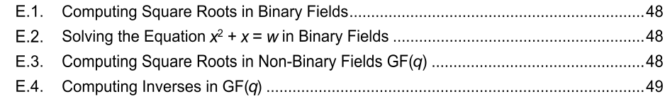

NIST Special Publication · PDF 原文抽出
Recommendations for Discrete Logarithm-based Cryptography: Elliptic Curve Domain Parameters
離散対数ベース暗号の推奨事項：楕円曲線ドメインパラメータ
NIST SP 800-186（Recommendations for Discrete Logarithm-based Cryptography: Elliptic Curve Domain Parameters）の英文と日本語訳を段落ごとに並べた閲覧用ページです。米国政府での使用を推奨する楕円曲線を定め、新しいEdwards曲線や代替表現などのパラメータを示します。 翻訳は有志による非公式のもので、NIST および米国商務省が作成・承認・推奨したものではありません。要件の確認にはNIST の正式版 PDFを参照してください。
NIST Special Publication
NIST特別刊行物
NIST SP 800-186
NIST SP 800-186
Recommendations for Discrete Logarithm-based Cryptography:
離散対数ベース暗号に関する推奨事項：
Elliptic Curve Domain Parameters
楕円曲線ドメインパラメータ
Lily Chen Dustin Moody Karen Randall
Lily Chen、Dustin Moody、Karen Randall
Andrew Regenscheid Angela Robinson
Andrew Regenscheid、Angela Robinson
This publication is available free of charge from: https://doi.org/10.6028/NIST.SP.800-186
この刊行物は次のURLから無料で入手できる：https://doi.org/10.6028/NIST.SP.800-186
NIST Special Publication
NIST特別刊行物
NIST SP 800-186
NIST SP 800-186
Recommendations for Discrete Logarithm-based Cryptography:
離散対数ベース暗号に関する推奨事項：
Elliptic Curve Domain Parameters
楕円曲線ドメインパラメータ
Lily Chen Dustin Moody
Lily Chen、Dustin Moody
Andrew Regenscheid Angela Robinson Computer Security Division Information Technology Laboratory
Andrew Regenscheid、Angela Robinson、コンピュータセキュリティ部門、情報技術研究所
Karen Randall Randall Consulting
Karen Randall、Randall Consulting
This publication is available free of charge from: https://doi.org/10.6028/NIST.SP.800-186
この刊行物は次のURLから無料で入手できます：https://doi.org/10.6028/NIST.SP.800-186
February 2023
2023年2月
［米国商務省の紋章。公的な標章のため、この非公式サイトには掲載していない。原本 PDF を参照。］
U.S. Department of Commerce Gina M. Raimondo, Secretary
米国商務省 ジーナ・M・レモンド長官
National Institute of Standards and Technology
米国国立標準技術研究所
Laurie E. Locascio, NIST Director and Under Secretary of Commerce for Standards and Technology
ローリー・E・ロカシオ、NIST所長兼商務省標準技術担当次官
Certain commercial entities, equipment, or materials may be identified in this document in order to describe an experimental procedure or concept adequately. Such identification is not intended to imply recommendation or endorsement by the National Institute of Standards and Technology (NIST), nor is it intended to imply that the entities, materials, or equipment are necessarily the best available for the purpose.
実験手順または概念を十分に説明するため、この文書で特定の商業事業体、機器、または材料に言及することがある。そのような言及は、米国国立標準技術研究所（NIST）による推奨または支持を意味するものではなく、また、当該事業体、材料、機器がその目的に利用できるものの中で必ずしも最良であることを意味するものでもない。
There may be references in this publication to other publications currently under development by NIST in accordance with its assigned statutory responsibilities. The information in this publication, including concepts and methodologies, may be used by federal agencies even before the completion of such companion publications. Thus, until each publication is completed, current requirements, guidelines, and procedures, where they exist, remain operative. For planning and transition purposes, federal agencies may wish to closely follow the development of these new publications by NIST.
本刊行物には、NISTが所管する法的責任に従って現在策定中の他の刊行物への参照が含まれる場合がある。本刊行物に含まれる情報（概念や方法論を含む）は、関連刊行物が完成する前であっても連邦政府機関が使用できる。したがって、各刊行物が完成するまでは、既存の要件、ガイドライン、手順は引き続き有効である。計画および移行のため、連邦政府機関はNISTによるこれらの新しい刊行物の策定状況を綿密に確認するとよいであろう。
Organizations are encouraged to review all draft publications during public comment periods and provide feedback to NIST. Many NIST cybersecurity publications, other than the ones noted above, are available at https://csrc.nist.gov/publications.
組織には、パブリックコメント期間中にすべての草案刊行物を確認し、NISTに意見を提出することが推奨される。上記以外のNISTサイバーセキュリティ刊行物の多くは、https://csrc.nist.gov/publications で入手できる。
Authority This publication has been developed by NIST in accordance with its statutory responsibilities under the Federal Information Security Modernization Act (FISMA) of 2014, 44 U.S.C. § 3551 et seq., Public Law (P.L.) 113-283. NIST is responsible for developing information security standards and guidelines, including minimum requirements for federal information systems, but such standards and guidelines shall not apply to national security systems without the express approval of appropriate federal officials exercising policy authority over such systems. This guideline is consistent with the requirements of the Office of Management and Budget (OMB) Circular A-130.
法的根拠 本刊行物は、2014年連邦情報セキュリティ近代化法（FISMA）、44 U.S.C. § 3551以降、およびPublic Law（P.L.）113-283に基づく法的責任に従ってNISTが作成した。NISTは、連邦情報システムの最低要件を含む情報セキュリティ標準およびガイドラインの策定を担う。ただし、そのような標準およびガイドラインは、当該システムに対する政策権限を行使する適切な連邦当局者の明示的な承認がない限り、国家安全保障システムには適用されない。本ガイドラインは、行政管理予算局（OMB）通達A-130の要件と整合している。
Nothing in this publication should be taken to contradict the standards and guidelines made mandatory and binding on federal agencies by the Secretary of Commerce under statutory authority. Nor should these guidelines be interpreted as altering or superseding the existing authorities of the Secretary of Commerce, Director of the OMB, or any other federal official. This publication may be used by nongovernmental organizations on a voluntary basis and is not subject to copyright in the United States. Attribution would, however, be appreciated by NIST.
本刊行物のいかなる記述も、法的権限に基づき商務長官が連邦政府機関に義務付けた基準およびガイドラインに反するものと解釈してはならない。また、本ガイドラインを、商務長官、OMB長官、その他の連邦当局者の既存の権限を変更または置き換えるものと解釈してはならない。本刊行物は、政府機関以外の組織も任意に利用でき、米国では著作権の対象ではない。ただし、NISTへの出典表示を歓迎する。
NIST Technical Series Policies Copyright, Use, and Licensing Statements NIST Technical Series Publication Identifier Syntax
NIST技術シリーズの方針：著作権、使用およびライセンスに関する声明／NIST技術シリーズ刊行物識別子の表記法
Publication History Approved by the NIST Editorial Review Board on 2022-09-07
刊行履歴 NIST編集審査委員会による承認日：2022-09-07
How to Cite this NIST Technical Series Publication: Chen L, Moody D, Regenscheid A, Robinson A, Randall K (2023) Recommendations for Discrete Logarithm-based Cryptography: Elliptic Curve Domain Parameters. (National Institute of Standards and Technology, Gaithersburg, MD), NIST Special Publication (SP) NIST SP 800-186. https://doi.org/10.6028/NIST.SP.800-186
このNIST技術シリーズ刊行物の引用方法：Chen L、Moody D、Regenscheid A、Robinson A、Randall K（2023）Recommendations for Discrete Logarithm-based Cryptography: Elliptic Curve Domain Parameters. (National Institute of Standards and Technology, Gaithersburg, MD), NIST Special Publication (SP) NIST SP 800-186. https://doi.org/10.6028/NIST.SP.800-186
Author ORCID iDs
著者のORCID iD
Lily Chen: 0000-0003-2726-4279
Lily Chen: 0000-0003-2726-4279
Dustin Moody: 0000-0002-4868-6684
Dustin Moody: 0000-0002-4868-6684
Andrew Regenscheid: 0000-0002-3930-527X
Andrew Regenscheid: 0000-0002-3930-527X
Angela Robinson: 0000-0002-1209-0379
Angela Robinson: 0000-0002-1209-0379
Contact Information
連絡先
sp800-186-comments@nist.gov
sp800-186-comments@nist.gov
National Institute of Standards and Technology Attn: Computer Security Division, Information Technology Laboratory 100 Bureau Drive (Mail Stop 8930) Gaithersburg, MD 20899-8930
米国国立標準技術研究所 宛先：コンピュータセキュリティ部門、情報技術研究所 100 Bureau Drive（Mail Stop 8930）、Gaithersburg, MD 20899-8930
All comments are subject to release under the Freedom of Information Act (FOIA).
すべてのコメントは、情報公開法（FOIA）に基づく公開の対象である。
Abstract
概要
This Recommendation specifies the set of elliptic curves recommended for U.S. Government use. In addition to the previously recommended Weierstrass curves defined over prime fields and binary fields, this Recommendation includes two newly specified Edwards curves, which provide increased performance, side-channel resistance, and simpler implementation when compared to traditional curves. This Recommendation also specifies alternative representations for these new curves to allow more implementation flexibility. The new curves are interoperable with those specified by the Crypto Forum Research Group (CFRG) of the Internet Engineering Task Force (IETF).
本勧告は、米国政府による使用を推奨する楕円曲線の集合を規定する。素数体および二進体上に定義された従来推奨のWeierstrass曲線に加え、本勧告は新たに規定した2つのEdwards曲線を含む。これらは従来の曲線より性能が高く、サイドチャネル攻撃への耐性があり、実装が簡潔である。また、実装の柔軟性を高めるため、これらの新しい曲線の代替表現も規定する。新しい曲線は、Internet Engineering Task Force（IETF）のCrypto Forum Research Group（CFRG）が規定した曲線と相互運用可能である。
Keywords
キーワード
computer security; discrete logarithm-based groups; domain parameters; elliptic curve cryptography.
コンピュータセキュリティ、離散対数ベース群、ドメインパラメータ、楕円曲線暗号。
Reports on Computer Systems Technology
コンピュータシステム技術に関する報告書
The Information Technology Laboratory (ITL) at the National Institute of Standards and Technology (NIST) promotes the U.S. economy and public welfare by providing technical leadership for the Nation’s measurement and standards infrastructure. ITL develops tests, test methods, reference data, proof of concept implementations, and technical analyses to advance the development and productive use of information technology. ITL’s responsibilities include the development of management, administrative, technical, and physical standards and guidelines for the cost-effective security and privacy of other than national security-related information in federal information systems. The Special Publication 800-series reports on ITL’s research, guidelines, and outreach efforts in information system security, and its collaborative activities with industry, government, and academic organizations.
米国国立標準技術研究所（NIST）の情報技術研究所（ITL）は、米国の計測・標準基盤に技術的リーダーシップを提供し、米国経済と公共の福祉を促進している。ITLは、情報技術の発展と有効活用を進めるため、試験、試験方法、参照データ、概念実証実装、および技術分析を開発する。ITLの責務には、連邦情報システムにおける国家安全保障関連以外の情報の費用対効果の高いセキュリティとプライバシーに関する管理的、運用的、技術的、物理的な標準およびガイドラインの策定が含まれる。SP 800シリーズは、情報システムセキュリティに関するITLの研究、ガイドライン、普及活動、および産業界、政府、学術機関との協働活動を報告するものである。
Audience
対象読者
This document is intended for implementers of cryptographic schemes that include the use of elliptic curve cryptography.
本書は、楕円曲線暗号を含む暗号方式の実装者を対象とする。
Conformance Testing
適合性試験
Conformance testing for implementations of this Recommendation will be conducted within the framework of the Cryptographic Algorithm Validation Program (CAVP) and the Cryptographic Module Validation Program (CMVP). The requirements of this Recommendation are indicated by the word “shall.” Some of these requirements may be out of scope for CAVP or CMVP validation testing and are thus the responsibility of entities using, implementing, installing, or configuring applications that incorporate this Recommendation. Conformant implementations may perform procedures via an equivalent sequence of operations, provided that these include all cryptographic checks included with the specifications in this document. This is important because the checks are essential for the prevention of subtle attacks.
本勧告の実装に対する適合性試験は、暗号アルゴリズム検証プログラム（CAVP）および暗号モジュール検証プログラム（CMVP）の枠組みで実施される。本勧告の要件は「shall」（～しなければならない）という語で示される。これらの要件の一部はCAVPまたはCMVPの検証試験の範囲外となる場合があり、その場合、本勧告を組み込んだアプリケーションを使用、実装、設置または設定する主体が責任を負う。本勧告に適合する実装は、本書の仕様に含まれるすべての暗号学的チェックを含むことを条件として、等価な操作列を用いて手順を実行してもよい。この条件が重要なのは、これらのチェックが巧妙な攻撃の防止に不可欠であるためである。
Patent Disclosure Notice
特許開示に関する通知
NOTICE: ITL has requested that holders of patent claims whose use may be required for compliance with the guidance or requirements of this publication disclose such patent claims to ITL. However, holders of patents are not obligated to respond to ITL calls for patents and ITL has not undertaken a patent search in order to identify which, if any, patents may apply to this publication. As of the date of publication and following call(s) for the identification of patent claims whose use may be required for compliance with the guidance or requirements of this publication, no such patent claims have been identified to ITL. No representation is made or implied by ITL that licenses are not required to avoid patent infringement in the use of this publication.
通知：本刊行物の指針または要件への適合に必要となる可能性のある特許請求項を保有する者に対し、ITLはその特許請求項をITLへ開示するよう求めている。ただし、特許保有者にはITLの特許開示要請に応じる義務はなく、ITLも本刊行物に適用される可能性のある特許を特定するための調査を行っていない。本刊行物の指針または要件への適合に必要となる可能性のある特許請求項を特定するための要請を行った後、刊行日現在、そのような特許請求項はITLによって特定されていない。ITLは、本刊行物の使用時に特許侵害を回避するためのライセンスが不要であると表明または暗示するものではない。
Table of Contents
目次
Executive Summary — 1
エグゼクティブサマリー — 1
1. Introduction — 2
1. はじめに — 2
Overview of Elliptic Curves — 4
楕円曲線の概要 — 4
2.1.1. Curves in Short-Weierstrass Form — 4
2.1.1. ショート・ワイエルシュトラス形式の曲線 — 4
2.1.2. Montgomery Curves — 4
2.1.2. モンゴメリ曲線 — 4
2.1.3. Twisted Edwards Curves — 5
2.1.3. ツイステッド・エドワーズ曲線 — 5
2.2.1. Curves in Short-Weierstrass Form — 5
2.2.1. ショート・ワイエルシュトラス形式の曲線 — 5
Recommended Curves for U.S. Federal Government Use — 6
米国連邦政府での使用を推奨する曲線 — 6
3.1.1. Choice of Key Lengths — 6
3.1.1. 鍵長の選択 — 6
3.1.2. Choice of Underlying Fields — 6
3.1.2. 基礎体の選択 — 6
3.1.3. Choice of Basis for Binary Fields — 7
3.1.3. 二元体の基底の選択 — 7
3.1.4. Choice of Curves — 8
3.1.4. 曲線の選択 — 8
3.2.1. Weierstrass Curves — 9
3.2.1. ワイエルシュトラス曲線 — 9
3.2.2. Montgomery Curves — 15
3.2.2. モンゴメリ曲線 — 15
3.2.3. Twisted Edwards Curves — 17
3.2.3. ツイステッド・エドワーズ曲線 — 17
3.3.1. Koblitz Curves — 21
3.3.1. コブリッツ曲線 — 21
3.3.2. Pseudorandom Curves — 24
3.3.2. 疑似ランダム曲線 — 24
References — 28
参考文献 — 28
Appendix A. Details of Elliptic Curve Group Operations — 30
付録A. 楕円曲線の群演算の詳細 — 30
A.1.1. Group Law for Weierstrass Curves — 30
A.1.1. ワイエルシュトラス曲線の群演算則 — 30
A.1.2. Group Law for Montgomery Curves — 30
A.1.2. モンゴメリ曲線の群演算則 — 30
A.1.3. Group Law for Twisted Edwards Curves — 30
A.1.3. ツイステッド・エドワーズ曲線の群演算則 — 30
A.2.1. Group Law for Weierstrass Curves — 31
A.2.1. ワイエルシュトラス曲線の群演算則 — 31
Appendix B. Relationships Between Curve Models — 32
付録B. 曲線モデル間の関係 — 32
Appendix C. Generation Details for Recommended Elliptic Curves — 35
付録C. 推奨楕円曲線の生成詳細 — 35
C.1.1. Implementation Security Criteria — 35
C.1.1. 実装セキュリティ基準 — 35
C.2.1. Weierstrass Curves Over Prime Fields — 35
C.2.1. 素体上のワイエルシュトラス曲線 — 35
C.2.2. Montgomery Curves — 36
C.2.2. モンゴメリ曲線 — 36
C.2.3. Twisted Edwards Curves — 37
C.2.3. ツイステッド・エドワーズ曲線 — 37
C.2.4. Weierstrass Curves over Binary Fields — 37
C.2.4. 二元体上のワイエルシュトラス曲線 — 37
C.3.1. Generation of Pseudorandom Curves (Prime Case) — 38
C.3.1. 疑似ランダム曲線の生成（素体の場合） — 38
C.3.2. Verification of Curve Generation (Prime Case) — 39
C.3.2. 曲線生成の検証（素体の場合） — 39
C.3.3. Generation of Pseudorandom Curves (Binary Case) — 40
C.3.3. 疑似ランダム曲線の生成（二元体の場合） — 40
C.3.4. Verification of Curve Generation (Binary Case) — 41
C.3.4. 曲線生成の検証（二元体の場合） — 41
Appendix D. Elliptic Curve Routines — 42
付録D. 楕円曲線ルーチン — 42
D.1.1. Non-binary Curves in Short-Weierstrass Form — 42
D.1.1. 短ワイエルシュトラス形式の非二元曲線 — 42
D.1.2. Montgomery Curves — 42
D.1.2. モンゴメリ曲線 — 42
D.1.3. Twisted Edwards Curves — 43
D.1.3. ツイステッド・エドワーズ曲線 — 43
D.1.4. Binary Curves in Short-Weierstrass Form — 44
D.1.4. 短ウィアストラス形式の二元曲線 — 44
D.2.1. Prime Curves in Short-Weierstrass Form — 45
D.2.1. 短ワイエルシュトラス形式の素体上の曲線 — 45
D.2.2. Binary Curves in Short-Weierstrass Form — 46
D.2.2. 短ワイエルシュトラス形式の二元曲線 — 46
Appendix E. Auxiliary Functions — 48
付録E. 補助関数 — 48

付録 E の目次項目（原本では画像として組まれている）。E.1. 二元体における平方根の計算（48 ページ）、E.2. 二元体における方程式 x^2 + x = w の解法（48 ページ）、E.3. 非二元体 GF(q) における平方根の計算（48 ページ）、E.4. GF(q) における逆元の計算（49 ページ）。
Appendix F. Data Conversion — 50
付録F. データ変換 — 50
Appendix G. Implementation Aspects — 52
付録G. 実装上の考慮事項 — 52
G.1.1. Curve P-224 — 52
G.1.1. 曲線P-224 — 52
G.1.2. Curve P-256 — 52
G.1.2. 曲線P-256 — 52
G.1.3. Curve P-384 — 53
G.1.3. 曲線P-384 — 53
G.1.4. Curve P-521 — 54
G.1.4. 曲線P-521 — 54
G.1.5. Curve25519 — 54
G.1.5. Curve25519 — 54
G.1.6. Curve448 — 54
G.1.6. Curve448 — 54
G.3.1. Normal Bases — 57
G.3.1. 正規基底 — 57
G.3.2. Polynomial Basis to Normal Basis Conversion — 59
G.3.2. 多項式基底から正規基底への変換 — 59
G.3.3. Normal Basis to Polynomial Basis Conversion — 59
G.3.3. 正規基底から多項式基底への変換 — 59
Appendix H. Other Allowed Elliptic Curves — 61
付録H. その他の許容される楕円曲線 — 61
Appendix I. List of Symbols, Abbreviations, and Acronyms — 62
付録I. 記号、略語および頭字語一覧 — 62
Appendix J. Glossary — 64
付録J. 用語集 — 64
List of Tables
表一覧
Table 1. Approximate Security Strength of the Recommended Curves — 6
表1. 推奨曲線のおおよそのセキュリティ強度 — 6
Table 2. Allowed Usage of the Specified Curves — 7
表2. 規定された曲線の許可用途 — 7
Acknowledgments
謝辞
The authors of NIST SP 800-186—Lily Chen, Dustin Moody, Andrew Regenscheid, Karen Randall, and Angela Robinson—wish to thank Rene Struik, Rich Davis, and Scott Simon for their contributions to this document. The authors also acknowledge and appreciate colleagues who reviewed earlier versions of this document, as well as the support from public and private sectors whose constructive and beneficial comments greatly enhanced the utility of this publication.
NIST SP 800-186の著者であるLily Chen、Dustin Moody、Andrew Regenscheid、Karen Randall、Angela Robinsonは、本書への貢献に対しRene Struik、Rich Davis、Scott Simonに謝意を表する。また、以前の版をレビューした同僚の協力に感謝するとともに、本刊行物の有用性を大きく高めた建設的で有益な意見を寄せた官民両部門からの支援にも謝意を表する。
Executive Summary
エグゼクティブサマリー
This Recommendation specifies the set of elliptic curves recommended for U.S. Government use. It includes:
- Specification of elliptic curves previously specified in Federal Information Processing Standard (FIPS) 186-4, Digital Signature Schemes [FIPS_186-4]. This includes both elliptic curves defined over a prime field and curves defined over a binary field. Although the specifications for elliptic curves over binary fields are included, these curves are now deprecated. It is strongly recommended to use the other prime curves.
- Specification of new Montgomery and Edwards curves, which are detailed in Elliptic Curves for Security [RFC_7748].
- A reference for the Brainpool curves specified in [RFC_5639]. These curves are allowed to be used for interoperability reasons (i.e., to accommodate inclusion in FIPS-validated products).
- A reference for the curve secp256k1 specified in [SEC_2]. This curve is allowed to be used for blockchain-related applications.
- Elliptic curves in FIPS 186-4 that do not meet the current bit security requirements put forward in NIST Special Publication (SP) 800-57, Part 1, Recommendation for Key Management: Part 1 – General [SP_800-57], are now legacy-use. They may be used to process already protected information (e.g., decrypt or verify) but not to apply protection to information (e.g., encrypt or sign). Also see NIST SP 800-131A, Transitions: Recommendation for Transitioning the Use of Cryptographic Algorithms and Key Lengths [SP_800-131A].
本勧告は、米国政府での使用を推奨する楕円曲線の集合を規定する。これには次が含まれる。
- 連邦情報処理標準（FIPS）186-4「デジタル署名方式」[FIPS_186-4]で以前に規定された楕円曲線の仕様。素体上に定義された楕円曲線と二元体上に定義された曲線の双方を含む。二元体上の楕円曲線の仕様も含まれているが、これらの曲線は現在では非推奨である。他の素体上の曲線を使用することを強く推奨する。
- 「セキュリティのための楕円曲線」[RFC_7748]で詳述されている、新しいモンゴメリ曲線およびエドワーズ曲線の仕様。
- [RFC_5639]で規定されているBrainpool曲線への参照。これらの曲線は、相互運用性のため（すなわち、FIPS検証済み製品への組込みに対応するため）に使用が認められている。
- [SEC_2]で規定されている曲線secp256k1への参照。この曲線は、ブロックチェーン関連の用途で使用が認められている。
- FIPS 186-4の楕円曲線のうち、NIST特別刊行物（SP）800-57第1部「鍵管理に関する勧告：第1部 – 一般」[SP_800-57]に示された現行のビットセキュリティ要件を満たさないものは、現在ではレガシー用途に限られる。これらは、すでに保護された情報を処理する場合（例：復号または検証）には使用できるが、情報に保護を適用する場合（例：暗号化または署名）には使用できない。NIST SP 800-131A「移行：暗号アルゴリズムおよび鍵長の使用移行に関する勧告」[SP_800-131A]も参照されたい。
This Recommendation provides details regarding the group operations for each of the specified elliptic curves and the relationship between the various curve models, allowing for flexibility regarding the use of curves most suitable in particular applications. It also gives cryptographic criteria for the selection of suitable elliptic curves and provides more details on finite field arithmetic and data representation than were available in FIPS 186-4.
本勧告は、指定された各楕円曲線の群演算と、さまざまな曲線モデル間の関係を詳述し、個々の用途に最も適した曲線を柔軟に使用できるようにする。また、適切な楕円曲線を選択するための暗号学的基準を示し、FIPS 186-4で示されていた内容より詳しい有限体演算およびデータ表現も提供する。
1. Introduction
1. はじめに
1.1. Background
1.1. 背景
Elliptic curve cryptography (ECC) has uses in applications involving digital signatures (e.g., Elliptic Curve Digital Signature Algorithm [ECDSA]) and key agreement schemes (e.g., Elliptic Curve Diffie-Hellman [ECDH]). Historically, elliptic curves have usually been expressed in short Weierstrass format. However, curves that are expressed using a different format, such as Montgomery curves and twisted Edwards curves, have gone from garnering academic interest to being deployed in a number of applications. These curves can provide better performance and increased side-channel resistance.
楕円曲線暗号（ECC）は、デジタル署名（例：楕円曲線デジタル署名アルゴリズム[ECDSA]）や鍵合意方式（例：楕円曲線ディフィー・ヘルマン[ECDH]）を含む応用で利用される。従来、楕円曲線は通常、短いワイエルシュトラス形式で表されてきた。しかし、モンゴメリ曲線やツイステッドエドワーズ曲線のように別の形式で表される曲線は、学術的な関心の対象から、多数の応用で実際に展開されるものへと変わった。これらの曲線は、より高い性能と、より強いサイドチャネル耐性をもたらすことができる。
A number of standards-setting organizations besides NIST (e.g., ANSI X9F, ISO, SEC, and IETF) have developed elliptic curve standards. In June 2015, NIST organized an ECC workshop to discuss the design of alternate elliptic curves that are secure, efficient, and easy to use while also being resilient to a wide range of implementation attacks. Subsequently, NIST solicited public comments on the Digital Signature Standard FIPS 186-4, requesting specific feedback regarding the digital signature schemes in FIPS 186 as well as possible new recommended elliptic curves. This publication is the result of that input.
NIST以外にも、多くの標準化団体（例：ANSI X9F、ISO、SEC、IETF）が楕円曲線の標準を策定してきた。2015年6月、NISTはECCワークショップを開催し、安全で効率的で使いやすく、かつ広範な実装攻撃に耐える代替の楕円曲線の設計について議論した。その後NISTは、デジタル署名標準FIPS 186-4に対するパブリックコメントを募集し、FIPS 186のデジタル署名方式と、新たな推奨楕円曲線の可能性に関する具体的なフィードバックを求めた。本刊行物は、その意見の成果である。
1.2. Purpose and Scope
1.2. 目的と適用範囲
This Recommendation provides updated specifications of elliptic curves that are appropriate for use by the U.S. Federal Government for digital signatures. It is intended for use in conjunction with other NIST publications, such as NIST SP 800-56A, Recommendation for Pair-Wise Key-Establishment Schemes Using Discrete Logarithm-Based Cryptography [SP_800-56A]; FIPS 186-5, Digital Signature Standard [FIPS_186-5]; and related specifications. The key pairs specified here are used for digital signature generation and verification or key agreement only and should not be used for any other purposes.
本勧告は、米国連邦政府がデジタル署名に使用するのに適した楕円曲線について、更新された仕様を提供する。本勧告は、NIST SP 800-56A「離散対数暗号を用いたペアワイズ鍵確立方式に関する勧告」[SP_800-56A]、FIPS 186-5「デジタル署名標準」[FIPS_186-5]などのNIST刊行物および関連する仕様と併せて使用することを意図している。ここで規定する鍵ペアは、デジタル署名の生成と検証、または鍵合意にのみ使用され、それ以外の目的に使用すべきではない。
This Recommendation is intended to provide sufficient information for a vendor to implement ECC using asymmetric algorithms in FIPS 140-3-validated modules.
本勧告は、ベンダーがFIPS 140-3で検証されたモジュールにおいて、公開鍵アルゴリズムを用いてECCを実装するのに十分な情報を提供することを意図している。
1.3. Document Organization
1.3. 文書の構成
The remainder of this document includes the following sections and appendices:
本書の残りの部分は、次の節と付録で構成される。
•Section 2: Overview of Elliptic Curves – This section details the different curve models being used with this Recommendation, including notational conventions.
•第2節：楕円曲線の概要 — 本節では、本勧告で用いるさまざまな曲線モデルと表記規則を詳述する。
•Section 3: Recommended Curves for Federal Government Use – This section highlights the domain parameters for all elliptic curves recommended for U.S. Government use.
•第3節：連邦政府での使用を推奨する曲線 — 本節では、米国政府での使用を推奨するすべての楕円曲線のドメインパラメータを示す。
•References – This section contains information on the documents referenced in the publication.
•参考文献 — 本刊行物で参照した文書に関する情報を記載する。
•Appendix A: Details of Elliptic Curve Group Operations – This appendix discusses the group laws for each of the different curve models specified in this Recommendation.
•付録A：楕円曲線の群演算の詳細 — 本付録では、本勧告で規定する各曲線モデルの群演算則について説明する。
•Appendix B: Relationship Between Curve Models – This appendix details how different curve models are related and how the coordinates of a point and the domain parameters of a curve in one curve model relate to those in another curve model.
•付録B：曲線モデル間の関係 — 本付録では、異なる曲線モデル間の関係、およびある曲線モデルにおける点の座標と曲線のドメインパラメータが、別の曲線モデルにおける対応する値とどのように関係するかを詳述する。
•Appendix C: Generation Details for Recommended Elliptic Curves – This appendix describes the cryptographic criteria that guided the selection of suitable elliptic curves and the process by which one of many such suitable elliptic curves is selected.
•付録C：推奨楕円曲線の生成詳細 — 本付録では、適切な楕円曲線の選択を導いた暗号学的基準と、候補となる複数の適切な楕円曲線から1つを選択する手順を説明する。
•Appendix D: Elliptic Curve Routines – This appendix details elementary routines for elliptic curves, such as verification that these curves are indeed well-formed, and point compression.
•付録D：楕円曲線ルーチン — 本付録では、曲線が正しく定義されていることの検証や点圧縮など、楕円曲線の基本的なルーチンを詳述する。
•Appendix E: Auxiliary Functions – This appendix covers mathematical functions that are used to describe elliptic curve operations and representation conversions, such as inversion and taking square roots.
•付録E：補助関数 — 本付録では、楕円曲線演算や表現変換（逆元の計算や平方根の計算など）を記述するために使われる数学関数を扱う。
•Appendix F: Data Conversion – This appendix documents the detailed procedure for the conversion of data elements, such as integers, field elements, bit strings, octet strings, and elliptic curve points.
•付録F：データ変換 — 本付録では、整数、体要素、ビット列、オクテット列、楕円曲線上の点などのデータ要素を変換する詳細な手順を記載する。
•Appendix G: Implementation Aspects – This appendix discusses the various implementation aspects of binary curves, including conversions between different field representations. For prime curves, it indicates how the special form of the underlying prime field aids in efficient modular reduction.
•付録G：実装上の考慮事項 — 本付録では、異なる体表現間の変換を含む、二元曲線のさまざまな実装上の考慮事項を説明する。素体上の曲線については、基礎となる素体の特殊な形式が効率的な剰余還元にどう役立つかを示す。
•Appendix H: Other Allowed Elliptic Curves – This appendix lists other elliptic curves that may be used for interoperability reasons.
•付録H：その他の許容される楕円曲線 — 本付録では、相互運用性のために使用できるその他の楕円曲線を列挙する。
•Appendix I: Symbols, Abbreviations, and Acronyms
•付録I：記号、略語および頭字語
•Appendix J: Glossary
•付録J：用語集
2. Overview of Elliptic Curves
2. 楕円曲線の概要
Let \(E\) be an elliptic curve defined over the field \(\mathrm{GF}(q)\). The cardinality \(|E|\) of the curve is equal to the number of points defined over \(\mathrm{GF}(q)\) on the curve and satisfies the equation \(|E| = (q+1)-t\), where \(|t| \le 2\sqrt{q}\). Thus, \(|E|\) and \(q\) have the same order of magnitude.
\(E\) を体 \(\mathrm{GF}(q)\) 上で定義された楕円曲線とする。曲線の位数 \(|E|\) は、\(\mathrm{GF}(q)\) 上で曲線上に定義される点の数に等しく、等式 \(|E| = (q+1)-t\) を満たす。ここで \(|t| \le 2\sqrt{q}\) である。したがって、\(|E|\) と \(q\) は同程度の大きさである。
The integer \(t\) is called the trace of \(E\) over the field \(\mathrm{GF}(q)\). The points on \(E\) form a commutative group under addition (for the group law for each curve form, see Appendix A). Any point \(P\) on the curve is the generator of a cyclic subgroup \(\langle P \rangle = \{kP \mid k = 0, 1, 2, \ldots\}\) of \(E\). The order of \(P\) in \(E\) is defined as the cardinality of \(\langle P \rangle\). A curve is cyclic if it is generated by some point on \(E\). All curves of prime order are cyclic, while all curves of order \(|E| = h \cdot n\), where \(n\) is a large prime number and \(h\) is a small number, have a large cyclic subgroup of prime order \(n\). If \(R\) is a point on the curve that is also contained in \(\langle P \rangle\), there is a unique integer \(k\) in the interval \([0, l-1]\) so that \(R = kP\), where \(l\) is the order of \(\mathrm{P}\) in \(E\). This number is called the discrete logarithm of \(R\) to the base \(P\). The discrete logarithm problem is the problem of finding the discrete logarithm of \(R\) to the base \(P\) for any two points \(P\) and \(R\) on the curve, if such a number exists. A quadratic twist of \(E\) is a curve \(E'\) related to \(E\), with cardinality \(|E'| = (q+1)+t\). If \(E\) is a curve in one of the curve forms specified in this Recommendation, a quadratic twist of this curve can be expressed using the same curve model, although with different curve parameters.
整数 \(t\) は、\(E\) の体 \(\mathrm{GF}(q)\) 上のトレースと呼ばれる。\(E\) 上の点は、加法に関して可換群を成す（各曲線形式の群演算則については付録Aを参照）。曲線上の任意の点 \(P\) は、巡回部分群 \(\langle P \rangle = \{kP \mid k = 0, 1, 2, \ldots\}\)（\(E\) の部分群）の生成元である。\(P\) の \(E\) における位数は、\(\langle P \rangle\) の濃度として定義される。\(E\) 上のある点によって生成される曲線を巡回曲線という。素数位数の曲線はすべて巡回である。一方、位数 \(|E| = h \cdot n\)（\(n\) は大きな素数、\(h\) は小さな数）の曲線はすべて、素数位数 \(n\) の大きな巡回部分群を持つ。\(R\) が曲線上の点であり、かつ \(\langle P \rangle\) にも含まれる場合、一意な整数 \(k\) が区間 \([0, l-1]\) 内に存在して \(R = kP\) となる。ここで \(l\) は \(\mathrm{P}\) の \(E\) における位数である。この数を、\(R\) の底 \(P\) に対する離散対数と呼ぶ。離散対数問題とは、\(R\) の底 \(P\) に対する離散対数を、曲線上の任意の2点 \(P\) と \(R\) について、そのような数が存在する場合に求める問題である。\(E\) の二次ツイストとは、曲線 \(E'\) であって、\(E\) に関連し、位数 \(|E'| = (q+1)+t\) を持つものである。\(E\) が本勧告で規定するいずれかの曲線形式の曲線であれば、この曲線の二次ツイストは、曲線パラメータは異なるものの、同じ曲線モデルで表現できる。
2.1. Non-binary Curves
2.1. 非二元曲線
2.1.1. Curves in Short-Weierstrass Form
2.1.1. 短ウィアストラス形式の曲線
Let \(\mathrm{GF}(q)\) denote the finite field with \(q\) elements, where \(q\) is an odd prime power and is not divisible by three. Let \(W_{a,b}\) be the Weierstrass curve with the defining equation \(y^2 = x^3 + ax + b\),
\(\mathrm{GF}(q)\) を \(q\) 個の要素を持つ有限体とする。ここで \(q\) は奇素数冪であり、3で割り切れない。\(W_{a,b}\) を、定義式 \(y^2 = x^3 + ax + b\) を持つウィアストラス曲線とする。
where \(a\) and \(b\) are elements of \(\mathrm{GF}(q)\) with \(4a^3 + 27b^2 \ne 0\). When selecting curve parameters, a \(\mathit{Seed}\) value may be used to generate the parameters \(a\) and \(b\) as described in Appendix C.2.1.1. The points of \(W_{a,b}\) are the ordered pairs \((x, y)\) whose coordinates are elements of \(\mathrm{GF}(q)\) and that
ここで \(a\) および \(b\) は \(\mathrm{GF}(q)\) の要素であり、\(4a^3 + 27b^2 \ne 0\) である。曲線パラメータの選択では、付録C.2.1.1に記載のとおり、\(\mathit{Seed}\) 値を用いてパラメータ \(a\) および \(b\) を生成してもよい。\(W_{a,b}\) の点は、順序対 \((x, y)\) であって、その座標が \(\mathrm{GF}(q)\) の要素であり、かつ
satisfy the defining equation (i.e., the affine points) together with the special point \(\varnothing\) (the “point at infinity”). This set forms a group under the operation of addition on elliptic curves via the “chord-and-tangent” rule, where the point at infinity serves as the identity element. See Appendix A.1.1 for details of the group operation.
定義式を満たすもの（すなわちアフィン点）と、特別な点 \(\varnothing\)（「無限遠点」）から成る。この集合は、「弦と接線」の規則による楕円曲線上の加法演算に関して群を成し、無限遠点が単位元となる。群演算の詳細は付録A.1.1を参照されたい。
2.1.2. Montgomery Curves
2.1.2. モンゴメリ曲線
Let GF(q) denote the finite field with q elements, where q is an odd prime power. Let \(M_{A,B}\) be the Montgomery curve with defining equation \(B v^2 = u (u^2 + A u + 1)\), where A and B are elements of GF(q) with A ≠ ± 2 and B ≠ 0. The points of \(M_{A,B}\) are the ordered pairs (u, v) whose coordinates are elements of GF(q) and that satisfy the defining equation (i.e., the affine points) together with the special point ∅ (the “point at infinity”). This set forms a group under the operation of addition on elliptic curves via the “chord-and-tangent” rule, where the point at infinity serves as the identity element. See Appendix A.1.2 for details of the group operation.
GF(q)を、q個の元を持つ有限体とする。ここでqは奇素数冪である。\(M_{A,B}\)を、定義方程式 \(B v^2 = u (u^2 + A u + 1)\) を持つモンゴメリ曲線とする。ここでAとBはGF(q)の元であり、A ≠ ± 2、B ≠ 0である。\(M_{A,B}\)の点は、座標がGF(q)の元であって定義方程式を満たす順序対(u, v)（すなわちアフィン点）と、特別な点∅（「無限遠点」）である。この集合は、「弦と接線」の規則による楕円曲線上の加算演算に関して群をなし、無限遠点が単位元となる。群演算の詳細は付録A.1.2を参照のこと。
2.1.3. Twisted Edwards Curves
2.1.3. ツイステッド・エドワーズ曲線
Let \(\mathrm{GF}(q)\) denote the finite field with \(q\) elements, where \(q\) is an odd prime power. Let \(E_{a,d}\) be the
\(\mathrm{GF}(q)\) を \(q\) 個の要素を持つ有限体とする。ここで \(q\) は奇素数冪である。\(E_{a,d}\) を
twisted Edwards curve with defining equation \(ax^2 + y^2 = 1 + dx^2y^2\), where \(a\) and \(d\) are elements of \(\mathrm{GF}(q)\) with \(a, d \ne 0\), \(a \ne d\), and \(a\) is a square in \(\mathrm{GF}(q)\) while \(d\) is not. The points of \(E_{a,d}\) are the
定義式 \(ax^2 + y^2 = 1 + dx^2y^2\) を持つツイステッド・エドワーズ曲線とする。ここで \(a\) および \(d\) は \(\mathrm{GF}(q)\) の要素であり、\(a, d \ne 0\)、\(a \ne d\) である。また、\(a\) は \(\mathrm{GF}(q)\) の平方数であるが、\(d\) は平方数ではない。\(E_{a,d}\) の点は、
ordered pairs \((x, y)\) whose coordinates are elements of \(\mathrm{GF}(q)\) and that satisfy the defining equation (i.e., the affine points). It can be shown that this set forms a group under the operation addition, where the point \((0, 1)\) serves as the identity element. The addition formulae are complete, meaning that the formulae work for all inputs on the curve. See Appendix A.1.3 for details of the group operation. An Edwards curve is a twisted Edwards curve with \(a = 1\).
順序対 \((x, y)\) であって、その座標が \(\mathrm{GF}(q)\) の要素であり、かつ定義式を満たすもの（すなわちアフィン点）である。この集合は加法演算に関して群を成すことを示すことができ、点 \((0, 1)\) が単位元となる。加法公式は完全である。すなわち、公式は曲線上のすべての入力に対して機能する。群演算の詳細は付録A.1.3を参照されたい。エドワーズ曲線とは、\(a = 1\) であるツイステッド・エドワーズ曲線である。
2.2. Binary Curves
2.2. 二元曲線
2.2.1. Curves in Short-Weierstrass Form
2.2.1. 短ウィアストラス形式の曲線
Let \(\mathrm{GF}(q)\) denote the finite field with \(q\) elements, where \(q = 2^m\). Let \(B_{a,b}\) be the Weierstrass curve
\(\mathrm{GF}(q)\) を \(q\) 個の要素を持つ有限体とし、\(q = 2^m\) とする。\(B_{a,b}\) を、ウィアストラス曲線であって
with defining equation \(y^2 + xy = x^3 + ax^2 + b\), where \(a\) and \(b\) are elements of \(\mathrm{GF}(q)\) with \(b \ne 0\). The points of \(B_{a,b}\) are the ordered pairs \((x, y)\) whose coordinates are elements of \(\mathrm{GF}(q)\) and that
定義式 \(y^2 + xy = x^3 + ax^2 + b\) を持つものとする。ここで \(a\) および \(b\) は \(\mathrm{GF}(q)\) の要素であり、\(b \ne 0\) である。\(B_{a,b}\) の点は、順序対 \((x, y)\) であって、その座標が \(\mathrm{GF}(q)\) の要素であり、かつ
satisfy the defining equation (i.e., the affine points) together with the special point \(\varnothing\) (the “point at infinity”). This set forms a group under the operation of addition on elliptic curves via the “chord-and-tangent” rule, where the point at infinity serves as the identity element. See Appendix A.2.1 for details of the group operation.
定義式を満たすもの（すなわちアフィン点）と、特別な点 \(\varnothing\)（「無限遠点」）から成る。この集合は、「弦と接線」の規則による楕円曲線上の加法演算に関して群を成し、無限遠点が単位元となる。群演算の詳細は付録A.2.1を参照されたい。
3. Recommended Curves for U.S. Federal Government Use
3. 米国連邦政府での使用が推奨される曲線
This section specifies the elliptic curves recommended for U.S. Federal Government use and contains choices for the private key length and underlying fields. This includes elliptic curves over prime fields (Section 3.2) and elliptic curves over binary fields (Section 3.3), where each curve takes one of the forms described in Section 3 (referred to as “\(\mathit{Type}\)” below).
Each recommended curve is uniquely defined by its domain parameters \(D\), which indicate the field \(\mathrm{GF}(q)\) over which the elliptic curve is defined, the parameters of its defining equation, and principal parameters, such as the cofactor \(h\) of the curve, the order \(n\) of its prime-order subgroup, and a designated point \(G\) on the curve of order \(n\) (i.e., the “base point”). In the case \(q = 2^m\), the domain parameters also include a description of the representation chosen for \(\mathrm{GF}(q)\).
For details regarding the generation method of the elliptic curves, see Appendix C.
本節では、米国連邦政府での使用を推奨する楕円曲線を規定し、秘密鍵長と基礎体の選択肢を示す。これには、素体上の楕円曲線（第3.2節）と二元体上の楕円曲線（第3.3節）が含まれ、各曲線は第3節に記載された形式のいずれかを取る（以下「\(\mathit{Type}\)」と呼ぶ）。
推奨される各曲線は、そのドメインパラメータ\(D\)によって一意に定義される。ドメインパラメータは、楕円曲線が定義される体\(\mathrm{GF}(q)\)、その定義式のパラメータ、ならびに曲線の余因子\(h\)、素数位数部分群の位数\(n\)、曲線上の指定点\(G\)（位数は\(n\)。すなわち「基点」）などの主要パラメータを示す。\(q = 2^m\)の場合、ドメインパラメータには、\(\mathrm{GF}(q)\)について選択した表現方法の説明も含まれる。
楕円曲線の生成方法の詳細は、附属書Cを参照のこと。
3.1. Choices of Key Lengths, Underlying Fields, Curves, and Base Points
3.1. 鍵長、基礎体、曲線および基点の選択
3.1.1. Choice of Key Lengths
3.1.1. 鍵長の選択
The principal parameters for elliptic curve cryptography are the elliptic curve \(E\) and a designated point \(G\) on \(E\) called the base point. The base point has order \(n\), which is a large prime. The number of points on the curve is \(h \cdot n\) for some integer \(h\) (the cofactor), which is not divisible by \(n\). For efficiency reasons, it is desirable for the cofactor to be small. All of the curves given below have cofactors 1, 2, 4, or 8. As a result, the private and public keys for a curve are approximately the same length.
楕円曲線暗号の主要パラメータは、楕円曲線\(E\)と、指定点\(G\)（\(E\)上の点で、基点と呼ぶ）である。基点の位数は\(n\)であり、これは大きな素数である。曲線上の点の数は\(h \cdot n\)であり、ここで整数\(h\)（余因子）は\(n\)で割り切れない。効率上、余因子は小さいことが望ましい。以下に示す曲線の余因子はすべて1、2、4または8である。そのため、同じ曲線に対する秘密鍵と公開鍵の長さはおおむね等しい。
3.1.2. Choice of Underlying Fields
3.1.2. 基礎体の選択
For each key length, two kinds of fields are provided:
各鍵長について、次の2種類の体が用意されている。
1. A prime field is the field \(\mathrm{GF}(p)\), which contains a prime number \(p\) of elements. The elements of this field are the integers modulo \(p\), and the field arithmetic is implemented in terms of the arithmetic of integers modulo \(p\).
1. 素体は体\(\mathrm{GF}(p)\)であり、その要素数は素数\(p\)である。この体の要素は法\(p\)での整数であり、体演算は法\(p\)での整数演算として実装される。
2. A binary field is the field \(\mathrm{GF}(2^m)\), which contains \(2^m\) elements for some \(m\) (called the degree of the field). The elements of this field are the bit strings of length \(m\), and the field arithmetic is implemented in terms of operations on the bits.
2. 二元体は体\(\mathrm{GF}(2^m)\)であり、\(2^m\)個の要素を持つ。ここで\(m\)は体の次数と呼ぶ。この体の要素は長さ\(m\)のビット列であり、体演算はビットに対する演算として実装される。
The approximate security strengths for the elliptic curves specified in this document are given in Table 1. The security strength of an elliptic curve is directly related to the order of the basepoint. In general, if an elliptic curve has a basepoint of order \(n\), then the security strength will be approximately one half of the bit length of \(n\).
本書で規定する楕円曲線のおおよそのセキュリティ強度を表1に示す。楕円曲線のセキュリティ強度は、基点の位数に直接関係する。一般に、基点の位数が\(n\)である楕円曲線のセキュリティ強度は、\(n\)のビット長のおよそ半分となる。
Table 1. Approximate Security Strength of the Recommended Curves
表1. 推奨曲線のおおよそのセキュリティ強度
| Security Strength | Recommended Curves |
|---|---|
| 112 | P-224, K-233, B-233 |
| セキュリティ強度 | 推奨曲線 |
|---|---|
| 112 | P-224、K-233、B-233 |
| Security Strength | Recommended Curves |
|---|---|
| 128 | P-256, W-25519, Curve25519, Edwards25519, K-283, B-283 |
| 192 | P-384, K-409, B-409 |
| 224 | W-448, Curve448, Edwards448, E448 |
| 256 | P-521, K-571, B-571 |
| セキュリティ強度 | 推奨曲線 |
|---|---|
| 128 | P-256、W-25519、Curve25519、Edwards25519、K-283、B-283 |
| 192 | P-384、K-409、B-409 |
| 224 | W-448、Curve448、Edwards448、E448 |
| 256 | P-521、K-571、B-571 |
Elliptic curves in FIPS 186-4 that do not meet the current bit security requirements put forward in NIST SP 800-57, Part 1, Recommendation for Key Management: Part 1 – General [SP_800-57], are now legacy-use. They may be used to process already protected information (e.g., decrypt or verify) but not to apply protection to information (e.g., encrypt or sign). Also see NIST SP 800-131A, Transitions: Recommendation for Transitioning the Use of Cryptographic Algorithms and Key Lengths [SP_800-131A]. Each elliptic curve specified in this recommendation is allowed for specific NIST approved cryptographic functions. The allowed usages for each curve are summarized in Table 2.
FIPS 186-4で規定された楕円曲線のうち、NIST SP 800-57第1部「鍵管理に関する勧告：第1部—一般」[SP_800-57]に示された現行のビットセキュリティ要件を満たさないものは、現在、レガシー用途に限られる。これらは、すでに保護された情報の処理（例：復号または検証）には使用できるが、情報への保護の適用（例：暗号化または署名）には使用できない。NIST SP 800-131A「移行：暗号アルゴリズムおよび鍵長の使用移行に関する勧告」[SP_800-131A]も参照されたい。本勧告で規定する各楕円曲線は、特定のNIST承認済み暗号機能での使用が認められている。各曲線の許可用途を表2にまとめる。
Table 2. Allowed Usage of the Specified Curves
表2. 規定された曲線の許可用途
| Specified Curves | Allowed Usage |
|---|---|
| K-233, B-233 K-283, B-283 K-409, B-409 K-571, B-571 | Deprecated |
| P-224 P-256 P-384 P-521 | ECDSA, EC key establishment (see [SP_800-56A]) |
| Edwards25519 Edwards448 | EdDSA |
| Curve25519, W-25519 Curve448, E448, W-448 | Alternative representations included for implementation flexibility. Not to be used for ECDSA or EdDSA directly. |
| 規定曲線 | 許可用途 |
|---|---|
| K-233、B-233 K-283、B-283 K-409、B-409 K-571、B-571 | 非推奨 |
| P-224 P-256 P-384 P-521 | ECDSA、EC 鍵確立（[SP_800-56A] を参照） |
| Edwards25519 Edwards448 | EdDSA |
| Curve25519、W-25519 Curve448、E448、W-448 | 実装の柔軟性のために含まれる代替表現。ECDSA または EdDSA に直接使用してはならない。 |
3.1.3. Choice of Basis for Binary Fields
3.1.3. 二元体の基底の選択
To describe the arithmetic of a binary field, it is first necessary to specify how a bit string is to be interpreted. This is referred to as choosing a basis for the field. There are two common types of bases: a polynomial basis and a normal basis.
二元体の演算を記述するには、まずビット列をどのように解釈するかを定める必要がある。これは、体の基底を選択することに相当する。基底には、一般に多項式基底と正規基底の2種類がある。
• A polynomial basis is specified by an irreducible polynomial modulo 2 called the field polynomial. The bit string \((a_{m-1} \; \ldots \; a_2 \; a_1 \; a_0)\) is used to represent the polynomial
• 多項式基底は、2を法とする既約多項式（体多項式と呼ぶ）によって定められる。ビット列\((a_{m-1} \; \ldots \; a_2 \; a_1 \; a_0)\)は、次の多項式を表すために用いる。
over \(\mathrm{GF}(2)\). The field arithmetic is implemented as polynomial arithmetic modulo \(p(t)\), where \(p(t)\) is the field polynomial.
これは\(\mathrm{GF}(2)\)上の多項式である。体演算は\(p(t)\)を法とする多項式演算として実装され、\(p(t)\)は体多項式である。
• A normal basis is specified by an element \(\theta\) of a particular kind. The bit string \((a_0 \; a_1 \; a_2 \; \ldots \; a_{m-1})\) is used to represent the element
• 正規基底は、特定の性質を持つ要素\(\theta\)によって定められる。ビット列\((a_0 \; a_1 \; a_2 \; \ldots \; a_{m-1})\)は、次の要素を表すために用いる。
Normal basis field arithmetic is not easy to describe or efficient to implement in general except for a special class called Type \(T\) low-complexity normal bases. For a given field of degree \(m\), the choice of \(T\) specifies the basis and the field arithmetic (see Appendix G.3).
正規基底による体演算は、Type \(T\)低複雑度正規基底と呼ばれる特殊なクラスを除き、一般には記述も効率的な実装も容易ではない。次数\(m\)の体では、\(T\)の選択によって基底と体演算が定まる（付録G.3を参照）。
There are many polynomial bases and normal bases from which to choose. The following procedures are commonly used to select a basis representation:
選択可能な多項式基底や正規基底は多数ある。基底表現の選択には、通常、次の手順が用いられる。
• Polynomial Basis: If an irreducible trinomial \(t^m + t^k + 1\) exists over \(\mathrm{GF}(2)\), then the field polynomial \(p(t)\) is chosen to be the irreducible trinomial with the lowest-degree middle term \(t^k\). If no irreducible trinomial exists, then a pentanomial \(t^m + t^a + t^b + t^c + 1\) is selected. The particular pentanomial chosen has the following properties: the second term \(t^a\) has the lowest degree among all irreducible pentanomials of degree \(m\); the third term \(t^b\) has the lowest degree among all irreducible pentanomials of degree \(m\) with the second term \(t^a\); and the fourth term \(t^c\) has the lowest degree among all irreducible pentanomials of degree \(m\) with the second term \(t^a\) and third term \(t^b\).
• 多項式基底：既約三項式\(t^m + t^k + 1\)が\(\mathrm{GF}(2)\)上に存在する場合、体多項式\(p(t)\)には、中央項\(t^k\)の次数が最小となる既約三項式を選ぶ。既約三項式が存在しない場合は、五項式\(t^m + t^a + t^b + t^c + 1\)を選ぶ。選択する五項式は、次の性質を持つ。第2項\(t^a\)は、次数\(m\)のすべての既約五項式の中で次数が最小である。第3項\(t^b\)は、次数\(m\)で第2項が\(t^a\)であるすべての既約五項式の中で次数が最小である。第4項\(t^c\)は、次数\(m\)で第2項が\(t^a\)かつ第3項が\(t^b\)であるすべての既約五項式の中で次数が最小である。
• Normal Basis: Choose the Type \(T\) low-complexity normal basis with the smallest \(T\).
• 正規基底：Type \(T\)低複雑度正規基底のうち、最小の\(T\)を持つものを選択する。
For each binary field, the parameters are given for the above basis representations.
各2元体について、上記の基底表現に対するパラメータを示す。
3.1.4. Choice of Curves
3.1.4. 曲線の選択
Two kinds of curves are given:
2種類の曲線を示す。
•Pseudorandom curves are those whose coefficients are generated from the output of a cryptographic hash function (with input from a random seed). If the domain parameter seed value is given along with the coefficients, it can be easily verified that the coefficients were generated by that method. The generation and verification procedures for the pseudorandom curves in this section are specified in Appendix C.3.
•疑似乱数曲線は、係数が暗号学的ハッシュ関数の出力（入力はランダムなシード）から生成された曲線である。ドメインパラメータのシード値が係数とともに与えられていれば、その方法で係数が生成されたことを容易に検証できる。本節の疑似乱数曲線の生成手順と検証手順は、付録C.3で規定する。
•Special curves are those whose coefficients and underlying fields have been selected to optimize the efficiency of the elliptic curve operations.
•特殊曲線は、楕円曲線演算の効率を最適化するように、係数と基礎となる体が選択された曲線である。
For each curve size range, the following curves are given in Sections 3.2 and 3.3:
→ A pseudorandom curve over \(\mathrm{GF}(p)\)
→ A pseudorandom curve over \(\mathrm{GF}(2^{m})\)
→ A special curve over \(\mathrm{GF}(2^{m})\) called a Koblitz curve or anomalous binary curve
曲線サイズの各範囲について、第3.2節および第3.3節に次の曲線を示す。
→ \(\mathrm{GF}(p)\)上の疑似ランダム曲線
→ \(\mathrm{GF}(2^{m})\)上の疑似ランダム曲線
→ コブリッツ曲線または異常二元曲線と呼ばれる、\(\mathrm{GF}(2^{m})\)上の特殊曲線
In addition, some special Edwards, Weierstrass, and Montgomery curves over \(\mathrm{GF}(p)\) are given for two size ranges.
さらに、2つのサイズ範囲について、\(\mathrm{GF}(p)\)上の特殊なエドワーズ曲線、ウィアストラス曲線およびモンゴメリ曲線を示す。
3.2. Curves Over Prime Fields
3.2. 素体上の曲線
This section specifies elliptic curves over prime fields recommended for U.S. Federal Government use, where each curve takes the form of a curve in short-Weierstrass form (Section 3.2.1), a Montgomery curve (Section 3.2.2), or a twisted Edwards curve (Section 3.2.3).
本節では、米国連邦政府での使用を推奨する素体上の楕円曲線を規定する。各曲線は、短ウィアストラス形式（第3.2.1節）、モンゴメリ曲線（第3.2.2節）、またはツイステッド・エドワーズ曲線（第3.2.3節）のいずれかである。
3.2.1. Weierstrass Curves
3.2.1. ウィアストラス曲線
This specification includes pseudorandom Weierstrass curves generated over prime fields P-192, P-224, P-256, P-384, and P-521 (see Sections 3.2.1.2 – 3.2.1.5) and special Weierstrass curves over prime fields W-25519 (Section 3.2.1.6) and W-448 (Section 3.2.1.7).
For each Weierstrass curve,
the following domain parameters \(D = (p, h, n, \mathit{Type}, a, b, G, \{\mathit{Seed}, c\})\) are given:
本仕様には、素体上で生成される疑似ランダム・ウィアストラス曲線P-192、P-224、P-256、P-384、P-521（第3.2.1.2節～第3.2.1.5節を参照）と、素体上の特殊ウィアストラス曲線W-25519（第3.2.1.6節）およびW-448（第3.2.1.7節）が含まれる。
各ウィアストラス曲線
について、次のドメインパラメータ\(D = (p, h, n, \mathit{Type}, a, b, G, \{\mathit{Seed}, c\})\)を示す。
• The prime modulus \(p\)
• 素数の法\(p\)
• The cofactor \(h\)
• 余因子\(h\)
o For pseudorandom curves, the cofactor \(h = 1\), so the order \(n\) is prime.
o For special curves, the cofactor \(h > 1\), so the order \(n\) is not prime.
o 疑似ランダム曲線の場合、余因子\(h = 1\)であるため、位数\(n\)は素数である。
o 特殊曲線の場合、余因子\(h > 1\)であるため、位数\(n\)は素数ではない。
• The \(\mathit{Type}\) is “Weierstrass curve”
• \(\mathit{Type}\)は「ウィアストラス曲線」である
• The coefficient \(a\)
• 係数\(a\)
o For pseudorandom curves, \(a = -3\) was made for reasons of efficiency; see IEEE Std 1363-2000.
o 疑似ランダム曲線では、効率上の理由から\(a = -3\)としている（IEEE Std 1363-2000を参照）。
• The coefficient \(b\)
o For pseudorandom curves, the coefficient \(b\) satisfies \(b^{2} c \equiv -27 \bmod p\).
• 係数\(b\)
o 疑似ランダム曲線の場合、係数\(b\)は\(b^{2} c \equiv -27 \bmod p\)を満たす。
• The base point \(G\) with \(x\) coordinate \(G_x\) and \(y\) coordinate \(G_y\)
• 基点\(G\)。その\(x\)座標は\(G_x\)、\(y\)座標は\(G_y\)である
• The 160-bit input \(\mathit{Seed}\) to the SHA-1 hash algorithm in Appendix C.3 for pseudorandom curves. \(\mathit{Seed}\) is not used with the special curves W-25519 (Section 3.2.1.6) and W-448 (Section 3.2.1.7).
• 疑似ランダム曲線について、付録C.3のSHA-1ハッシュアルゴリズムへの160ビット入力\(\mathit{Seed}\)。\(\mathit{Seed}\)は、特殊曲線W-25519（第3.2.1.6節）およびW-448（第3.2.1.7節）では使用しない。
• The output \(c\) of the SHA-1 hash algorithm used for pseudorandom curves. The value \(c\) is not used with the special curves W-25519 (Section 3.2.1.6) and W-448 (Section 3.2.1.7).
• 疑似ランダム曲線に用いるSHA-1ハッシュアルゴリズムの出力\(c\)。値\(c\)は、特殊曲線W-25519（第3.2.1.6節）およびW-448（第3.2.1.7節）では使用しない。
All values (except for the cofactor and seed) are provided both in decimal and hexadecimal. The cofactor is given in decimal form, and the seed is given in hexadecimal.
余因子とSeedを除くすべての値を、十進数と16進数の両方で示す。余因子は十進数で、Seedは16進数で示す。
3.2.1.1. P-192
3.2.1.1. P-192
This curve is for legacy-use only. See [FIPS_186-4] for the specification.
この曲線はレガシー用途に限られる。仕様は[FIPS_186-4]を参照のこと。
3.2.1.2. P-224
3.2.1.2. P-224
The elliptic curve P-224 is a Weierstrass curve \(W_{a,b}\) defined over the prime field \(\mathrm{GF}(p)\) that has order \(h \cdot n\), where \(h = 1\), and \(n\) is a prime number. The quadratic twist of this curve has order \(h_1 \cdot n_1\), where \(h_1\) = 3^2 × 11 × 47 × 3015283 × 40375823 × 267983539294927, and \(n_1\) is a prime number.1 This curve has domain parameters \(D = (p, h, n, \mathit{Type}, a, b, G, \{\mathit{Seed}, c\})\), where the \(\mathit{Type}\) is “Weierstrass curve,” and the other parameters are defined as follows:
楕円曲線P-224はウィアストラス曲線\(W_{a,b}\)であり、素体\(\mathrm{GF}(p)\)上で定義され、その位数は\(h \cdot n\)である。ここで\(h = 1\)であり、\(n\)は素数である。この曲線の二次ツイストの位数は\(h_1 \cdot n_1\)である。ここで\(h_1\) = 3^2 × 11 × 47 × 3015283 × 40375823 × 267983539294927であり、\(n_1\)は素数である。1 本曲線のドメインパラメータは\(D = (p, h, n, \mathit{Type}, a, b, G, \{\mathit{Seed}, c\})\)である。\(\mathit{Type}\)は「ウィアストラス曲線」であり、その他のパラメータは次のとおりである。
\(p\): \(2^{224} - 2^{96} + 1\)
= 26959946667150639794667015087019630673557916260026308143510066298881
(= 0xffffffff ffffffff ffffffff ffffffff 00000000 00000000 00000001)
\(p\): \(2^{224} - 2^{96} + 1\)
= 26959946667150639794667015087019630673557916260026308143510066298881
(= 0xffffffff ffffffff ffffffff ffffffff 00000000 00000000 00000001)
\(h\): 1
\(n\): 26959946667150639794667015087019625940457807714424391721682722368061
(= 0xffffffff ffffffff ffffffff ffff16a2 e0b8f03e 13dd2945 5c5c2a3d)
\(h\): 1
\(n\): 26959946667150639794667015087019625940457807714424391721682722368061
(= 0xffffffff ffffffff ffffffff ffff16a2 e0b8f03e 13dd2945 5c5c2a3d)
\(\mathit{tr}\): 4733100108545601916421827343930821
(\(= (p+1) - h \cdot n =\) 0xe95c 1f470fc1 ec22d6ba a3a3d5c5)
\(\mathit{tr}\): 4733100108545601916421827343930821
(\(= (p+1) - h \cdot n =\) 0xe95c 1f470fc1 ec22d6ba a3a3d5c5)
\(a\): \(-3\)
= 26959946667150639794667015087019630673557916260026308143510066298878
(= 0xffffffff ffffffff ffffffff fffffffe ffffffff ffffffff fffffffe)
\(a\): \(-3\)
= 26959946667150639794667015087019630673557916260026308143510066298878
(= 0xffffffff ffffffff ffffffff fffffffe ffffffff ffffffff fffffffe)
\(b\): 18958286285566608000408668544493926415504680968679321075787234672564
(= 0xb4050a85 0c04b3ab f5413256 5044b0b7 d7bfd8ba 270b3943 2355ffb4)
\(b\): 18958286285566608000408668544493926415504680968679321075787234672564
(= 0xb4050a85 0c04b3ab f5413256 5044b0b7 d7bfd8ba 270b3943 2355ffb4)
\(G_x\): 19277929113566293071110308034699488026831934219452440156649784352033 (\(=\)0xb70e0cbd 6bb4bf7f 321390b9 4a03c1d3 56c21122 343280d6 115c1d21)
\(G_x\): 19277929113566293071110308034699488026831934219452440156649784352033 (\(=\)0xb70e0cbd 6bb4bf7f 321390b9 4a03c1d3 56c21122 343280d6 115c1d21)
\(G_y\): 19926808758034470970197974370888749184205991990603949537637343198772 (= 0xbd376388 b5f723fb 4c22dfe6 cd4375a0 5a074764 44d58199 85007e34)
\(G_y\): 19926808758034470970197974370888749184205991990603949537637343198772 (= 0xbd376388 b5f723fb 4c22dfe6 cd4375a0 5a074764 44d58199 85007e34)
\(\mathit{Seed}\): 0xbd713447 99d5c7fc dc45b59f a3b9ab8f 6a948bc5
\(\mathit{Seed}\): 0xbd713447 99d5c7fc dc45b59f a3b9ab8f 6a948bc5
\(c\): 9585649763196999776159690989286240671136085803543320687376622326267 (= 0x5b056c7e 11dd68f4 0469ee7f 3c7a7d74 f7d12111 6506d031 218291fb)
\(c\): 9585649763196999776159690989286240671136085803543320687376622326267 (= 0x5b056c7e 11dd68f4 0469ee7f 3c7a7d74 f7d12111 6506d031 218291fb)
3.2.1.3. P-256
3.2.1.3. P-256
The elliptic curve P-256 is a Weierstrass curve \(W_{a,b}\) defined over the prime field \(\mathrm{GF}(p)\) that has order \(h \cdot n\), where \(h = 1\), and \(n\) is a prime number. The quadratic twist of this curve has order \(h_1 \cdot n_1\), where \(h_1 = 3 \times 5 \times 13 \times 179\), and \(n_1\) is a prime number. This curve has domain parameters \(D = (p, h, n, \mathit{Type}, a, b, G, \{\mathit{Seed}, c\})\), where the \(\mathit{Type}\) is “Weierstrass curve,” and the other parameters are defined as follows:
楕円曲線P-256はワイエルシュトラス曲線\(W_{a,b}\)であり、素体\(\mathrm{GF}(p)\)上で定義され、位数は\(h \cdot n\)である。ここで\(h = 1\)であり、\(n\)は素数である。この曲線の二次ツイストの位数は\(h_1 \cdot n_1\)であり、ここで\(h_1 = 3 \times 5 \times 13 \times 179\)であり、\(n_1\)は素数である。この曲線のドメインパラメータは\(D = (p, h, n, \mathit{Type}, a, b, G, \{\mathit{Seed}, c\})\)であり、\(\mathit{Type}\)は「ワイエルシュトラス曲線」で、その他のパラメータは次のとおり定義される。
\(p\): \(2^{256} - 2^{224} + 2^{192} + 2^{96} - 1\) = 115792089210356248762697446949407573530086143415290314195533631308867097853951 (= 0xffffffff 00000001 00000000 00000000 00000000 ffffffff ffffffff ffffffff)
\(p\): \(2^{256} - 2^{224} + 2^{192} + 2^{96} - 1\) = 115792089210356248762697446949407573530086143415290314195533631308867097853951 (= 0xffffffff 00000001 00000000 00000000 00000000 ffffffff ffffffff ffffffff)
1 For the quadratic twist of P-224, the value of \(n_1\) is the 117-bit number 177594041488131583478651368420021457. This value is significantly smaller than the order \(n\) of the basepoint \(G\) of P-224. As a result, it is essential to verify domain parameter validity to ensure that users are performing operations on P-224 and not on its quadratic twist.
1 P-224の二次ツイストでは、\(n_1\)の値は117ビットの数177594041488131583478651368420021457である。この値は、位数\(n\)（P-224の基点\(G\)の位数）より著しく小さい。そのため、利用者が二次ツイストではなくP-224上で演算していることを保証するには、ドメインパラメータの妥当性を検証することが不可欠である。
\(h\): 1
\(n\): 115792089210356248762697446949407573529996955224135760342422259061068512044369 (= 0xffffffff 00000000 ffffffff ffffffff bce6faad a7179e84 f3b9cac2 fc632551)
\(h\): 1
\(n\): 115792089210356248762697446949407573529996955224135760342422259061068512044369 (= 0xffffffff 00000000 ffffffff ffffffff bce6faad a7179e84 f3b9cac2 fc632551)
\(\mathit{tr}\): 89188191154553853111372247798585809583 (\(= (p+1) - h \cdot n =\) 0x43190553 58e8617b 0c46353d 039cdaaf)
\(\mathit{tr}\): 89188191154553853111372247798585809583 (\(= (p+1) - h \cdot n =\) 0x43190553 58e8617b 0c46353d 039cdaaf)
\(a\): \(-3\) = 115792089210356248762697446949407573530086143415290314195533631308867097853948 (= 0xffffffff 00000001 00000000 00000000 00000000 ffffffff ffffffff fffffffc)
\(a\): \(-3\) = 115792089210356248762697446949407573530086143415290314195533631308867097853948 (= 0xffffffff 00000001 00000000 00000000 00000000 ffffffff ffffffff fffffffc)
\(b\): 41058363725152142129326129780047268409114441015993725554835256314039467401291 (= 0x5ac635d8 aa3a93e7 b3ebbd55 769886bc 651d06b0 cc53b0f6 3bce3c3e 27d2604b)
\(b\): 41058363725152142129326129780047268409114441015993725554835256314039467401291 (= 0x5ac635d8 aa3a93e7 b3ebbd55 769886bc 651d06b0 cc53b0f6 3bce3c3e 27d2604b)
\(G_x\): 48439561293906451759052585252797914202762949526041747995844080717082404635286 (= 0x6b17d1f2 e12c4247 f8bce6e5 63a440f2 77037d81 2deb33a0 f4a13945 d898c296)
\(G_x\): 48439561293906451759052585252797914202762949526041747995844080717082404635286 (= 0x6b17d1f2 e12c4247 f8bce6e5 63a440f2 77037d81 2deb33a0 f4a13945 d898c296)
\(G_y\): 36134250956749795798585127919587881956611106672985015071877198253568414405109 (= 0x4fe342e2 fe1a7f9b 8ee7eb4a 7c0f9e16 2bce3357 6b315ece cbb64068 37bf51f5)
\(G_y\): 36134250956749795798585127919587881956611106672985015071877198253568414405109 (= 0x4fe342e2 fe1a7f9b 8ee7eb4a 7c0f9e16 2bce3357 6b315ece cbb64068 37bf51f5)
\(\mathit{Seed}\): 0xc49d3608 86e70493 6a6678e1 139d26b7 819f7e90
\(\mathit{Seed}\): 0xc49d3608 86e70493 6a6678e1 139d26b7 819f7e90
\(c\): 57436011470200155964173534038266061871440426244159038175955947309464595790349 (= 0x7efba166 2985be94 03cb055c 75d4f7e0 ce8d84a9 c5114abc af317768 0104fa0d)
\(c\): 57436011470200155964173534038266061871440426244159038175955947309464595790349 (= 0x7efba166 2985be94 03cb055c 75d4f7e0 ce8d84a9 c5114abc af317768 0104fa0d)
3.2.1.4. P-384
3.2.1.4. P-384
The elliptic curve P-384 is a Weierstrass curve \(W_{a,b}\) defined over the prime field GF(p) that has order h⋅n, where h = 1, and n is a prime number. The quadratic twist of this curve has order \(h_1 \cdot n_1\), where \(h_1 = 1\), and \(n_1\) is a prime number. This curve has domain parameters D = (p, h, n, Type, a, b, G, {Seed, c}), where the Type is “Weierstrass curve,” and the other parameters are defined as follows:
楕円曲線P-384は、素体GF(p)上に定義されたワイエルシュトラス曲線 \(W_{a,b}\) であり、位数はh⋅nである。ここでh = 1、nは素数である。この曲線の2次ツイストの位数は \(h_1 \cdot n_1\) であり、\(h_1 = 1\)、\(n_1\)は素数である。この曲線はドメインパラメータD = (p, h, n, Type, a, b, G, {Seed, c})を持ち、Typeは「ワイエルシュトラス曲線」であり、その他のパラメータは次のように定義される。
\(p\): \(2^{384} - 2^{128} - 2^{96} + 2^{32} - 1\) = 39402006196394479212279040100143613805079739270465446667948293404245721771496870329047266088258938001861606973112319 (= 0xffffffff ffffffff ffffffff ffffffff ffffffff ffffffff ffffffff fffffffe ffffffff 00000000 00000000 ffffffff)
\(p\): \(2^{384} - 2^{128} - 2^{96} + 2^{32} - 1\) = 39402006196394479212279040100143613805079739270465446667948293404245721771496870329047266088258938001861606973112319 (= 0xffffffff ffffffff ffffffff ffffffff ffffffff ffffffff ffffffff fffffffe ffffffff 00000000 00000000 ffffffff)
\(h\): 1
\(n\): 39402006196394479212279040100143613805079739270465446667946905279627659399113263569398956308152294913554433653942643 (= 0xffffffff ffffffff ffffffff ffffffff ffffffff ffffffff c7634d81 f4372ddf 581a0db2 48b0a77a ecec196a ccc52973)
\(h\): 1
\(n\): 39402006196394479212279040100143613805079739270465446667946905279627659399113263569398956308152294913554433653942643 (= 0xffffffff ffffffff ffffffff ffffffff ffffffff ffffffff c7634d81 f4372ddf 581a0db2 48b0a77a ecec196a ccc52973)
\(\mathit{tr}\): 1388124618062372383606759648309780106643088307173319169677 (= \((p+1) - h \cdot n\) = 0x389cb27e 0bc8d21f a7e5f24c b74f5885 1313e696 333ad68d)
\(\mathit{tr}\): 1388124618062372383606759648309780106643088307173319169677 (= \((p+1) - h \cdot n\) = 0x389cb27e 0bc8d21f a7e5f24c b74f5885 1313e696 333ad68d)
\(a\): \(-3\) = 39402006196394479212279040100143613805079739270465446667948293404245721771496870329047266088258938001861606973112316 (= 0xffffffff ffffffff ffffffff ffffffff ffffffff ffffffff ffffffff fffffffe ffffffff 00000000 00000000 fffffffc)
\(a\): \(-3\) = 39402006196394479212279040100143613805079739270465446667948293404245721771496870329047266088258938001861606973112316 (= 0xffffffff ffffffff ffffffff ffffffff ffffffff ffffffff ffffffff fffffffe ffffffff 00000000 00000000 fffffffc)
\(b\): 27580193559959705877849011840389048093056905856361568521428707301988689241309860865136260764883745107765439761230575 (= 0xb3312fa7 e23ee7e4 988e056b e3f82d19 181d9c6e fe814112 0314088f 5013875a c656398d 8a2ed19d 2a85c8ed d3ec2aef)
\(b\): 27580193559959705877849011840389048093056905856361568521428707301988689241309860865136260764883745107765439761230575 (= 0xb3312fa7 e23ee7e4 988e056b e3f82d19 181d9c6e fe814112 0314088f 5013875a c656398d 8a2ed19d 2a85c8ed d3ec2aef)
\(G_x\): 26247035095799689268623156744566981891852923491109213387815615900925518854738050089022388053975719786650872476732087 (= 0xaa87ca22 be8b0537 8eb1c71e f320ad74 6e1d3b62 8ba79b98 59f741e0 82542a38 5502f25d bf55296c 3a545e38 72760ab7)
\(G_x\): 26247035095799689268623156744566981891852923491109213387815615900925518854738050089022388053975719786650872476732087 (= 0xaa87ca22 be8b0537 8eb1c71e f320ad74 6e1d3b62 8ba79b98 59f741e0 82542a38 5502f25d bf55296c 3a545e38 72760ab7)
\(G_y\): 8325710961489029985546751289520108179287853048861315594709205902480503199884419224438643760392947333078086511627871 (= 0x3617de4a 96262c6f 5d9e98bf 9292dc29 f8f41dbd 289a147c e9da3113 b5f0b8c0 0a60b1ce 1d7e819d 7a431d7c 90ea0e5f)
\(G_y\): 8325710961489029985546751289520108179287853048861315594709205902480503199884419224438643760392947333078086511627871 (= 0x3617de4a 96262c6f 5d9e98bf 9292dc29 f8f41dbd 289a147c e9da3113 b5f0b8c0 0a60b1ce 1d7e819d 7a431d7c 90ea0e5f)
\(\mathit{Seed}\): 0xa335926a a319a27a 1d00896a 6773a482 7acdac73
\(\mathit{Seed}\): 0xa335926a a319a27a 1d00896a 6773a482 7acdac73
\(c\): 1874980186709887347182107097135388878869033900306543902178\
0101954060871745882341382251168574711376101826101037376643 (\(=\)0x79d1e655 f868f02f ff48dcde e14151dd b80643c1 406d0ca1 0dfe6fc5 2009540a 495e8042 ea5f744f 6e184667 cc722483)
\(c\): 1874980186709887347182107097135388878869033900306543902178\
0101954060871745882341382251168574711376101826101037376643 (\(=\)0x79d1e655 f868f02f ff48dcde e14151dd b80643c1 406d0ca1 0dfe6fc5 2009540a 495e8042 ea5f744f 6e184667 cc722483)
3.2.1.5. P-521
3.2.1.5. P-521
The elliptic curve P-521 is a Weierstrass curve \(W_{a,b}\) defined over the prime field GF(p) that has order h⋅n, where h = 1, and n is a prime number. The quadratic twist of this curve has order \(h_1 \cdot n_1\), where \(h_1\) is at least \(5 \times 7 \times 69697531 \times 635884237\), and \(n_1\) is a prime number. This curve has domain parameters D = (p, h, n, Type, a, b, G, {Seed, c}), where the Type is “Weierstrass curve,” and the other parameters are defined as follows:
楕円曲線P-521は、素体GF(p)上に定義されたワイエルシュトラス曲線 \(W_{a,b}\) であり、位数はh⋅nである。ここでh = 1、nは素数である。この曲線の2次ツイストの位数は \(h_1 \cdot n_1\) であり、\(h_1\)は少なくとも \(5 \times 7 \times 69697531 \times 635884237\) であり、\(n_1\)は素数である。この曲線はドメインパラメータD = (p, h, n, Type, a, b, G, {Seed, c})を持ち、Typeは「ワイエルシュトラス曲線」であり、その他のパラメータは次のように定義される。
\(p\): \(2^{521} - 1\) = 6864797660130609714981900799081393217269435300143305409394463459185543183397656052122559640661454554977296311391480858037121987999716643812574028291115057151 (= 0x1ff ffffffff ffffffff ffffffff ffffffff ffffffff ffffffff ffffffff ffffffff ffffffff ffffffff ffffffff ffffffff ffffffff ffffffff ffffffff ffffffff)
\(p\): \(2^{521} - 1\) = 6864797660130609714981900799081393217269435300143305409394463459185543183397656052122559640661454554977296311391480858037121987999716643812574028291115057151 (= 0x1ff ffffffff ffffffff ffffffff ffffffff ffffffff ffffffff ffffffff ffffffff ffffffff ffffffff ffffffff ffffffff ffffffff ffffffff ffffffff ffffffff)
\(h\): 1
\(n\): 6864797660130609714981900799081393217269435300143305409394463459185543183397655394245057746333217197532963996371363321113864768612440380340372808892707005449 (= 0x1ff ffffffff ffffffff ffffffff ffffffff ffffffff ffffffff ffffffff fffffffa 51868783 bf2f966b 7fcc0148 f709a5d0 3bb5c9b8 899c47ae bb6fb71e 91386409)
\(h\): 1
\(n\): 6864797660130609714981900799081393217269435300143305409394463459185543183397655394245057746333217197532963996371363321113864768612440380340372808892707005449 (= 0x1ff ffffffff ffffffff ffffffff ffffffff ffffffff ffffffff ffffffff fffffffa 51868783 bf2f966b 7fcc0148 f709a5d0 3bb5c9b8 899c47ae bb6fb71e 91386409)
\(\mathit{tr}\): 657877501894328237357444332315020117536923257219387276263472201219398408051703 (\(= (p+1) - h \cdot n =\) 0x5 ae79787c 40d06994 8033feb7 08f65a2f c44a3647 7663b851 449048e1 6ec79bf7)
\(\mathit{tr}\): 657877501894328237357444332315020117536923257219387276263472201219398408051703 (\(= (p+1) - h \cdot n =\) 0x5 ae79787c 40d06994 8033feb7 08f65a2f c44a3647 7663b851 449048e1 6ec79bf7)
\(a\): \(-3\) = 6864797660130609714981900799081393217269435300143305409394463459185543183397656052122559640661454554977296311391480858037121987999716643812574028291115057148 (= 0x1ff ffffffff ffffffff ffffffff ffffffff ffffffff ffffffff ffffffff ffffffff ffffffff ffffffff ffffffff ffffffff ffffffff ffffffff ffffffff fffffffc)
\(a\): \(-3\) = 6864797660130609714981900799081393217269435300143305409394463459185543183397656052122559640661454554977296311391480858037121987999716643812574028291115057148 (= 0x1ff ffffffff ffffffff ffffffff ffffffff ffffffff ffffffff ffffffff ffffffff ffffffff ffffffff ffffffff ffffffff ffffffff ffffffff ffffffff fffffffc)
\(b\): 1093849038073734274511112390766805569936207598951683748994586394495953116150735016013708737573759623248592132296706313309438452531591012912142327488478985984 (= 0x051 953eb961 8e1c9a1f 929a21a0 b68540ee a2da725b 99b315f3 b8b48991 8ef109e1 56193951 ec7e937b 1652c0bd 3bb1bf07 3573df88 3d2c34f1 ef451fd4 6b503f00)
\(b\): 1093849038073734274511112390766805569936207598951683748994586394495953116150735016013708737573759623248592132296706313309438452531591012912142327488478985984 (= 0x051 953eb961 8e1c9a1f 929a21a0 b68540ee a2da725b 99b315f3 b8b48991 8ef109e1 56193951 ec7e937b 1652c0bd 3bb1bf07 3573df88 3d2c34f1 ef451fd4 6b503f00)
\(G_x\): 2661740802050217063228768716723360960729859168756973147706671368418802944996427808491545080627771902352094241225065558662157113545570916814161637315895999846 (= 0xc6 858e06b7 0404e9cd 9e3ecb66 2395b442 9c648139 053fb521 f828af60 6b4d3dba a14b5e77 efe75928 fe1dc127 a2ffa8de 3348b3c1 856a429b f97e7e31 c2e5bd66)
\(G_x\): 2661740802050217063228768716723360960729859168756973147706671368418802944996427808491545080627771902352094241225065558662157113545570916814161637315895999846 (= 0xc6 858e06b7 0404e9cd 9e3ecb66 2395b442 9c648139 053fb521 f828af60 6b4d3dba a14b5e77 efe75928 fe1dc127 a2ffa8de 3348b3c1 856a429b f97e7e31 c2e5bd66)
\(G_y\): 3757180025770020463545507224491183603594455134769762486694567779615544477440556316691234405012945539562144444537289428522585666729196580810124344277578376784 (= 0x118 39296a78 9a3bc004 5c8a5fb4 2c7d1bd9 98f54449 579b4468 17afbd17 273e662c 97ee7299 5ef42640 c550b901 3fad0761 353c7086 a272c240 88be9476 9fd16650)
\(G_y\): 3757180025770020463545507224491183603594455134769762486694567779615544477440556316691234405012945539562144444537289428522585666729196580810124344277578376784 (= 0x118 39296a78 9a3bc004 5c8a5fb4 2c7d1bd9 98f54449 579b4468 17afbd17 273e662c 97ee7299 5ef42640 c550b901 3fad0761 353c7086 a272c240 88be9476 9fd16650)
\(\mathit{Seed}\): 0xd09e8800 291cb853 96cc6717 393284aa a0da64ba
\(\mathit{Seed}\): 0xd09e8800 291cb853 96cc6717 393284aa a0da64ba
\(c\): 2420736670956961470587751833778383872272949280174637971106318223956010636355557333899035866342650378575221277268886182704643828850020061383251826928984446519 (= 0x0b4 8bfa5f42 0a349495 39d2bdfc 264eeeeb 077688e4 4fbf0ad8 f6d0edb3 7bd6b533 28100051 8e19f1b9 ffbe0fe9 ed8a3c22 00b8f875 e523868c 70c1e5bf 55bad637)
\(c\): 2420736670956961470587751833778383872272949280174637971106318223956010636355557333899035866342650378575221277268886182704643828850020061383251826928984446519 (= 0x0b4 8bfa5f42 0a349495 39d2bdfc 264eeeeb 077688e4 4fbf0ad8 f6d0edb3 7bd6b533 28100051 8e19f1b9 ffbe0fe9 ed8a3c22 00b8f875 e523868c 70c1e5bf 55bad637)
3.2.1.6. W-25519
3.2.1.6. W-25519
The elliptic curve W-25519 is a Weierstrass curve \(W_{a,b}\) defined over the prime field \(\mathrm{GF}(p)\) with \(p = 2^{255} - 19\) that has order \(h \cdot n\), where \(h = 8\), and \(n\) is a prime number. The quadratic twist of this curve has order \(h_1 \cdot n_1\), where \(h_1 = 4\), and \(n_1\) is a prime number. This curve has domain parameters \(D = (p, h, n, \mathit{Type}, a, b, G)\), where the \(\mathit{Type}\) is “Weierstrass curve,” and the other parameters are defined as follows:
楕円曲線W-25519はワイエルシュトラス曲線 \(W_{a,b}\) であり、素数体 \(\mathrm{GF}(p)\)（\(p = 2^{255} - 19\)）上で定義される。位数は \(h \cdot n\) で、\(h = 8\)、\(n\) は素数である。この曲線の二次ツイストの位数は \(h_1 \cdot n_1\) で、\(h_1 = 4\)、\(n_1\) は素数である。この曲線のドメインパラメータは \(D = (p, h, n, \mathit{Type}, a, b, G)\) であり、\(\mathit{Type}\) は「ワイエルシュトラス曲線」である。他のパラメータは以下のように定義する。
\(p\): \(2^{255} - 19\) (\(=\)0x7fffffff ffffffff ffffffff ffffffff ffffffff ffffffff ffffffff ffffffed)
\(p\): \(2^{255} - 19\) (\(=\)0x7fffffff ffffffff ffffffff ffffffff ffffffff ffffffff ffffffff ffffffed)
\(h\): 8
\(n\): 7237005577332262213973186563042994240857116359379907606001950938285454250989 (\(= 2^{252} +\) 0x14def9de a2f79cd6 5812631a 5cf5d3ed)
\(h\): 8
\(n\): 7237005577332262213973186563042994240857116359379907606001950938285454250989 (\(= 2^{252} +\) 0x14def9de a2f79cd6 5812631a 5cf5d3ed)
\(\mathit{tr}\): −221938542218978828286815502327069187962 (\(= (p+1) - h \cdot n = -\) 0xa6f7cef5 17bce6b2 c09318d2 e7ae9f7a)
\(\mathit{tr}\): −221938542218978828286815502327069187962 (\(= (p+1) - h \cdot n = -\) 0xa6f7cef5 17bce6b2 c09318d2 e7ae9f7a)
\(a\): 19298681539552699237261830834781317975544997444273427339909597334573241639236 (\(=\)0x2aaaaaaa aaaaaaaa aaaaaaaa aaaaaaaa aaaaaaaa aaaaaaaa aaaaaa98 4914a144)
\(a\): 19298681539552699237261830834781317975544997444273427339909597334573241639236 (\(=\)0x2aaaaaaa aaaaaaaa aaaaaaaa aaaaaaaa aaaaaaaa aaaaaaaa aaaaaa98 4914a144)
\(b\): 55751746669818908907645289078257140818\
241103727901012315294400837956729358436 (\(=\)0x7b425ed0 97b425ed 097b425e d097b425 ed097b42 5ed097b4 260b5e9c 7710c864)
\(b\): 55751746669818908907645289078257140818\
241103727901012315294400837956729358436 (\(=\)0x7b425ed0 97b425ed 097b425e d097b425 ed097b42 5ed097b4 260b5e9c 7710c864)
\(G_x\): 19298681539552699237261830834781317975\
544997444273427339909597334652188435546 (\(=\)0x2aaaaaaa aaaaaaaa aaaaaaaa aaaaaaaa aaaaaaaa aaaaaaaa aaaaaaaa aaad245a)
\(G_x\): 19298681539552699237261830834781317975\
544997444273427339909597334652188435546 (\(=\)0x2aaaaaaa aaaaaaaa aaaaaaaa aaaaaaaa aaaaaaaa aaaaaaaa aaaaaaaa aaad245a)
\(G_y\): 43114425171068552920764898935933967039\
370386198203806730763910166200978582548 (\(=\)0x5f51e65e 475f794b 1fe122d3 88b72eb3 6dc2b281 92839e4d d6163a5d 81312c14)
\(G_y\): 43114425171068552920764898935933967039\
370386198203806730763910166200978582548 (\(=\)0x5f51e65e 475f794b 1fe122d3 88b72eb3 6dc2b281 92839e4d d6163a5d 81312c14)
The curve W-25519 is isomorphic to Curve25519 specified in Section 3.2.2.1. See Appendix B.2 for more details.
曲線W-25519は、セクション3.2.2.1で規定されているCurve25519と同型である。詳細については付録B.2を参照のこと。
3.2.1.7. W-448
3.2.1.7. W-448
The elliptic curve W-448 is the Weierstrass curve \(W_{a,b}\) defined over the prime field \(\mathrm{GF}(p)\) with \(p = 2^{448}-2^{224}-1\) and has order \(h \cdot n\), where \(h = 4\), and \(n\) is a prime number. The quadratic twist of this curve has order \(h_1 \cdot n_1\), where \(h_1 = 4\), and \(n_1\) is a prime number. This curve has domain parameters \(D = (p, h, n, \mathit{Type}, a, b, G)\), where the \(\mathit{Type}\) is “Weierstrass curve,” and the other parameters are defined as follows:
楕円曲線 W-448 は、素体 \(\mathrm{GF}(p)\)（\(p = 2^{448}-2^{224}-1\)）上で定義されたワイエルシュトラス曲線 \(W_{a,b}\) であり、位数は \(h \cdot n\) である。ここで \(h = 4\) であり、\(n\) は素数である。この曲線の二次ツイストの位数は \(h_1 \cdot n_1\) であり、\(h_1 = 4\)、\(n_1\) は素数である。この曲線はドメインパラメータ \(D = (p, h, n, \mathit{Type}, a, b, G)\) を持ち、\(\mathit{Type}\) は「ワイエルシュトラス曲線」であり、他のパラメータは次のように定義される。
\(p\): \(2^{448} - 2^{224} - 1\) (\(=\)0xffffffff ffffffff ffffffff ffffffff ffffffff ffffffff fffffffe ffffffff ffffffff ffffffff ffffffff ffffffff ffffffff ffffffff)
\(p\): \(2^{448} - 2^{224} - 1\) (\(=\)0xffffffff ffffffff ffffffff ffffffff ffffffff ffffffff fffffffe ffffffff ffffffff ffffffff ffffffff ffffffff ffffffff ffffffff)
\(h\): 4
\(n\): 181709681073901722637330951972001133588410340171829515070372549795146003961539585716195755291692375963310293709091662304773755859649779 (=\(2^{446} -\) 0x8335dc16 3bb124b6 5129c96f de933d8d 723a70aa dc873d6d 54a7bb0d)
\(h\): 4
\(n\): 181709681073901722637330951972001133588410340171829515070372549795146003961539585716195755291692375963310293709091662304773755859649779 (=\(2^{446} -\) 0x8335dc16 3bb124b6 5129c96f de933d8d 723a70aa dc873d6d 54a7bb0d)
\(\mathit{tr}\): 28312320572429821613362531907042076847709625476988141958474579766324 (\(=(p+1) - h \cdot n =\) 0x1 0cd77058 eec492d9 44a725bf 7a4cf635 c8e9c2ab 721cf5b5 529eec34)
\(\mathit{tr}\): 28312320572429821613362531907042076847709625476988141958474579766324 (\(=(p+1) - h \cdot n =\) 0x1 0cd77058 eec492d9 44a725bf 7a4cf635 c8e9c2ab 721cf5b5 529eec34)
\(a\): 484559149530404593699549205258669689569094240458212040187660132787074885444487181790930922465784363953392589641229091574035657199637535 (=0xaaaaaaaa aaaaaaaa aaaaaaaa aaaaaaaa aaaaaaaa aaaaaaaa aaaaaaa9 ffffffff ffffffff ffffffff ffffffff ffffffff fffffffe 1a76d41f)
\(a\): 484559149530404593699549205258669689569094240458212040187660132787074885444487181790930922465784363953392589641229091574035657199637535 (=0xaaaaaaaa aaaaaaaa aaaaaaaa aaaaaaaa aaaaaaaa aaaaaaaa aaaaaaa9 ffffffff ffffffff ffffffff ffffffff ffffffff fffffffe 1a76d41f)
\(b\): 269199527516891440944194002921483160871719022476784466770922295992819380802492878772739401369880202196329216467349495319191685664513904 (=0x5ed097b4 25ed097b 425ed097 b425ed09 7b425ed0 97b425ed 097b425e 71c71c71 c71c71c7 1c71c71c 71c71c71 c71c71c7 1c72c87b 7cc69f70)
\(b\): 269199527516891440944194002921483160871719022476784466770922295992819380802492878772739401369880202196329216467349495319191685664513904 (=0x5ed097b4 25ed097b 425ed097 b425ed09 7b425ed0 97b425ed 097b425e 71c71c71 c71c71c7 1c71c71c 71c71c71 c71c71c7 1c72c87b 7cc69f70)
\(G_x\): 4845591495304045936995492052586696895690942404582120401876601327870\
7488544448718179093092246578436395339258964122909157403566534562907 (\(=\)0xaaaaaaaa aaaaaaaa aaaaaaaa aaaaaaaa aaaaaaaa aaaaaaaa aaaaaaaa 00000000 00000000 00000000 00000000 00000000 00000000 0000cb91)
\(G_x\): 4845591495304045936995492052586696895690942404582120401876601327870\
7488544448718179093092246578436395339258964122909157403566534562907 (\(=\)0xaaaaaaaa aaaaaaaa aaaaaaaa aaaaaaaa aaaaaaaa aaaaaaaa aaaaaaaa 00000000 00000000 00000000 00000000 00000000 00000000 0000cb91)
\(G_y\): 3552939267855681752641275020637833348089763993877142718318808984351\
69088786967410002932673765864550910142774147268105838985595290606362 (\(=\)0x7d235d12 95f5b1f6 6c98ab6e 58326fce cbae5d34 f55545d0 60f75dc2 8df3f6ed b8027e23 46430d21 1312c4b1 50677af7 6fd7223d 457b5b1a)
\(G_y\): 3552939267855681752641275020637833348089763993877142718318808984351\
69088786967410002932673765864550910142774147268105838985595290606362 (\(=\)0x7d235d12 95f5b1f6 6c98ab6e 58326fce cbae5d34 f55545d0 60f75dc2 8df3f6ed b8027e23 46430d21 1312c4b1 50677af7 6fd7223d 457b5b1a)
The curve W-448 is isomorphic to the curve Curve448 specified in Section 3.2.2.2. See Appendix B.2 for more details.
曲線 W-448 は、第3.2.2.2節で規定する曲線 Curve448 と同型である。詳細は付録B.2を参照のこと。
3.2.2. Montgomery Curves
3.2.2. モンゴメリ曲線
As a result of simpler addition formulas, Montgomery curves may offer improved performance with improved resistance to side-channel attacks. These curves can also provide a bridge between short-Weierstrass curves and Edwards curves.
加算公式がより単純であるため、モンゴメリ曲線は、性能の向上とサイドチャネル攻撃に対する耐性の向上をもたらす場合がある。これらの曲線は、ショート・ワイエルシュトラス曲線とエドワーズ曲線との橋渡しにもなりうる。
3.2.2.1. Curve25519
3.2.2.1. Curve25519
The elliptic curve Curve25519 is the Montgomery curve \(M_{A,B}\) defined over the prime field \(\mathrm{GF}(p)\) with \(p = 2^{255}-19\) and parameters \(A = 486662\) and \(B = 1\) [RFC_7748]. This curve has order \(h \cdot n\), where \(h = 8\), and \(n\) is a prime number. For this curve, \(A^2-4\) is not a square in \(\mathrm{GF}(p)\), whereas \(A+2\) is. The quadratic twist of this curve has order \(h_1 \cdot n_1\), where \(h_1 = 4\), and \(n_1\) is a prime number. This curve has domain parameters \(D = (p, h, n, \mathit{Type}, A, B, G)\), where the \(\mathit{Type}\) is “Montgomery curve,” and the other parameters are defined as follows:
楕円曲線 Curve25519 は、素体 \(\mathrm{GF}(p)\)（\(p = 2^{255}-19\)）上で、パラメータ \(A = 486662\) および \(B = 1\) によって定義されるモンゴメリ曲線 \(M_{A,B}\) である [RFC_7748]。この曲線の位数は \(h \cdot n\) であり、\(h = 8\)、\(n\) は素数である。この曲線では、\(A^2-4\) は \(\mathrm{GF}(p)\) における平方数ではないが、\(A+2\) は平方数である。この曲線の二次ツイストの位数は \(h_1 \cdot n_1\) であり、\(h_1 = 4\)、\(n_1\) は素数である。この曲線はドメインパラメータ \(D = (p, h, n, \mathit{Type}, A, B, G)\) を持ち、\(\mathit{Type}\) は「モンゴメリ曲線」であり、他のパラメータは次のように定義される。
\(p\): \(2^{255}-19\) (\(=\)0x7fffffff ffffffff ffffffff ffffffff ffffffff ffffffff ffffffff ffffffed)
\(p\): \(2^{255}-19\) (\(=\)0x7fffffff ffffffff ffffffff ffffffff ffffffff ffffffff ffffffff ffffffed)
\(h\): 8
\(h\): 8
\(n\): 72370055773322622139731865630429942408\
57116359379907606001950938285454250989 (\(=2^{252} +\) 0x14def9de a2f79cd6 5812631a 5cf5d3ed)
\(n\): 72370055773322622139731865630429942408\
57116359379907606001950938285454250989 (\(=2^{252} +\) 0x14def9de a2f79cd6 5812631a 5cf5d3ed)
\(\mathit{tr}\): −221938542218978828286815502327069187962 (\(= (p+1) - h \cdot n = -\) 0xa6f7cef5 17bce6b2 c09318d2 e7ae9f7a)
\(\mathit{tr}\): −221938542218978828286815502327069187962 (\(= (p+1) - h \cdot n = -\) 0xa6f7cef5 17bce6b2 c09318d2 e7ae9f7a)
\(A\): 486662
\(A\): 486662
\(B\): 1
\(B\): 1
\(G_u\): 9 (=0x9)
\(G_u\): 9 (=0x9)
\(G_v\): 43114425171068552920764898935933967039370386198203806730763910166200978582548 (=0x5f51e65e 475f794b 1fe122d3 88b72eb3 6dc2b281 92839e4d d6163a5d 81312c14)
\(G_v\): 43114425171068552920764898935933967039370386198203806730763910166200978582548 (=0x5f51e65e 475f794b 1fe122d3 88b72eb3 6dc2b281 92839e4d d6163a5d 81312c14)
Curve25519 is isomorphic to the curve W-25519 specified in Section 3.2.2.1 and is birationally equivalent to the curve Edwards25519. See Appendices B.1 and B.2 for more details.
Curve25519 は、第3.2.2.1節で規定する曲線 W-25519 と同型であり、曲線 Edwards25519 と双有理同値である。詳細は付録B.1およびB.2を参照のこと。
3.2.2.2. Curve448
3.2.2.2. Curve448
The elliptic curve Curve448 is the Montgomery curve \(M_{A,B}\) defined over the prime field \(\mathrm{GF}(p)\) with \(p = 2^{448}-2^{224}-1\) and parameters \(A = 156326\) and \(B = 1\) [RFC_7748]. This curve has order \(h \cdot n\), where \(h = 4\), and \(n\) is a prime number. For this curve, \(A^2-4\) is not a square in \(\mathrm{GF}(p)\), whereas \(A-2\) is. The quadratic twist of this curve has order \(h_1 \cdot n_1\), where \(h_1 = 4\), and \(n_1\) is a prime number.
楕円曲線Curve448は、モンゴメリ曲線 \(M_{A,B}\) であり、素数体 \(\mathrm{GF}(p)\) 上で定義される。ここで \(p = 2^{448}-2^{224}-1\) であり、パラメータは \(A = 156326\)、\(B = 1\) である [RFC_7748]。この曲線は位数 \(h \cdot n\) を持ち、\(h = 4\)、\(n\) は素数である。この曲線では \(A^2-4\) は \(\mathrm{GF}(p)\) の平方元ではないが、\(A-2\) は平方元である。この曲線の二次ツイストの位数は \(h_1 \cdot n_1\) であり、\(h_1 = 4\)、\(n_1\) は素数である。
This curve has domain parameters \(D = (p, h, n, \mathit{Type}, A, B, G)\), where the \(\mathit{Type}\) is “Montgomery curve,” and the other parameters are defined as follows:
この曲線はドメインパラメータ \(D = (p, h, n, \mathit{Type}, A, B, G)\) を持ち、ここで \(\mathit{Type}\) は「モンゴメリ曲線」であり、その他のパラメータは次のように定義される。
\(p\): \(2^{448}-2^{224}-1\) (=0xffffffff ffffffff ffffffff ffffffff ffffffff ffffffff fffffffe ffffffff ffffffff ffffffff ffffffff ffffffff ffffffff ffffffff)
\(p\): \(2^{448}-2^{224}-1\) (=0xffffffff ffffffff ffffffff ffffffff ffffffff ffffffff fffffffe ffffffff ffffffff ffffffff ffffffff ffffffff ffffffff ffffffff)
\(h\): 4
\(n\): 181709681073901722637330951972001133588410340171829515070372549795146003961539585716195755291692375963310293709091662304773755859649779 (=\(2^{446} -\) 0x8335dc16 3bb124b6 5129c96f de933d8d 723a70aa dc873d6d 54a7bb0d)
\(h\): 4
\(n\): 181709681073901722637330951972001133588410340171829515070372549795146003961539585716195755291692375963310293709091662304773755859649779 (=\(2^{446} -\) 0x8335dc16 3bb124b6 5129c96f de933d8d 723a70aa dc873d6d 54a7bb0d)
\(\mathit{tr}\): 28312320572429821613362531907042076847709625476988141958474579766324 (\(=(p+1) - h \cdot n =\) 0x1 0cd77058 eec492d9 44a725bf 7a4cf635 c8e9c2ab 721cf5b5 529eec34)
\(\mathit{tr}\): 28312320572429821613362531907042076847709625476988141958474579766324 (\(=(p+1) - h \cdot n =\) 0x1 0cd77058 eec492d9 44a725bf 7a4cf635 c8e9c2ab 721cf5b5 529eec34)
\(A\): 156326
\(A\): 156326
\(B\): 1
\(B\): 1
\(G_u\): 5 (=0x5)
\(G_u\): 5 (=0x5)
\(G_v\): 355293926785568175264127502063783334808976399387714271831880898435169088786967410002932673765864550910142774147268105838985595290606362 (=0x7d235d12 95f5b1f6 6c98ab6e 58326fce cbae5d34 f55545d0 60f75dc2 8df3f6ed b8027e23 46430d21 1312c4b1 50677af7 6fd7223d 457b5b1a)
\(G_v\): 355293926785568175264127502063783334808976399387714271831880898435169088786967410002932673765864550910142774147268105838985595290606362 (=0x7d235d12 95f5b1f6 6c98ab6e 58326fce cbae5d34 f55545d0 60f75dc2 8df3f6ed b8027e23 46430d21 1312c4b1 50677af7 6fd7223d 457b5b1a)
Curve448 is isomorphic to W-448, specified in Section 3.2.1.7 (see Appendix B.2). In addition, Curve448 is birationally equivalent to E448. See Appendix B.1 for details.
Curve448は、セクション3.2.1.7で規定されているW-448と同型である（付録B.2を参照）。さらに、Curve448はE448と双有理同値である。詳細は付録B.1を参照のこと。
3.2.3. Twisted Edwards Curves
3.2.3. ツイステッドエドワーズ曲線
Edwards curves offer high performance for elliptic curve calculations and protection against side-channel attacks. The Edwards Curve Digital Signature Algorithm (EdDSA) is a digital signature scheme based on twisted Edwards curves and is specified in FIPS 186-5.
エドワーズ曲線は、楕円曲線計算において高い性能を提供し、サイドチャネル攻撃に対する保護を提供する。Edwards Curve Digital Signature Algorithm（EdDSA）は、ツイステッドエドワーズ曲線に基づくデジタル署名方式であり、FIPS 186-5で規定されている。
3.2.3.1. Edwards25519
3.2.3.1. Edwards25519
The elliptic curve Edwards25519 is the twisted Edwards curve \(E_{a,d}\) defined over the prime field
楕円曲線 Edwards25519 は、素数体上で定義されるツイステッド・エドワーズ曲線 \(E_{a,d}\) であり、その素数体は
\(\mathrm{GF}(p)\) with \(p = 2^{255}-19\) and parameters \(a = -1\) and \(d = -121665/121666\) (i.e., 37095705934669439343138083508754565189542113879843219016388785533085940283555) [RFC_8032]. This curve has order \(h \cdot n\), where \(h = 8\), and \(n\) is a prime number. For this curve, \(a\) is a square in \(\mathrm{GF}(p)\), whereas \(d\) is not. The quadratic twist of this curve has order \(h_1 \cdot n_1\), where \(h_1 = 4\), and \(n_1\) is a prime number. This curve has domain parameters \(D = (p, h, n, \mathit{Type}, a, d, G)\), where the \(\mathit{Type}\) is “twisted Edwards curve,” and the other parameters are defined as follows:
\(\mathrm{GF}(p)\) であり、\(p = 2^{255}-19\)、パラメータは \(a = -1\) および \(d = -121665/121666\)（すなわち 37095705934669439343138083508754565189542113879843219016388785533085940283555）[RFC_8032] である。この曲線の位数は \(h \cdot n\) であり、\(h = 8\)、\(n\) は素数である。この曲線では \(a\) は \(\mathrm{GF}(p)\) の平方元だが、\(d\) は平方元ではない。この曲線の二次ツイストの位数は \(h_1 \cdot n_1\) であり、\(h_1 = 4\)、\(n_1\) は素数である。この曲線のドメインパラメータは \(D = (p, h, n, \mathit{Type}, a, d, G)\) であり、\(\mathit{Type}\) は「ツイステッド・エドワーズ曲線」である。その他のパラメータは次のとおりである。
\(p\): \(2^{255}-19\)
(=0x7fffffff ffffffff ffffffff ffffffff ffffffff ffffffff ffffffff ffffffed)
\(p\): \(2^{255}-19\)
(=0x7fffffff ffffffff ffffffff ffffffff ffffffff ffffffff ffffffff ffffffed)
\(h\): \(8\)
\(n\): 72370055773322622139731865630429942408\
57116359379907606001950938285454250989
(=\(2^{252} +\) 0x14def9de a2f79cd6 5812631a 5cf5d3ed)
\(h\): \(8\)
\(n\): 72370055773322622139731865630429942408\
57116359379907606001950938285454250989
(=\(2^{252} +\) 0x14def9de a2f79cd6 5812631a 5cf5d3ed)
\(\mathit{tr}\): −221938542218978828286815502327069187962
(=\((p+1) - h \cdot n = -\) 0xa6f7cef5 17bce6b2 c09318d2 e7ae9f7a)
\(\mathit{tr}\): −221938542218978828286815502327069187962
(=\((p+1) - h \cdot n = -\) 0xa6f7cef5 17bce6b2 c09318d2 e7ae9f7a)
\(a\): \(-1\)
\(d\): \(-121665/121666 =\) 37095705934669439343138083508754565189\
542113879843219016388785533085940283555
(=0x52036cee 2b6ffe73 8cc74079 7779e898 00700a4d 4141d8ab 75eb4dca 135978a3)
\(a\): \(-1\)
\(d\): \(-121665/121666 =\) 37095705934669439343138083508754565189\
542113879843219016388785533085940283555
(=0x52036cee 2b6ffe73 8cc74079 7779e898 00700a4d 4141d8ab 75eb4dca 135978a3)
\(G_x\): 15112221349535400772501151409588531511\
454012693041857206046113283949847762202
(=0x216936d3 cd6e53fe c0a4e231 fdd6dc5c 692cc760 9525a7b2 c9562d60 8f25d51a)
\(G_x\): 15112221349535400772501151409588531511\
454012693041857206046113283949847762202
(=0x216936d3 cd6e53fe c0a4e231 fdd6dc5c 692cc760 9525a7b2 c9562d60 8f25d51a)
\(G_y\): \(4/5 =\) 46316835694926478169428394003475163141\
307993866256225615783033603165251855960
(=0x66666666 66666666 66666666 66666666 66666666 66666666 66666666 66666658)
\(G_y\): \(4/5 =\) 46316835694926478169428394003475163141\
307993866256225615783033603165251855960
(=0x66666666 66666666 66666666 66666666 66666666 66666666 66666666 66666658)
The curve Edwards25519 is birationally equivalent to the curve Curve25519 specified in Section 3.2.2.1. See Appendix B.1 for more details.
曲線Edwards25519は、セクション3.2.2.1で指定されている曲線Curve25519と双有理同値である。詳細については付録B.1を参照すること。
3.2.3.2. Edwards448
3.2.3.2. Edwards448
The elliptic curve Edwards448 is the Edwards curve \(E_{a,d}\) defined over the prime field \(\mathrm{GF}(p)\) with \(p = 2^{448}-2^{224}-1\) and parameters \(a = 1\) and \(d = -39081\) [RFC_8032]. This curve has order \(h \cdot n\), where \(h = 4\), and \(n\) is a prime number. For this curve, \(a\) is a square in \(\mathrm{GF}(p)\), whereas \(d\) is not. The quadratic twist of this curve has order \(h_1 \cdot n_1\), where \(h_1 = 4\), and \(n_1\) is a prime number. This curve has domain parameters \(D = (p, h, n, \mathit{Type}, a, d, G)\), where the \(\mathit{Type}\) is “twisted Edwards curve,” and the other parameters are defined as follows:
楕円曲線 Edwards448 は、エドワーズ曲線 \(E_{a,d}\) を素数体 \(\mathrm{GF}(p)\) 上で定義したものであり、\(p = 2^{448}-2^{224}-1\)、パラメータは \(a = 1\) および \(d = -39081\) [RFC_8032] である。この曲線の位数は \(h \cdot n\) であり、\(h = 4\)、\(n\) は素数である。この曲線では \(a\) は \(\mathrm{GF}(p)\) の平方元だが、\(d\) は平方元ではない。二次ツイストの位数は \(h_1 \cdot n_1\) であり、\(h_1 = 4\)、\(n_1\) は素数である。この曲線のドメインパラメータは \(D = (p, h, n, \mathit{Type}, a, d, G)\) であり、\(\mathit{Type}\) は「ツイステッド・エドワーズ曲線」である。その他のパラメータは次のとおりである。
\(p\): \(2^{448}-2^{224}-1\)
(=0xffffffff ffffffff ffffffff ffffffff ffffffff ffffffff fffffffe ffffffff ffffffff ffffffff ffffffff ffffffff ffffffff ffffffff)
\(p\): \(2^{448}-2^{224}-1\)
(=0xffffffff ffffffff ffffffff ffffffff ffffffff ffffffff fffffffe ffffffff ffffffff ffffffff ffffffff ffffffff ffffffff ffffffff)
\(h\): \(4\)
\(n\): 1817096810739017226373309519720011335884103401718295150703725497951
46003961539585716195755291692375963310293709091662304773755859649779
(=\(2^{446} -\) 0x8335dc16 3bb124b6 5129c96f de933d8d 723a70aa dc873d6d 54a7bb0d)
\(h\): \(4\)
\(n\): 1817096810739017226373309519720011335884103401718295150703725497951
46003961539585716195755291692375963310293709091662304773755859649779
(=\(2^{446} -\) 0x8335dc16 3bb124b6 5129c96f de933d8d 723a70aa dc873d6d 54a7bb0d)
\(\mathit{tr}\): 28312320572429821613362531907042076847709625476988141958474579766324 (= \((p+1) - h \cdot n\) = 0x1 0cd77058 eec492d9 44a725bf 7a4cf635 c8e9c2ab 721cf5b5 529eec34)
\(\mathit{tr}\): 28312320572429821613362531907042076847709625476988141958474579766324 (= \((p+1) - h \cdot n\) = 0x1 0cd77058 eec492d9 44a725bf 7a4cf635 c8e9c2ab 721cf5b5 529eec34)
\(a\): \(1\)
\(d\): \(-39081\) = 726838724295606890549323807888004534353641360687318060281490199180612328166730772686396383698676545930088884461843637361053498018326358 (= 0xffffffff ffffffff ffffffff ffffffff ffffffff ffffffff fffffffe ffffffff ffffffff ffffffff ffffffff ffffffff ffffffff ffff6756)
\(a\): \(1\)
\(d\): \(-39081\) = 726838724295606890549323807888004534353641360687318060281490199180612328166730772686396383698676545930088884461843637361053498018326358 (= 0xffffffff ffffffff ffffffff ffffffff ffffffff ffffffff fffffffe ffffffff ffffffff ffffffff ffffffff ffffffff ffffffff ffff6756)
\(G_x\): 224580040295924300187604334099896036246789641632564134246125461686950415467406032909029192869357953282578032075146446173674602635247710 (= 0x4f1970c6 6bed0ded 221d15a6 22bf36da 9e146570 470f1767 ea6de324 a3d3a464 12ae1af7 2ab66511 433b80e1 8b00938e 2626a82b c70cc05e)
\(G_x\): 224580040295924300187604334099896036246789641632564134246125461686950415467406032909029192869357953282578032075146446173674602635247710 (= 0x4f1970c6 6bed0ded 221d15a6 22bf36da 9e146570 470f1767 ea6de324 a3d3a464 12ae1af7 2ab66511 433b80e1 8b00938e 2626a82b c70cc05e)
\(G_y\): 298819210078481492676017930443930673437544040154080242095928241372331506189835876003536878655418784733982303233503462500531545062832660 (= 0x693f4671 6eb6bc24 88762037 56c9c762 4bea7373 6ca39840 87789c1e 05a0c2d7 3ad3ff1c e67c39c4 fdbd132c 4ed7c8ad 9808795b f230fa14)
\(G_y\): 298819210078481492676017930443930673437544040154080242095928241372331506189835876003536878655418784733982303233503462500531545062832660 (= 0x693f4671 6eb6bc24 88762037 56c9c762 4bea7373 6ca39840 87789c1e 05a0c2d7 3ad3ff1c e67c39c4 fdbd132c 4ed7c8ad 9808795b f230fa14)
The curve Edwards448 is \(4\)-isogenous to both the curves E448 and Curve448. See Appendix B.4 for details.
曲線Edwards448は、曲線E448およびCurve448の両方と\(4\)-同種である。詳細は付録B.4を参照すること。
3.2.3.3. E448
3.2.3.3. E448
The elliptic curve E448 is the Edwards curve \(E_{a,d}\) defined over the prime field \(\mathrm{GF}(p)\) with \(p = 2^{448}-2^{224}-1\) and parameters \(a = 1\) and \(d = 39082/39081\). This curve has order \(h \cdot n\), where \(h = 4\), and \(n\) is a prime number. For this curve, \(a\) is a square in \(\mathrm{GF}(p)\), whereas \(d\) is not. The quadratic twist of this curve has order \(h_1 \cdot n_1\), where \(h_1 = 4\), and \(n_1\) is a prime number. This curve has domain parameters \(D = (p, h, n, \mathit{Type}, a, d, G)\), where the \(\mathit{Type}\) is a “twisted Edwards curve,” and the other parameters are defined as follows:
楕円曲線 E448 は、素体 \(\mathrm{GF}(p)\)（\(p = 2^{448}-2^{224}-1\)）上で、パラメータ \(a = 1\) および \(d = 39082/39081\) によって定義されるエドワーズ曲線 \(E_{a,d}\) である。この曲線の位数は \(h \cdot n\) であり、\(h = 4\)、\(n\) は素数である。この曲線では、\(a\) は \(\mathrm{GF}(p)\) における平方数であるが、\(d\) は平方数ではない。この曲線の二次ツイストの位数は \(h_1 \cdot n_1\) であり、\(h_1 = 4\)、\(n_1\) は素数である。この曲線はドメインパラメータ \(D = (p, h, n, \mathit{Type}, a, d, G)\) を持ち、\(\mathit{Type}\) は「ツイステッドエドワーズ曲線」であり、他のパラメータは次のように定義される。
\(p\): \(2^{448}-2^{224}-1\) (=0xffffffff ffffffff ffffffff ffffffff ffffffff ffffffff fffffffe ffffffff ffffffff ffffffff ffffffff ffffffff ffffffff ffffffff)
\(p\): \(2^{448}-2^{224}-1\) (=0xffffffff ffffffff ffffffff ffffffff ffffffff ffffffff fffffffe ffffffff ffffffff ffffffff ffffffff ffffffff ffffffff ffffffff)
\(h\): \(4\)
\(n\): 181709681073901722637330951972001133588410340171829515070372549795146003961539585716195755291692375963310293709091662304773755859649779 (= \(2^{446} -\) 0x8335dc16 3bb124b6 5129c96f de933d8d 723a70aa dc873d6d 54a7bb0d)
\(h\): \(4\)
\(n\): 181709681073901722637330951972001133588410340171829515070372549795146003961539585716195755291692375963310293709091662304773755859649779 (= \(2^{446} -\) 0x8335dc16 3bb124b6 5129c96f de933d8d 723a70aa dc873d6d 54a7bb0d)
\(\mathit{tr}\): 28312320572429821613362531907042076847709625476988141958474579766324 (= \((p+1) - h \cdot n\) = 0x1 0cd77058 eec492d9 44a725bf 7a4cf635 c8e9c2ab 721cf5b5 529eec34)
\(\mathit{tr}\): 28312320572429821613362531907042076847709625476988141958474579766324 (= \((p+1) - h \cdot n\) = 0x1 0cd77058 eec492d9 44a725bf 7a4cf635 c8e9c2ab 721cf5b5 529eec34)
\(a\): \(1\)
\(d\): \(39082/39081\) = 611975850744529176160423220965553317543219696871016626328968936415087860042636474891785599283666020414768678979989378147065462815545017 (= 0xd78b4bdc 7f0daf19 f24f38c2 9373a2cc ad461572 42a50f37 809b1da3 412a12e7 9ccc9c81 264cfe9a d0809970 58fb61c4 243cc32d baa156b9)
\(a\): \(1\)
\(d\): \(39082/39081\) = 611975850744529176160423220965553317543219696871016626328968936415087860042636474891785599283666020414768678979989378147065462815545017 (= 0xd78b4bdc 7f0daf19 f24f38c2 9373a2cc ad461572 42a50f37 809b1da3 412a12e7 9ccc9c81 264cfe9a d0809970 58fb61c4 243cc32d baa156b9)
\(G_x\): 3453974930397295163740086041505374102666552600751832902164069702816\
45695073672344430481787759340633221708391583424041788924124567700732 (\(=\)0x79a70b2b 70400553 ae7c9df4 16c792c6 1128751a c9296924 0c25a07d 728bdc93 e21f7787 ed697224 9de732f3 8496cd11 69871309 3e9c04fc)
\(G_x\): 3453974930397295163740086041505374102666552600751832902164069702816\
45695073672344430481787759340633221708391583424041788924124567700732 (\(=\)0x79a70b2b 70400553 ae7c9df4 16c792c6 1128751a c9296924 0c25a07d 728bdc93 e21f7787 ed697224 9de732f3 8496cd11 69871309 3e9c04fc)
\(G_y\): \(3/2\) = 3634193621478034452746619039440022671768206803436590301407450995903\ 06164083365386343198191849338272965044442230921818680526749009182721 (=0x7fffffff ffffffff ffffffff ffffffff ffffffff ffffffff ffffffff 80000000 00000000 00000000 00000000 00000000 00000000 00000001)
\(G_y\): \(3/2\) = 3634193621478034452746619039440022671768206803436590301407450995903\ 06164083365386343198191849338272965044442230921818680526749009182721 (=0x7fffffff ffffffff ffffffff ffffffff ffffffff ffffffff ffffffff 80000000 00000000 00000000 00000000 00000000 00000000 00000001)
The curve E448 is birationally equivalent to Curve448, specified in Section 3.2.2.2. See Appendix B.1 for more details. The curve Edwards448 (specified in Section 3.2.3.2) is 4-isogenous to the curve E448. See Appendix B.4 for further information.
曲線 E448 は、第3.2.2.2節で規定する Curve448 と双有理同値である。詳細は付録B.1を参照のこと。曲線 Edwards448（第3.2.3.2節で規定）は、曲線 E448 と4-同種である。詳細は付録B.4を参照のこと。
3.3. Curves Over Binary Fields (Deprecated)
3.3. 二元体上の曲線（非推奨）
This section specifies elliptic curves over binary fields where each curve takes the form of a curve in short-Weierstrass form and is either a Koblitz curve (Section 3.3.1) or a pseudorandom curve (Section 3.3.2). Due to their limited adoption, elliptic curves over binary fields (i.e., all of the curves specified in Section 3.3) are deprecated and may be removed from a subsequent revision to these guidelines to facilitate interoperability and simplify elliptic curve standards and implementations. New implementations should select an appropriate elliptic curve over a prime field from Section 3.2. Here, the domain parameters \(a\) and \(b\) for Koblitz curves are elements of the base field \(\mathrm{GF}(2)\) (i.e., \(b = 1\) and \(a = 0\) or \(a = 1\)), whereas for pseudorandom curves, \(a = 1\) and \(b\) is a non-zero element of \(\mathrm{GF}(2^m)\). For each field degree \(m\), a pseudorandom curve is given along with a Koblitz curve. The pseudorandom curve has the form
本セクションでは、各曲線が短ワイエルシュトラス形式をとり、コブリッツ曲線（セクション3.3.1）または擬似ランダム曲線（セクション3.3.2）のいずれかである2元体上の楕円曲線を規定する。採用が限定的であることから、2元体上の楕円曲線（すなわち、セクション3.3で規定されているすべての曲線）は非推奨とされており、相互運用性を促進し楕円曲線規格および実装を簡素化するために、本ガイドラインの今後の改訂で削除される可能性がある。新しい実装では、セクション3.2から素体上の適切な楕円曲線を選択すべきである。ここで、コブリッツ曲線のドメインパラメータ \(a\) と \(b\) は基礎体 \(\mathrm{GF}(2)\) の要素である（すなわち、\(b = 1\) かつ \(a = 0\) または \(a = 1\)）。一方、擬似ランダム曲線では \(a = 1\) であり、\(b\) は \(\mathrm{GF}(2^m)\) の0でない要素である。各体次数 \(m\) について、擬似ランダム曲線がコブリッツ曲線とともに示される。擬似ランダム曲線は次の形式をとる
and the Koblitz curve has the form
また、コブリッツ曲線は次の形式をとる
where \(a = 0\) or 1. For each pseudorandom curve, the cofactor is \(h = 2\). The cofactor of each Koblitz curve is \(h = 2\) if \(a = 1\), and \(h = 4\) if \(a = 0\). The coefficients of the pseudorandom curves and the coordinates of the base points of both kinds of curves are given in terms of both the polynomial and normal basis representations discussed in Section 3.1.3. For each \(m\), the following parameters are given: Field Representation:
ここで \(a = 0\) または 1 である。各擬似ランダム曲線について、補因子は \(h = 2\) である。各コブリッツ曲線の補因子は、\(h = 2\)（\(a = 1\) の場合）および \(h = 4\)（\(a = 0\) の場合）である。擬似ランダム曲線の係数および両種の曲線のベースポイントの座標は、セクション3.1.3で説明されている多項式基底表現と正規基底表現の両方によって与えられる。各 \(m\) について、以下のパラメータが与えられる。体表現：
• The normal basis type \(T\)
• 正規基底の型 \(T\)
• The field polynomial (a trinomial or pentanomial) \(f(z)\)
• 体の定義多項式（3項式または5項式）\(f(z)\)
Koblitz Curve:
コブリッツ曲線：
• The coefficient \(a\)
• 係数 \(a\)
• The base point order \(n\)
• ベースポイントの位数 \(n\)
• The base point \(x\) coordinate \(G_x\)
• ベースポイントの \(x\) 座標 \(G_x\)
• The base point \(y\) coordinate \(G_y\)
• ベースポイントの \(y\) 座標 \(G_y\)
Pseudorandom curve:
擬似ランダム曲線：
• The base point order \(n\)
• ベースポイントの位数 \(n\)
Pseudorandom curve (Polynomial Basis representation):
擬似ランダム曲線（多項式基底表現）：
• The coefficient \(b\)
• 係数 \(b\)
• The base point \(x\) coordinate \(G_x\)
• ベースポイントの \(x\) 座標 \(G_x\)
• The base point \(y\) coordinate \(G_y\)
• ベースポイントの \(y\) 座標 \(G_y\)
Pseudorandom curve (Normal Basis representation):
擬似ランダム曲線（正規基底表現）：
• The 160-bit input \(\mathit{Seed}\) to the SHA-1 based algorithm (i.e., the domain parameter seed)
• SHA-1ベースのアルゴリズムへの160ビット入力 \(\mathit{Seed}\)（すなわち、ドメインパラメータseed）
• The coefficient \(b\) (i.e., the output of the SHA-1 based algorithm)
• 係数 \(b\)（すなわち、SHA-1ベースのアルゴリズムの出力）
• The base point \(x\) coordinate \(G_x\)
• ベースポイントの \(x\) 座標 \(G_x\)
• The base point \(y\) coordinate \(G_y\)
• ベースポイントの \(y\) 座標 \(G_y\)
Integers (such as \(T\), \(m\), and \(n\)) are given in decimal form. Bit strings and field elements are given in hexadecimal.
整数（\(T\)、\(m\)、\(n\) など）は10進数形式で与えられる。ビット列および体要素は16進数で与えられる。
3.3.1. Koblitz Curves
3.3.1. コブリッツ曲線
3.3.1.1. Curve K-163
3.3.1.1. 曲線K-163
This curve is for legacy-use only. See FIPS 186-4 for the specification.
この曲線はレガシー用途専用である。仕様についてはFIPS 186-4を参照すること。
3.3.1.2. Curve K-233
3.3.1.2. 曲線 K-233
The elliptic curve K-233 is a Weierstrass curve \(B_{a,b}\) defined over the binary field \(\mathrm{GF}(2^m)\) with \(m = 233\) and parameters \(a = 0\) and \(b = 1\). This curve has order \(h \cdot n\), where \(h = 4\), and \(n\) is a prime number. This curve has domain parameters \(D = (m, f(z), T, h, n, \mathit{Type}, a, b, G, \{\mathit{Seed}, c\})\), where the \(\mathit{Type}\) is “Koblitz curve,” and the other parameters are defined as follows:
楕円曲線K-233はワイエルシュトラス曲線 \(B_{a,b}\) であり、2元体 \(\mathrm{GF}(2^m)\) 上で定義され、\(m = 233\)、パラメータは \(a = 0\) および \(b = 1\) である。この曲線の位数は \(h \cdot n\) であり、\(h = 4\)、\(n\) は素数である。この曲線のドメインパラメータは \(D = (m, f(z), T, h, n, \mathit{Type}, a, b, G, \{\mathit{Seed}, c\})\) であり、\(\mathit{Type}\) は「コブリッツ曲線」で、その他のパラメータは次のとおり定義される：
\(T\): 2
\(T\): 2
\(f(z)\): \(z^{233} + z^{74} + 1\)
\(h\): 4
\(n\): 345087317339528189371737793113851276057094098886225212\ 6328087024741343 (= 0x80 00000000 00000000 00000000 00069d5b b915bcd4 6efb1ad5 f173abdf)
\(f(z)\): \(z^{233} + z^{74} + 1\)
\(h\): 4
\(n\): 345087317339528189371737793113851276057094098886225212\ 6328087024741343 (= 0x80 00000000 00000000 00000000 00069d5b b915bcd4 6efb1ad5 f173abdf)
\(\mathit{tr}\): −137381546011108235394987299651366779 (=\((2^m+1) - h \cdot n\) = −0x1a756e e456f351 bbec6b57 c5ceaf7b)
\(\mathit{tr}\): −137381546011108235394987299651366779 (=\((2^m+1) - h \cdot n\) = −0x1a756e e456f351 bbec6b57 c5ceaf7b)
\(a\): 0 (=0x000 00000000 00000000 00000000 00000000 00000000 00000000 00000000)
\(a\): 0 (=0x000 00000000 00000000 00000000 00000000 00000000 00000000 00000000)
\(b\): 1 (=0x000 00000000 00000000 00000000 00000000 00000000 00000000 00000001)
\(b\): 1 (=0x000 00000000 00000000 00000000 00000000 00000000 00000000 00000001)
Polynomial basis:
多項式基底:
\(G_x\): 0x172 32ba853a 7e731af1 29f22ff4 149563a4 19c26bf5 0a4c9d6e efad6126
\(G_x\): 0x172 32ba853a 7e731af1 29f22ff4 149563a4 19c26bf5 0a4c9d6e efad6126
\(G_y\): 0x1db 537dece8 19b7f70f 555a67c4 27a8cd9b f18aeb9b 56e0c110 56fae6a3
Normal basis:
\(G_y\): 0x1db 537dece8 19b7f70f 555a67c4 27a8cd9b f18aeb9b 56e0c110 56fae6a3
正規基底:
\(G_x\): 0x0fd e76d9dcd 26e643ac 26f1aa90 1aa12978 4b71fc07 22b2d056 14d650b3
\(G_x\): 0x0fd e76d9dcd 26e643ac 26f1aa90 1aa12978 4b71fc07 22b2d056 14d650b3
\(G_y\): 0x064 3e317633 155c9e04 47ba8020 a3c43177 450ee036 d6335014 34cac978
\(G_y\): 0x064 3e317633 155c9e04 47ba8020 a3c43177 450ee036 d6335014 34cac978
\(\mathit{Seed}\): n/a (binary Koblitz curve)
\(\mathit{Seed}\): 該当なし（バイナリコブリッツ曲線）
3.3.1.3. Curve K-283
3.3.1.3. 曲線 K-283
The elliptic curve K-283 is a Weierstrass curve \(B_{a,b}\) defined over the binary field \(\mathrm{GF}(2^m)\) with \(m = 283\) and parameters \(a = 0\) and \(b = 1\). This curve has order \(h \cdot n\), where \(h = 4\), and \(n\) is a prime number. This curve has domain parameters \(D = (m, f(z), T, h, n, \mathit{Type}, a, b, G, \{\mathit{Seed}, c\})\), where the \(\mathit{Type}\) is “Koblitz curve,” and the other parameters are defined as follows:
楕円曲線K-283 はワイエルシュトラス曲線 \(B_{a,b}\) であり、二元体 \(\mathrm{GF}(2^m)\) 上で定義され、\(m = 283\)、パラメータは \(a = 0\) および \(b = 1\) である。この曲線の位数は \(h \cdot n\) であり、\(h = 4\)、\(n\) は素数である。この曲線のドメインパラメータは \(D = (m, f(z), T, h, n, \mathit{Type}, a, b, G, \{\mathit{Seed}, c\})\) であり、\(\mathit{Type}\) は「コブリッツ曲線」で、その他のパラメータは次のとおり定義される。
\(T\): 6
\(T\): 6
\(f(z)\): \(z^{283} + z^{12} + z^7 + z^5 + 1\)
\(h\): 4
\(n\): 3885337784451458141838923813647037813284811733793061324295874997529815829704422603873 (=0x1ffffff ffffffff ffffffff ffffffff ffffe9ae 2ed07577 265dff7f 94451e06 1e163c61)
\(f(z)\): \(z^{283} + z^{12} + z^7 + z^5 + 1\)
\(h\): 4
\(n\): 3885337784451458141838923813647037813284811733793061324295874997529815829704422603873 (=0x1ffffff ffffffff ffffffff ffffffff ffffe9ae 2ed07577 265dff7f 94451e06 1e163c61)
\(\mathit{tr}\): 7777244870872830999287791970962823977569917 (=\((2^m+1) - h \cdot n\) = 0x5947 44be2a23 66880201 aeeb87e7 87a70e7d)
\(\mathit{tr}\): 7777244870872830999287791970962823977569917 (=\((2^m+1) - h \cdot n\) = 0x5947 44be2a23 66880201 aeeb87e7 87a70e7d)
\(a\): 0 (=0x0000000 00000000 00000000 00000000 00000000 00000000 00000000 00000000 00000000)
\(a\): 0 (=0x0000000 00000000 00000000 00000000 00000000 00000000 00000000 00000000 00000000)
\(b\): 1 (=0x0000000 00000000 00000000 00000000 00000000 00000000 00000000 00000000 00000001)
\(b\): 1 (=0x0000000 00000000 00000000 00000000 00000000 00000000 00000000 00000000 00000001)
Polynomial basis:
多項式基底:
\(G_x\): 0x503213f 78ca4488 3f1a3b81 62f188e5 53cd265f 23c1567a 16876913 b0c2ac24 58492836
\(G_x\): 0x503213f 78ca4488 3f1a3b81 62f188e5 53cd265f 23c1567a 16876913 b0c2ac24 58492836
\(G_y\): 0x1ccda38 0f1c9e31 8d90f95d 07e5426f e87e45c0 e8184698 e4596236 4e341161 77dd2259
\(G_y\): 0x1ccda38 0f1c9e31 8d90f95d 07e5426f e87e45c0 e8184698 e4596236 4e341161 77dd2259
Normal basis:
正規基底:
\(G_x\): 0x3ab9593 f8db09fc 188f1d7c 4ac9fcc3 e57fcd3b db15024b 212c7022 9de5fcd9 2eb0ea60
\(G_x\): 0x3ab9593 f8db09fc 188f1d7c 4ac9fcc3 e57fcd3b db15024b 212c7022 9de5fcd9 2eb0ea60
\(G_y\): 0x2118c47 55e7345c d8f603ef 93b98b10 6fe8854f feb9a3b3 04634cc8 3a0e759f 0c2686b1
\(G_y\): 0x2118c47 55e7345c d8f603ef 93b98b10 6fe8854f feb9a3b3 04634cc8 3a0e759f 0c2686b1
\(\mathit{Seed}\): n/a (binary Koblitz curve)
\(\mathit{Seed}\): 該当なし（二元コブリッツ曲線）
3.3.1.4. Curve K-409
3.3.1.4. 曲線 K-409
The elliptic curve K-409 is a Weierstrass curve \(B_{a,b}\) defined over the binary field \(\mathrm{GF}(2^m)\) with \(m = 409\) and parameters \(a = 0\) and \(b = 1\). This curve has order \(h \cdot n\), where \(h = 4\), and \(n\) is a prime number. This curve has domain parameters \(D = (m, f(z), T, h, n, \mathit{Type}, a, b, G, \{\mathit{Seed}, c\})\), where the \(\mathit{Type}\) is “Koblitz curve,” and the other parameters are defined as follows:
楕円曲線K-409は、ワイエルシュトラス曲線 \(B_{a,b}\) であり、二元体 \(\mathrm{GF}(2^m)\) 上で定義され、\(m = 409\) で、パラメータは \(a = 0\) および \(b = 1\) である。この曲線の位数は \(h \cdot n\) であり、\(h = 4\)、\(n\) は素数である。この曲線のドメインパラメータは \(D = (m, f(z), T, h, n, \mathit{Type}, a, b, G, \{\mathit{Seed}, c\})\) であり、\(\mathit{Type}\) は「コブリッツ曲線」である。その他のパラメータは次のとおり定義する。
\(T\): 4
\(T\): 4
\(f(z)\): \(z^{409} + z^{87} + 1\)
\(h\): 4
\(n\): 330527984395124299475957654016385519914202341482140609642324395022880711289249191050673258457777458014096366590617731358671
(\(=\) 0x7fffff ffffffff ffffffff ffffffff ffffffff ffffffff fffffe5f 83b2d4ea 20400ec4 557d5ed3 e3e7ca5b 4b5c83b8 e01e5fcf)
\(f(z)\): \(z^{409} + z^{87} + 1\)
\(h\): 4
\(n\): 330527984395124299475957654016385519914202341482140609642324395022880711289249191050673258457777458014096366590617731358671
(\(=\) 0x7fffff ffffffff ffffffff ffffffff ffffffff ffffffff fffffe5f 83b2d4ea 20400ec4 557d5ed3 e3e7ca5b 4b5c83b8 e01e5fcf)
\(\mathit{tr}\): 10457288737315625927447685387048320737638796957687575791173829
(\(= (2^m + 1) - h \cdot n =\) 0x681 f134ac57 7effc4ee aa0a84b0 7060d692 d28df11c 7f8680c5)
\(\mathit{tr}\): 10457288737315625927447685387048320737638796957687575791173829
(\(= (2^m + 1) - h \cdot n =\) 0x681 f134ac57 7effc4ee aa0a84b0 7060d692 d28df11c 7f8680c5)
\(a\): 0
(\(=\) 0x0000000 00000000 00000000 00000000 00000000 00000000 00000000 00000000 00000000 00000000 00000000 00000000 00000000)
\(a\): 0
(\(=\) 0x0000000 00000000 00000000 00000000 00000000 00000000 00000000 00000000 00000000 00000000 00000000 00000000 00000000)
\(b\): 1
(\(=\) 0x0000000 00000000 00000000 00000000 00000000 00000000 00000000 00000000 00000000 00000000 00000000 00000000 00000001)
\(b\): 1
(\(=\) 0x0000000 00000000 00000000 00000000 00000000 00000000 00000000 00000000 00000000 00000000 00000000 00000000 00000001)
Polynomial basis:
多項式基底:
\(G_x\): 0x060f05f 658f49c1 ad3ab189 0f718421 0efd0987 e307c84c 27accfb8 f9f67cc2 c460189e b5aaaa62 ee222eb1 b35540cf e9023746
\(G_x\): 0x060f05f 658f49c1 ad3ab189 0f718421 0efd0987 e307c84c 27accfb8 f9f67cc2 c460189e b5aaaa62 ee222eb1 b35540cf e9023746
\(G_y\): 0x1e36905 0b7c4e42 acba1dac bf04299c 3460782f 918ea427 e6325165 e9ea10e3 da5f6c42 e9c55215 aa9ca27a 5863ec48 d8e0286b
\(G_y\): 0x1e36905 0b7c4e42 acba1dac bf04299c 3460782f 918ea427 e6325165 e9ea10e3 da5f6c42 e9c55215 aa9ca27a 5863ec48 d8e0286b
Normal basis:
正規基底:
\(G_x\): 0x1b559c7 cba2422e 3affe133 43e808b5 5e012d72 6ca0b7e6 a63aeafb c1e3a98e 10ca0fcf 98350c3b 7f89a975 4a8e1dc0 713cec4a
\(G_x\): 0x1b559c7 cba2422e 3affe133 43e808b5 5e012d72 6ca0b7e6 a63aeafb c1e3a98e 10ca0fcf 98350c3b 7f89a975 4a8e1dc0 713cec4a
\(G_y\): 0x16d8c42 052f07e7 713e7490 eff318ba 1abd6fef 8a5433c8 94b24f5c 817aeb79 852496fb ee803a47 bc8a2038 78ebf1c4 99afd7d6
\(G_y\): 0x16d8c42 052f07e7 713e7490 eff318ba 1abd6fef 8a5433c8 94b24f5c 817aeb79 852496fb ee803a47 bc8a2038 78ebf1c4 99afd7d6
\(\mathit{Seed}\): n/a (binary Koblitz curve)
\(\mathit{Seed}\): 該当なし（二元コブリッツ曲線）
3.3.1.5. Curve K-571
3.3.1.5. 曲線 K-571
The elliptic curve K-571 is a Weierstrass curve \(B_{a,b}\) defined over the binary field \(\mathrm{GF}(2^m)\) with \(m = 571\) and parameters \(a = 0\) and \(b = 1\). This curve has order \(h \cdot n\), where \(h = 4\), and \(n\) is a prime number. This curve has domain parameters \(D = (m, f(z), T, h, n, \mathit{Type}, a, b, G, \{\mathit{Seed}, c\})\), where the \(\mathit{Type}\) is “Koblitz curve,” and the other parameters are defined as follows:
楕円曲線 K-571 はワイエルシュトラス曲線 \(B_{a,b}\) であり、二元体 \(\mathrm{GF}(2^m)\) 上で定義され、\(m = 571\)、パラメータは \(a = 0\) および \(b = 1\) である。この曲線の位数は \(h \cdot n\) であり、\(h = 4\)、\(n\) は素数である。この曲線のドメインパラメータは \(D = (m, f(z), T, h, n, \mathit{Type}, a, b, G, \{\mathit{Seed}, c\})\) であり、\(\mathit{Type}\) は「コブリッツ曲線」である。その他のパラメータは次のとおり定義する。
\(T\): 10
\(T\): 10
\(f(z)\): \(z^{571} + z^{10} + z^5 + z^2 + 1\)
\(h\): 4
\(n\): 1932268761508629172347675945465993672149463664853217499328617625725759571144780212268133978522706711834706712800825351461273674974066617311929682421617092503555733685276673 (= 0x2000000 00000000 00000000 00000000 00000000 00000000 00000000 00000000 00000000 131850e1 f19a63e4 b391a8db 917f4138 b630d84b e5d63938 1e91deb4 5cfe778f 637c1001)
\(f(z)\): \(z^{571} + z^{10} + z^5 + z^2 + 1\)
\(h\): 4
\(n\): 1932268761508629172347675945465993672149463664853217499328617625725759571144780212268133978522706711834706712800825351461273674974066617311929682421617092503555733685276673 (= 0x2000000 00000000 00000000 00000000 00000000 00000000 00000000 00000000 00000000 131850e1 f19a63e4 b391a8db 917f4138 b630d84b e5d63938 1e91deb4 5cfe778f 637c1001)
\(\mathit{tr}\): −148380926981691413899619140297051490364542574180493936232912339534208516828973111459843 (\(= (2^m + 1) - h \cdot n =\) -0x4c614387 c6698f92 ce46a36e 45fd04e2 d8c3612f 9758e4e0 7a477ad1 73f9de3d 8df04003)
\(\mathit{tr}\): −148380926981691413899619140297051490364542574180493936232912339534208516828973111459843 (\(= (2^m + 1) - h \cdot n =\) -0x4c614387 c6698f92 ce46a36e 45fd04e2 d8c3612f 9758e4e0 7a477ad1 73f9de3d 8df04003)
\(a\): 0 (= 0x0000000 00000000 00000000 00000000 00000000 00000000 00000000 00000000 00000000 00000000 00000000 00000000 00000000) 00000000 00000000 00000000 00000000 00000000)
\(a\): 0 (= 0x0000000 00000000 00000000 00000000 00000000 00000000 00000000 00000000 00000000 00000000 00000000 00000000 00000000) 00000000 00000000 00000000 00000000 00000000)
\(b\): 1 (= 0x0000000 00000000 00000000 00000000 00000000 00000000 00000000 00000000 00000000 00000000 00000000 00000000 00000000) 00000000 00000000 00000000 00000000 00000001)
\(b\): 1 (= 0x0000000 00000000 00000000 00000000 00000000 00000000 00000000 00000000 00000000 00000000 00000000 00000000 00000000) 00000000 00000000 00000000 00000000 00000001)
Polynomial basis:
多項式基底:
\(G_x\): 0x26eb7a8 59923fbc 82189631 f8103fe4 ac9ca297 0012d5d4 60248048 01841ca4 43709584 93b205e6 47da304d b4ceb08c bbd1ba39 494776fb 988b4717 4dca88c7 e2945283 a01c8972
\(G_x\): 0x26eb7a8 59923fbc 82189631 f8103fe4 ac9ca297 0012d5d4 60248048 01841ca4 43709584 93b205e6 47da304d b4ceb08c bbd1ba39 494776fb 988b4717 4dca88c7 e2945283 a01c8972
\(G_y\): 0x349dc80 7f4fbf37 4f4aeade 3bca9531 4dd58cec 9f307a54 ffc61efc 006d8a2c 9d4979c0 ac44aea7 4fbebbb9 f772aedc b620b01a 7ba7af1b 320430c8 591984f6 01cd4c14 3ef1c7a3
\(G_y\): 0x349dc80 7f4fbf37 4f4aeade 3bca9531 4dd58cec 9f307a54 ffc61efc 006d8a2c 9d4979c0 ac44aea7 4fbebbb9 f772aedc b620b01a 7ba7af1b 320430c8 591984f6 01cd4c14 3ef1c7a3
Normal basis:
正規基底:
\(G_x\): 0x04bb2db a418d0db 107adae0 03427e5d 7cc139ac b465e593 4f0bea2a b2f3622b c29b3d5b 9aa7a1fd fd5d8be6 6057c100 8e71e484 bcd98f22 bf847642 37673674 29ef2ec5 bc3ebcf7
\(G_x\): 0x04bb2db a418d0db 107adae0 03427e5d 7cc139ac b465e593 4f0bea2a b2f3622b c29b3d5b 9aa7a1fd fd5d8be6 6057c100 8e71e484 bcd98f22 bf847642 37673674 29ef2ec5 bc3ebcf7
\(G_y\): 0x44cbb57 de20788d 2c952d7b 56cf39bd 3e89b189 84bd124e 751ceff4 369dd8da c6a59e6e 745df44d 8220ce22 aa2c852c fcbbef49 ebaa98bd 2483e331 80e04286 feaa2530 50caff60
\(G_y\): 0x44cbb57 de20788d 2c952d7b 56cf39bd 3e89b189 84bd124e 751ceff4 369dd8da c6a59e6e 745df44d 8220ce22 aa2c852c fcbbef49 ebaa98bd 2483e331 80e04286 feaa2530 50caff60
\(\mathit{Seed}\): n/a (binary Koblitz curve)
\(\mathit{Seed}\): 該当なし（二元コブリッツ曲線）
3.3.2. Pseudorandom Curves
3.3.2. 擬似ランダム曲線
3.3.2.1. Curve B-163
3.3.2.1. 曲線 B-163
This curve is for legacy-use only. See FIPS 186-4 for the specification.
この曲線はレガシー用途専用である。仕様についてはFIPS 186-4を参照すること。
3.3.2.2. Curve B-233
3.3.2.2. 曲線 B-233
The elliptic curve B-233 is a Weierstrass curve \(B_{a,b}\) defined over the binary field \(\mathrm{GF}(2^m)\) with \(m = 233\) and parameter \(a = 1\). This curve has order \(h \cdot n\), where \(h = 2\), and \(n\) is a prime number. This curve has domain parameters \(D = (m, f(z), T, h, n, \mathit{Type}, a, b, G, \{\mathit{Seed}, c\})\), where the \(\mathit{Type}\) is “Weierstrass curve,” and the other parameters are defined as follows:
楕円曲線 B-233 はワイエルシュトラス曲線 \(B_{a,b}\) であり、二元体 \(\mathrm{GF}(2^m)\) 上で定義され、\(m = 233\)、パラメータは \(a = 1\) である。この曲線の位数は \(h \cdot n\) であり、\(h = 2\)、\(n\) は素数である。この曲線のドメインパラメータは \(D = (m, f(z), T, h, n, \mathit{Type}, a, b, G, \{\mathit{Seed}, c\})\) であり、\(\mathit{Type}\) は「ワイエルシュトラス曲線」である。その他のパラメータは次のとおり定義する。
\(T\): 2
\(T\): 2
\(f(z)\): \(z^{233} + z^{74} + 1\)
\(h\): 2
\(n\): 6901746346790563787434755862277025555839812737345013555379383634485463 (= 0x100 00000000 00000000 00000000 0013e974 e72f8a69 22031d26 03cfe0d7)
\(f(z)\): \(z^{233} + z^{74} + 1\)
\(h\): 2
\(n\): 6901746346790563787434755862277025555839812737345013555379383634485463 (= 0x100 00000000 00000000 00000000 0013e974 e72f8a69 22031d26 03cfe0d7)
\(\mathit{tr}\): −206777407530349254000433718821372333 (\(= (2^m + 1) - h \cdot n =\) −0x27d2e9 ce5f14d2 44063a4c 079fc1ad)
\(\mathit{tr}\): −206777407530349254000433718821372333 (\(= (2^m + 1) - h \cdot n =\) −0x27d2e9 ce5f14d2 44063a4c 079fc1ad)
\(a\): 1 (= 0x000 00000000 00000000 00000000 00000000 00000000 00000000 00000001)
\(a\): 1 (= 0x000 00000000 00000000 00000000 00000000 00000000 00000000 00000001)
Polynomial basis:
\(b\): 0x066 647ede6c 332c7f8c 0923bb58 213b333b 20e9ce42 81fe115f 7d8f90ad
多項式基底:
\(b\): 0x066 647ede6c 332c7f8c 0923bb58 213b333b 20e9ce42 81fe115f 7d8f90ad
\(G_x\): 0x0fa c9dfcbac 8313bb21 39f1bb75 5fef65bc 391f8b36 f8f8eb73 71fd558b
\(G_x\): 0x0fa c9dfcbac 8313bb21 39f1bb75 5fef65bc 391f8b36 f8f8eb73 71fd558b
\(G_y\): 0x100 6a08a419 03350678 e58528be bf8a0bef f867a7ca 36716f7e 01f81052
Normal basis:
\(b\): 0x1a0 03e0962d 4f9a8e40 7c904a95 38163adb 82521260 0c7752ad 52233279
\(G_y\): 0x100 6a08a419 03350678 e58528be bf8a0bef f867a7ca 36716f7e 01f81052
正規基底:
\(b\): 0x1a0 03e0962d 4f9a8e40 7c904a95 38163adb 82521260 0c7752ad 52233279
\(G_x\): 0x18b 863524b3 cdfefb94 f2784e0b 116faac5 4404bc91 62a363ba b84a14c5
\(G_x\): 0x18b 863524b3 cdfefb94 f2784e0b 116faac5 4404bc91 62a363ba b84a14c5
\(G_y\): 0x049 25df77bd 8b8ff1a5 ff519417 822bfedf 2bbd7526 44292c98 c7af6e02
\(G_y\): 0x049 25df77bd 8b8ff1a5 ff519417 822bfedf 2bbd7526 44292c98 c7af6e02
\(\mathit{Seed}\): 0x74d59ff0 7f6b413d 0ea14b34 4b20a2db 049b50c3
\(\mathit{Seed}\): 0x74d59ff0 7f6b413d 0ea14b34 4b20a2db 049b50c3
3.3.2.3. Curve B-283
3.3.2.3. 曲線 B-283
The elliptic curve B-283 is a Weierstrass curve \(B_{a,b}\) defined over the binary field \(\mathrm{GF}(2^m)\) with \(m = 283\) and parameter \(a = 1\). This curve has order \(h \cdot n\), where \(h = 2\), and \(n\) is a prime number. This curve has domain parameters \(D = (m, f(z), T, h, n, \mathit{Type}, a, b, G, \{\mathit{Seed}, c\})\), where the \(\mathit{Type}\) is “Weierstrass curve,” and the other parameters are defined as follows:
楕円曲線 B-283 はワイエルシュトラス曲線 \(B_{a,b}\) であり、二元体 \(\mathrm{GF}(2^m)\) 上で定義され、\(m = 283\)、パラメータは \(a = 1\) である。この曲線の位数は \(h \cdot n\) であり、\(h = 2\)、\(n\) は素数である。この曲線のドメインパラメータは \(D = (m, f(z), T, h, n, \mathit{Type}, a, b, G, \{\mathit{Seed}, c\})\) であり、\(\mathit{Type}\) は「ワイエルシュトラス曲線」である。その他のパラメータは次のとおり定義する。
\(T\): 6
\(T\): 6
\(f(z)\): \(z^{283} + z^{12} + z^7 + z^5 + 1\)
\(h\): 2
\(n\): 7770675568902916283677847627294075626569625924376904889109196526770044277787378692871 (= 0x3ffffff ffffffff ffffffff ffffffff ffffef90 399660fc 938a9016 5b042a7c efadb307)
\(f(z)\): \(z^{283} + z^{12} + z^7 + z^5 + 1\)
\(h\): 2
\(n\): 7770675568902916283677847627294075626569625924376904889109196526770044277787378692871 (= 0x3ffffff ffffffff ffffffff ffffffff ffffef90 399660fc 938a9016 5b042a7c efadb307)
\(\mathit{tr}\): 2863663306391796106224371145726066910599667 (\(= (2^m + 1) - h \cdot n =\) 0x 20df8cd33e06d8eadfd349f7ab0620a499f3)
\(\mathit{tr}\): 2863663306391796106224371145726066910599667 (\(= (2^m + 1) - h \cdot n =\) 0x 20df8cd33e06d8eadfd349f7ab0620a499f3)
\(a\): 1 (= 0x0000000 00000000 00000000 00000000 00000000 00000000 00000000 00000000 00000001)
\(a\): 1 (= 0x0000000 00000000 00000000 00000000 00000000 00000000 00000000 00000000 00000001)
Polynomial basis:
\(b\): 0x27b680a c8b8596d a5a4af8a 19a0303f ca97fd76 45309fa2 a581485a f6263e31 3b79a2f5
多項式基底:
\(b\): 0x27b680a c8b8596d a5a4af8a 19a0303f ca97fd76 45309fa2 a581485a f6263e31 3b79a2f5
\(G_x\): 0x5f93925 8db7dd90 e1934f8c 70b0dfec 2eed25b8 557eac9c 80e2e198 f8cdbecd 0x86b12053
\(G_x\): 0x5f93925 8db7dd90 e1934f8c 70b0dfec 2eed25b8 557eac9c 80e2e198 f8cdbecd 0x86b12053
\(G_y\): 0x3676854 fe24141c b98fe6d4 b20d02b4 516ff702 350eddb0 826779c8 13f0df45 be8112f4
Normal basis:
\(b\): 0x157261b 894739fb 5a13503f 55f0b3f1 0c560116 66331022 01138cc1 80c0206b dafbc951
\(G_y\): 0x3676854 fe24141c b98fe6d4 b20d02b4 516ff702 350eddb0 826779c8 13f0df45 be8112f4
正規基底:
\(b\): 0x157261b 894739fb 5a13503f 55f0b3f1 0c560116 66331022 01138cc1 80c0206b dafbc951
\(G_x\): 0x749468e 464ee468 634b21f7 f61cb700 701817e6 bc36a236 4cb8906e 940948ea a463c35d
\(G_x\): 0x749468e 464ee468 634b21f7 f61cb700 701817e6 bc36a236 4cb8906e 940948ea a463c35d
\(G_y\): 0x62968bd 3b489ac5 c9b859da 68475c31 5bafcdc4 ccd0dc90 5b70f624 46f49c05 2f49c08c
\(\mathit{Seed}\): 0x77e2b073 70eb0f83 2a6dd5b6 2dfc88cd 06bb84be
\(G_y\): 0x62968bd 3b489ac5 c9b859da 68475c31 5bafcdc4 ccd0dc90 5b70f624 46f49c05 2f49c08c
\(\mathit{Seed}\): 0x77e2b073 70eb0f83 2a6dd5b6 2dfc88cd 06bb84be
3.3.2.4. Curve B-409
3.3.2.4. 曲線 B-409
The elliptic curve B-409 is a Weierstrass curve \(B_{a,b}\) defined over the binary field \(\mathrm{GF}(2^m)\) with \(m = 409\) and parameter \(a = 1\). This curve has order \(h \cdot n\), where \(h = 2\), and \(n\) is a prime number. This curve has domain parameters \(D = (m, f(z), T, h, n, \mathit{Type}, a, b, G, \{\mathit{Seed}, c\})\), where the \(\mathit{Type}\) is “Weierstrass curve,” and the other parameters are defined as follows:
楕円曲線 B-409 はワイエルシュトラス曲線 \(B_{a,b}\) であり、2 元体 \(\mathrm{GF}(2^m)\) 上で定義され、\(m = 409\)、パラメータ \(a = 1\) である。この曲線の位数は \(h \cdot n\) であり、\(h = 2\)、\(n\) は素数である。この曲線のドメインパラメータは \(D = (m, f(z), T, h, n, \mathit{Type}, a, b, G, \{\mathit{Seed}, c\})\) であり、\(\mathit{Type}\) は「ワイエルシュトラス曲線」である。その他のパラメータは次のとおり定義される。
\(T\): 4
\(T\): 4
\(f(z)\): \(z^{409} + z^{87} + 1\)
\(h\): 2
\(n\): 661055968790248598951915308032771039828404682964281219284648798304157774827374805208143723762179110965979867288366567526771 (= 0x1000000 00000000 00000000 00000000 00000000 00000000 000001e2 aad6a612 f33307be 5fa47c3c 9e052f83 8164cd37 d9a21173)
\(f(z)\): \(z^{409} + z^{87} + 1\)
\(h\): 2
\(n\): 661055968790248598951915308032771039828404682964281219284648798304157774827374805208143723762179110965979867288366567526771 (= 0x1000000 00000000 00000000 00000000 00000000 00000000 000001e2 aad6a612 f33307be 5fa47c3c 9e052f83 8164cd37 d9a21173)
\(\mathit{tr}\): -6059503967182126918765909026644927652236777310526686418445029 (\(= (2^m + 1) - h \cdot n =\) -0x3c5 55ad4c25 e6660f7c bf48f879 3c0a5f07 02c99a6f b34422e5)
\(\mathit{tr}\): -6059503967182126918765909026644927652236777310526686418445029 (\(= (2^m + 1) - h \cdot n =\) -0x3c5 55ad4c25 e6660f7c bf48f879 3c0a5f07 02c99a6f b34422e5)
\(a\): 1 (\(=\) 0x0000000 00000000 00000000 00000000 00000000 00000000 00000000 00000000 00000000 00000000 00000000 00000000 00000001)
\(a\): 1 (\(=\) 0x0000000 00000000 00000000 00000000 00000000 00000000 00000000 00000000 00000000 00000000 00000000 00000000 00000001)
Polynomial basis:
\(b\): 0x021a5c2 c8ee9feb 5c4b9a75 3b7b476b 7fd6422e f1f3dd67 4761fa99 d6ac27c8 a9a197b2 72822f6c d57a55aa 4f50ae31 7b13545f
多項式基底:
\(b\): 0x021a5c2 c8ee9feb 5c4b9a75 3b7b476b 7fd6422e f1f3dd67 4761fa99 d6ac27c8 a9a197b2 72822f6c d57a55aa 4f50ae31 7b13545f
\(G_x\): 0x15d4860 d088ddb3 496b0c60 64756260 441cde4a f1771d4d b01ffe5b 34e59703 dc255a86 8a118051 5603aeab 60794e54 bb7996a7
\(G_x\): 0x15d4860 d088ddb3 496b0c60 64756260 441cde4a f1771d4d b01ffe5b 34e59703 dc255a86 8a118051 5603aeab 60794e54 bb7996a7
\(G_y\): 0x061b1cf ab6be5f3 2bbfa783 24ed106a 7636b9c5 a7bd198d 0158aa4f 5488d08f 38514f1f df4b4f40 d2181b36 81c364ba 0273c706
\(G_y\): 0x061b1cf ab6be5f3 2bbfa783 24ed106a 7636b9c5 a7bd198d 0158aa4f 5488d08f 38514f1f df4b4f40 d2181b36 81c364ba 0273c706
Normal basis:
\(b\): 0x124d065 1c3d3772 f7f5a1fe 6e715559 e2129bdf a04d52f7 b6ac7c53 2cf0ed06 f610072d 88ad2fdc c50c6fde 72843670 f8b3742a
正規基底:
\(b\): 0x124d065 1c3d3772 f7f5a1fe 6e715559 e2129bdf a04d52f7 b6ac7c53 2cf0ed06 f610072d 88ad2fdc c50c6fde 72843670 f8b3742a
\(G_x\): 0x0ceacbc 9f475767 d8e69f3b 5dfab398 13685262 bcacf22b 84c7b6dd 981899e7 318c96f0 761f77c6 02c016ce d7c548de 830d708f
\(G_x\): 0x0ceacbc 9f475767 d8e69f3b 5dfab398 13685262 bcacf22b 84c7b6dd 981899e7 318c96f0 761f77c6 02c016ce d7c548de 830d708f
\(G_y\): 0x199d64b a8f089c6 db0e0b61 e80bb959 34afd0ca f2e8be76 d1c5e9af fc7476df 49142691 ad303902 88aa09bc c59c1573 aa3c009a
\(G_y\): 0x199d64b a8f089c6 db0e0b61 e80bb959 34afd0ca f2e8be76 d1c5e9af fc7476df 49142691 ad303902 88aa09bc c59c1573 aa3c009a
\(\mathit{Seed}\): 0x4099b5a4 57f9d69f 79213d09 4c4bcd4d 4262210b
\(\mathit{Seed}\): 0x4099b5a4 57f9d69f 79213d09 4c4bcd4d 4262210b
3.3.2.5. Curve B-571
3.3.2.5. 曲線 B-571
The elliptic curve B-571 is a Weierstrass curve \(B_{a,b}\) defined over the binary field \(\mathrm{GF}(2^m)\) with \(m = 571\) and parameter \(a = 1\). This curve has order \(h \cdot n\), where \(h = 2\), and \(n\) is a prime number. This curve has domain parameters \(D = (m, f(z), T, h, n, \mathit{Type}, a, b, G, \{\mathit{Seed}, c\})\), where the \(\mathit{Type}\) is “Weierstrass curve,” and the other parameters are defined as follows:
楕円曲線 B-571 は、ワイエルシュトラス曲線 \(B_{a,b}\) であって、二元体 \(\mathrm{GF}(2^m)\) 上で定義され、\(m = 571\)、パラメータは \(a = 1\) である。この曲線の位数は \(h \cdot n\) であり、\(h = 2\)、\(n\) は素数である。この曲線のドメインパラメータは \(D = (m, f(z), T, h, n, \mathit{Type}, a, b, G, \{\mathit{Seed}, c\})\) であり、\(\mathit{Type}\) は「ワイエルシュトラス曲線」である。その他のパラメータは次のとおり定義する。
\(T\): 10
\(T\): 10
\(f(z)\): \(z^{571} + z^{10} + z^5 + z^2 + 1\)
\(h\): 2
\(n\): 386453752301725834469535189093198734429892732970643499865\ 723525145151914228956042453614399938941577308313388112192\ 6944486246872462816813070234528288303332411393191105285703
(= 0x3fffff ffffffff ffffffff fffffffff ffffffff ffffffff ffffffff ffffffff ffffffff e661ce18 ff559873 08059b18 6823851e c7dd9ca1 161de93d 5174d66e 8382e9bb 2fe84e47)
\(f(z)\): \(z^{571} + z^{10} + z^5 + z^2 + 1\)
\(h\): 2
\(n\): 386453752301725834469535189093198734429892732970643499865\ 723525145151914228956042453614399938941577308313388112192\ 6944486246872462816813070234528288303332411393191105285703
(= 0x3fffff ffffffff ffffffff fffffffff ffffffff ffffffff ffffffff ffffffff ffffffff e661ce18 ff559873 08059b18 6823851e c7dd9ca1 161de93d 5174d66e 8382e9bb 2fe84e47)
\(\mathit{tr}\): 9953438501360975865946981915046538223641239\
6452349171016760770327496674607579419075443
(=\((2^m+1) - h \cdot n\) = 0x333c63ce 0154cf19 eff4c9cf 2fb8f5c2 7044c6bd d3c42d85 5d165322 f8fa2c89 a02f6373)
\(\mathit{tr}\): 9953438501360975865946981915046538223641239\
6452349171016760770327496674607579419075443
(=\((2^m+1) - h \cdot n\) = 0x333c63ce 0154cf19 eff4c9cf 2fb8f5c2 7044c6bd d3c42d85 5d165322 f8fa2c89 a02f6373)
\(a\): 1 (= 0x0000000 00000000 00000000 00000000 00000000 00000000 00000000 00000000 00000000 00000000 00000000 00000000 00000000 00000000 00000000 00000000 00000000 00000001)
\(a\): 1 (= 0x0000000 00000000 00000000 00000000 00000000 00000000 00000000 00000000 00000000 00000000 00000000 00000000 00000000 00000000 00000000 00000000 00000000 00000001)
Polynomial basis:
\(b\): 0x2f40e7e 2221f295 de297117 b7f3d62f 5c6a97ff cb8ceff1 cd6ba8ce 4a9a18ad 84ffabbd 8efa5933 2be7ad67 56a66e29 4afd185a 78ff12aa 520e4de7 39baca0c 7ffeff7f 2955727a
多項式基底:
\(b\): 0x2f40e7e 2221f295 de297117 b7f3d62f 5c6a97ff cb8ceff1 cd6ba8ce 4a9a18ad 84ffabbd 8efa5933 2be7ad67 56a66e29 4afd185a 78ff12aa 520e4de7 39baca0c 7ffeff7f 2955727a
\(G_x\): 0x303001d 34b85629 6c16c0d4 0d3cd775 0a93d1d2 955fa80a a5f40fc8 db7b2abd bde53950 f4c0d293 cdd711a3 5b67fb14 99ae6003 8614f139 4abfa3b4 c850d927 e1e7769c 8eec2d19
\(G_x\): 0x303001d 34b85629 6c16c0d4 0d3cd775 0a93d1d2 955fa80a a5f40fc8 db7b2abd bde53950 f4c0d293 cdd711a3 5b67fb14 99ae6003 8614f139 4abfa3b4 c850d927 e1e7769c 8eec2d19
\(G_y\): 0x37bf273 42da639b 6dccfffe b73d69d7 8c6c27a6 009cbbca 1980f853 3921e8a6 84423e43 bab08a57 6291af8f 461bb2a8 b3531d2f 0485c19b 16e2f151 6e23dd3c 1a4827af 1b8ac15b
\(G_y\): 0x37bf273 42da639b 6dccfffe b73d69d7 8c6c27a6 009cbbca 1980f853 3921e8a6 84423e43 bab08a57 6291af8f 461bb2a8 b3531d2f 0485c19b 16e2f151 6e23dd3c 1a4827af 1b8ac15b
Normal basis:
\(b\): 0x3762d0d 47116006 179da356 88eeaccf 591a5cde a7500011 8d9608c5 9132d434 26101a1d fb377411 5f586623 f75f0000 1ce61198 3c1275fa 31f5bc9f 4be1a0f4 67f01ca8 85c74777
正規基底:
\(b\): 0x3762d0d 47116006 179da356 88eeaccf 591a5cde a7500011 8d9608c5 9132d434 26101a1d fb377411 5f586623 f75f0000 1ce61198 3c1275fa 31f5bc9f 4be1a0f4 67f01ca8 85c74777
\(G_x\): 0x0735e03 5def5925 cc33173e b2a8ce77 67522b46 6d278b65 0a291612 7dfea9d2 d361089f 0a7a0247 a184e1c7 0d417866 e0fe0feb 0ff8f2f3 f9176418 f97d117e 624e2015 df1662a8
\(G_x\): 0x0735e03 5def5925 cc33173e b2a8ce77 67522b46 6d278b65 0a291612 7dfea9d2 d361089f 0a7a0247 a184e1c7 0d417866 e0fe0feb 0ff8f2f3 f9176418 f97d117e 624e2015 df1662a8
\(G_y\): 0x04a3642 0572616c df7e606f ccadaecf c3b76dab 0eb1248d d03fbdfc 9cd3242c 4726be57 9855e812 de7ec5c5 00b4576a 24628048 b6a72d88 0062eed0 dd34b109 6d3acbb6 b01a4a97
\(G_y\): 0x04a3642 0572616c df7e606f ccadaecf c3b76dab 0eb1248d d03fbdfc 9cd3242c 4726be57 9855e812 de7ec5c5 00b4576a 24628048 b6a72d88 0062eed0 dd34b109 6d3acbb6 b01a4a97
\(\mathit{Seed}\): 0x2aa058f7 3a0e33ab 486b0f61 0410c53a 7f132310
\(\mathit{Seed}\): 0x2aa058f7 3a0e33ab 486b0f61 0410c53a 7f132310
References
参考文献
[FIPS_140-3] National Institute of Standards and Technology (2019) Security Requirements for Cryptographic Modules. (U.S. Department of Commerce, Washington, DC), Federal Information Processing Standards Publication (FIPS) 140-3. https://doi.org/10.6028/NIST.FIPS.140-3
[FIPS_140-3] National Institute of Standards and Technology (2019) Security Requirements for Cryptographic Modules. (U.S. Department of Commerce, Washington, DC), Federal Information Processing Standards Publication (FIPS) 140-3. https://doi.org/10.6028/NIST.FIPS.140-3
[FIPS_186-4] National Institute of Standards and Technology (2013) Digital Signature Standard (DSS). (U.S. Department of Commerce, Washington, DC), [Withdrawn] Federal Information Processing Standards Publication (FIPS) 186-4. https://doi.org/10.6028/NIST.FIPS.186-4
[FIPS_186-4] National Institute of Standards and Technology (2013) Digital Signature Standard (DSS). (U.S. Department of Commerce, Washington, DC), [Withdrawn] Federal Information Processing Standards Publication (FIPS) 186-4. https://doi.org/10.6028/NIST.FIPS.186-4
[FIPS_186-5] National Institute of Standards and Technology (2023) Digital Signature Standard (DSS). (U.S. Department of Commerce, Washington, DC), Federal Information Processing Standards Publication (FIPS) 186-5. https://doi.org/10.6028/NIST.FIPS.186-5
[FIPS_186-5] National Institute of Standards and Technology (2023) Digital Signature Standard (DSS). (U.S. Department of Commerce, Washington, DC), Federal Information Processing Standards Publication (FIPS) 186-5. https://doi.org/10.6028/NIST.FIPS.186-5
[IEEE_1363] IEEE (2000) IEEE 1363-2000 – IEEE Standard Specifications for Public Key Cryptography. (IEEE Standards Association, Piscataway, NJ). Available at https://standards.ieee.org/standard/1363-2000.html
[IEEE_1363] IEEE (2000) IEEE 1363-2000 – IEEE Standard Specifications for Public Key Cryptography. (IEEE Standards Association, Piscataway, NJ). 入手先：https://standards.ieee.org/standard/1363-2000.html
[IETF_draft_Struik] Struik R (2020) Alternative Elliptic Curve Representations. (Internet Engineering Task Force (IETF)), Work in Progress, Internet Draft. Available at https://datatracker.ietf.org/doc/draft-ietf-lwig-curve-representations/
[IETF_draft_Struik] Struik R (2020) Alternative Elliptic Curve Representations. (Internet Engineering Task Force (IETF)), Work in Progress, Internet Draft. 入手先：https://datatracker.ietf.org/doc/draft-ietf-lwig-curve-representations/
[NEON] Bernstein DJ, Schwabe P (2012) NEON crypto. Cryptographic Hardware and Embedded Systems – CHES 2012, eds Prouff E, Schaumont P (Springer, Berlin, Germany) Lecture Notes in Computer Science 7428, pp 320–339. Available at https://cr.yp.to/highspeed/neoncrypto-20120320.pdf
[NEON] Bernstein DJ, Schwabe P (2012) NEON crypto. Cryptographic Hardware and Embedded Systems – CHES 2012, eds Prouff E, Schaumont P (Springer, Berlin, Germany) Lecture Notes in Computer Science 7428, pp 320–339. 入手先：https://cr.yp.to/highspeed/neoncrypto-20120320.pdf
[RFC_5639] Lochter M, Merkle J (2010) Elliptic Curve Cryptography (ECC) Brainpool Standard Curves and Curve Generation. (Internet Engineering Task Force (IETF)), Request for Comments (RFC) 5639. Available at https://tools.ietf.org/html/rfc5639
[RFC_5639] Lochter M, Merkle J (2010) Elliptic Curve Cryptography (ECC) Brainpool Standard Curves and Curve Generation. (Internet Engineering Task Force (IETF)), Request for Comments (RFC) 5639. 入手先：https://tools.ietf.org/html/rfc5639
[RFC_7748] Langley A, Hamburg M, Turner S (2016) Elliptic Curves for Security. (Internet Research Task Force (IRTF)), Request for Comments (RFC) 7748. https://doi.org/10.17487/RFC7748
[RFC_7748] Langley A, Hamburg M, Turner S (2016) Elliptic Curves for Security. (Internet Research Task Force (IRTF)), Request for Comments (RFC) 7748. https://doi.org/10.17487/RFC7748
[RFC_8032] Josefsson S, Liusvaara I (2017) Edwards-Curve Digital Signature Algorithm (EdDSA). (Internet Research Task Force (IRTF)), Request for Comments (RFC) 8032. https://doi.org/10.17487/RFC8032
[RFC_8032] Josefsson S, Liusvaara I (2017) Edwards-Curve Digital Signature Algorithm (EdDSA). (Internet Research Task Force (IRTF)), Request for Comments (RFC) 8032. https://doi.org/10.17487/RFC8032
[SEC_2] Certicom Research (2010) Standards for Efficient Cryptography. SEC 2: Recommended Elliptic Curve Domain Parameters. Available at http://www.secg.org/sec2-v2.pdf
[SEC_2] Certicom Research (2010) Standards for Efficient Cryptography. SEC 2: Recommended Elliptic Curve Domain Parameters. 入手先：http://www.secg.org/sec2-v2.pdf
[SP_800-56A] Barker EB, Chen L, Roginsky AL, Vassilev A, Davis R (2018) Recommendation for Pair-Wise Key-Establishment Schemes Using Discrete Logarithm Cryptography. (National Institute of Standards and Technology, Gaithersburg, MD), NIST Special Publication (SP) 800-56A, Rev. 3. https://doi.org/10.6028/NIST.SP.800-56Ar3
[SP_800-56A] Barker EB, Chen L, Roginsky AL, Vassilev A, Davis R (2018) Recommendation for Pair-Wise Key-Establishment Schemes Using Discrete Logarithm Cryptography. (National Institute of Standards and Technology, Gaithersburg, MD), NIST Special Publication (SP) 800-56A, Rev. 3. https://doi.org/10.6028/NIST.SP.800-56Ar3
[SP_800-57] Barker EB (2020) Recommendation for Key Management: Part 1 – General. (National Institute of Standards and Technology, Gaithersburg, MD), NIST Special Publication (SP) 800-57 Part 1, Rev. 5. https://doi.org/10.6028/NIST.SP.800-57pt1r5
[SP_800-57] Barker EB (2020) Recommendation for Key Management: Part 1 – General. (National Institute of Standards and Technology, Gaithersburg, MD), NIST Special Publication (SP) 800-57 Part 1, Rev. 5. https://doi.org/10.6028/NIST.SP.800-57pt1r5
[SP_800-131A] Barker EB, Roginsky AL (2019) Transitioning the Use of Cryptographic Algorithms and Key Lengths. (National Institute of Standards and Technology, Gaithersburg, MD), NIST Special Publication (SP) 800-131A, Rev. 2. https://doi.org/10.6028/NIST.SP.800-131Ar2
[SP_800-131A] Barker EB, Roginsky AL (2019) Transitioning the Use of Cryptographic Algorithms and Key Lengths. (National Institute of Standards and Technology, Gaithersburg, MD), NIST Special Publication (SP) 800-131A, Rev. 2. https://doi.org/10.6028/NIST.SP.800-131Ar2
Appendix A. Details of Elliptic Curve Group Operations
付録A. 楕円曲線の群演算の詳細
A.1. Non-binary Curves
A.1. 非二元曲線
A.1.1. Group Law for Weierstrass Curves
A.1.1. ワイエルシュトラス曲線の群則
For each point \(P\) on the Weierstrass curve \(W_{a,b}\), the point at infinity \(\varnothing\) serves as the identity element (i.e., \(P + \varnothing = \varnothing + P = P\)).
For each point \(P = (x, y)\) on the Weierstrass curve \(W_{a,b}\), the point \(-P\) is the point \((x, -y)\), and one has \(P + (-P) = \varnothing\).
Let \(P_1 = (x_1, y_1)\) and \(P_2 = (x_2, y_2)\) be points on the Weierstrass curve \(W_{a,b}\), where \(P_1 \ne \pm P_2\), and let \(Q = P_1 + P_2\). Then \(Q = (x, y)\), where
点 \(P\) がワイエルシュトラス曲線 \(W_{a,b}\) 上のどの点であっても、無限遠点 \(\varnothing\) は単位元となる（すなわち、\(P + \varnothing = \varnothing + P = P\)）。
点 \(P = (x, y)\) がワイエルシュトラス曲線 \(W_{a,b}\) 上のどの点であっても、点 \(-P\) は点 \((x, -y)\) であり、\(P + (-P) = \varnothing\) が成り立つ。
\(P_1 = (x_1, y_1)\) および \(P_2 = (x_2, y_2)\) をワイエルシュトラス曲線 \(W_{a,b}\) 上の点とし、\(P_1 \ne \pm P_2\) とする。また \(Q = P_1 + P_2\) とする。このとき \(Q = (x, y)\) であり、次のとおりである。
Let \(P = (x_1, y_1)\) be a point on the Weierstrass curve \(W_{a,b}\), where \(P \ne -P\), and let \(Q = 2P\). Then \(Q = (x, y)\), where
\(P = (x_1, y_1)\) をワイエルシュトラス曲線 \(W_{a,b}\) 上の点とし、\(P \ne -P\) とする。また \(Q = 2P\) とする。このとき \(Q = (x, y)\) であり、次のとおりである。
A.1.2. Group Law for Montgomery Curves
A.1.2. モンゴメリ曲線の群則
For each point \(P\) on the Montgomery curve \(M_{A,B}\), the point at infinity \(\varnothing\) serves as the identity element (i.e., \(P + \varnothing = \varnothing + P = P\)).
For each point \(P = (u, v)\) on the Montgomery curve \(M_{A,B}\), the point \(-P\) is the point \((u, -v)\), and one has \(P + (-P) = \varnothing\).
Let \(P_1 = (u_1, v_1)\) and \(P_2 = (u_2, v_2)\) be points on the Montgomery curve \(M_{A,B}\), where \(P_1 \ne \pm P_2\), and let \(Q = P_1 + P_2\). Then \(Q = (u, v)\), where
点 \(P\) がモンゴメリ曲線 \(M_{A,B}\) 上のどの点であっても、無限遠点 \(\varnothing\) は単位元となる（すなわち、\(P + \varnothing = \varnothing + P = P\)）。
点 \(P = (u, v)\) がモンゴメリ曲線 \(M_{A,B}\) 上のどの点であっても、点 \(-P\) は点 \((u, -v)\) であり、\(P + (-P) = \varnothing\) が成り立つ。
\(P_1 = (u_1, v_1)\) および \(P_2 = (u_2, v_2)\) をモンゴメリ曲線 \(M_{A,B}\) 上の点とし、\(P_1 \ne \pm P_2\) とする。また \(Q = P_1 + P_2\) とする。このとき \(Q = (u, v)\) であり、次のとおりである。
Let \(P = (u_1, v_1)\) be a point on the Montgomery curve \(M_{A,B}\), where \(P \ne -P\), and let \(Q = 2P\). Then \(Q = (u, v)\), where
\(P = (u_1, v_1)\) をモンゴメリ曲線 \(M_{A,B}\) 上の点とし、\(P \ne -P\) とする。また \(Q = 2P\) とする。このとき \(Q = (u, v)\) であり、次のとおりである。
A.1.3. Group Law for Twisted Edwards Curves
A.1.3. ツイステッドエドワーズ曲線の群則
Let \(P_1 = (x_1, y_1)\) and \(P_2 = (x_2, y_2)\) be points on the twisted Edwards curve \(E_{a,d}\), and let \(Q = P_1 + P_2\). Then \(Q = (x, y)\), where
\(P_1 = (x_1, y_1)\) と \(P_2 = (x_2, y_2)\) をツイステッドエドワーズ曲線 \(E_{a,d}\) 上の点とし、\(Q = P_1 + P_2\) とする。このとき \(Q = (x, y)\) であり、
For the twisted Edwards curves specified in this Recommendation, the domain parameter \(a\) is always a square in \(\mathrm{GF}(q)\), whereas \(d\) is not. In this case, the addition formula above is defined for each pair of points. In particular, for each point \(P = (x_1, y_1)\) on the twisted Edwards curve \(E_{a,d}\), point doubling yields the point \(Q = 2P\), where \(Q = (x, y)\) and
本勧告で規定するツイステッドエドワーズ曲線では、ドメインパラメータ \(a\) は常に \(\mathrm{GF}(q)\) における平方である一方、\(d\) は平方ではない。この場合、上記の加法公式は任意の点の対に対して定義される。特に、各点 \(P = (x_1, y_1)\)（ツイステッドエドワーズ曲線 \(E_{a,d}\) 上の点）について、点の2倍算により点 \(Q = 2P\) が得られる。ここで \(Q = (x, y)\) であり、次式が成り立つ。
Note that \((0, 1)\) is the identity element since for each point \(P = (x, y)\) on the twisted Edwards curve \(E_{a,d}\), one has \(P + (0, 1) = (x, y) + (0, 1) = (x, y) = P\).
なお、\((0, 1)\) は単位元である。各点 \(P = (x, y)\) がツイステッドエドワーズ曲線 \(E_{a,d}\) 上にあるとき、\(P + (0, 1) = (x, y) + (0, 1) = (x, y) = P\) が成り立つからである。
For each point \(P = (x, y)\) on the twisted Edwards curve \(E_{\mathrm{A,B}}\), the inverse point \(-P\) is the point \((-x, y)\), and one has \(P + (-P) = (0, 1)\). The point \((0, -1)\) has order 2.
各点 \(P = (x, y)\) がツイステッドエドワーズ曲線 \(E_{\mathrm{A,B}}\) 上にあるとき、逆点 \(-P\) は点 \((-x, y)\) であり、\(P + (-P) = (0, 1)\) が成り立つ。点 \((0, -1)\) の位数は2である。
A.2. Binary Curves
A.2. 二元曲線
A.2.1. Group Law for Weierstrass Curves
A.2.1. ワイエルシュトラス曲線の群演算則
For each point \(P\) on the Weierstrass curve \(B_{a,b}\), the point at infinity \(\varnothing\) serves as the identity element (i.e., \(P + \varnothing = \varnothing + P = P\)).
For each point \(P = (x, y)\) on the Weierstrass curve \(B_{a,b}\), the point \(-P\) is the point \((x, x + y)\), and one has \(P + (-P) = \varnothing\).
Let \(P_1 = (x_1, y_1)\) and \(P_2 = (x_2, y_2)\) be points on the Weierstrass curve \(B_{a,b}\), where \(P_1 \ne \pm P_2\), and let \(Q = P_1 + P_2\). Then, \(Q = (x, y)\), where
各点 \(P\) がワイエルシュトラス曲線 \(B_{a,b}\) 上にあるとき、無限遠点 \(\varnothing\) は単位元である（すなわち、\(P + \varnothing = \varnothing + P = P\)）。
各点 \(P = (x, y)\) がワイエルシュトラス曲線 \(B_{a,b}\) 上にあるとき、点 \(-P\) は点 \((x, x + y)\) であり、\(P + (-P) = \varnothing\) が成り立つ。
\(P_1 = (x_1, y_1)\) および \(P_2 = (x_2, y_2)\) をワイエルシュトラス曲線 \(B_{a,b}\) 上の点とし、\(P_1 \ne \pm P_2\) とする。また \(Q = P_1 + P_2\) とする。このとき \(Q = (x, y)\) であり、次式が成り立つ。
Let \(P = (x_1, y_1)\) be a point on the Weierstrass curve \(B_{a,b}\), where \(P \ne -P\), and let \(Q = 2P\). Then, \(Q = (x, y)\), where
\(P = (x_1, y_1)\) をワイエルシュトラス曲線 \(B_{a,b}\) 上の点とし、\(P \ne -P\) とする。また \(Q = 2P\) とする。このとき \(Q = (x, y)\) であり、次のとおりである。
Appendix B. Relationships Between Curve Models
付録B. 曲線モデル間の関係
The non-binary curves specified in this Recommendation are expressed in different curve models defined over the same field \(\mathrm{GF}(q)\) – namely as curves in short-Weierstrass form, as Montgomery curves, or as twisted Edwards curves. These curve models are related as follows.
本勧告で規定されている非バイナリ曲線は、同一の体 \(\mathrm{GF}(q)\) 上で定義された異なる曲線モデル、すなわちショートワイエルシュトラス形式の曲線、モンゴメリ曲線、またはツイステッドエドワーズ曲線として表現される。これらの曲線モデルは以下のように関連している。
B.1. Mapping Between Twisted Edwards Curves and Montgomery Curves
B.1. ツイステッドエドワーズ曲線とモンゴメリ曲線の間の写像
One can map points on the Montgomery curve \(M_{A,B}\) to points on the twisted Edwards curve \(E_{a,d}\), where \(a = (A+2)/B\) and \(d = (A-2)/B\) and, conversely, map points on the twisted Edwards curve \(E_{a,d}\) to points on the Montgomery curve \(M_{A,B}\), where \(A = 2(a+d)/(a-d)\) and \(B = 4/(a-d)\). Here, it is assumed that \(a \ne 0, d \ne 0, A \ne -2, 2\), and \(B \ne 0\). For the curves in this specification, this
モンゴメリ曲線 \(M_{A,B}\) 上の点をツイステッドエドワーズ曲線 \(E_{a,d}\) 上の点に写すことができ、ここで \(a = (A+2)/B\) かつ \(d = (A-2)/B\) である。逆に、ツイステッドエドワーズ曲線 \(E_{a,d}\) 上の点をモンゴメリ曲線 \(M_{A,B}\) 上の点に写すこともでき、ここで \(A = 2(a+d)/(a-d)\) かつ \(B = 4/(a-d)\) である。ここでは \(a \ne 0, d \ne 0, A \ne -2, 2\)、および \(B \ne 0\) を仮定する。本仕様の曲線については、これは
defines a birational equivalence between \(M_{A,B}\) and \(E_{a,d}\), thereby showing that the discrete logarithm problem in either curve model is equally hard.
For the Montgomery curves and twisted Edwards curves in this specification, the mapping from \(M_{A,B}\) to \(E_{a,d}\) is defined by mapping the point at infinity \(\varnothing\) and the point \((0, 0)\) of order two on \(M_{A,B}\) to the point \((0, 1)\) and the point \((0, -1)\), respectively, of order two on \(E_{a,d}\), while mapping every other point \((u, v)\) on \(M_{A,B}\) to the point \((x, y) = \left(\frac{u}{v}, \frac{u-1}{u+1}\right)\) on \(E_{a,d}\). The inverse mapping from \(E_{a,d}\) to \(M_{A,B}\) is defined by mapping the point \((0, 1)\) and the point \((0, -1)\) of order two on \(E_{a,d}\) to the point at infinity \(\varnothing\) and the point \((0, 0)\), respectively, of order two on \(M_{A,B}\), while every other point \((x, y)\) on \(E_{a,d}\) is mapped to the point \((u, v) = \left(\frac{1+y}{1-y}, \frac{1+y}{(1-y)x}\right)\) on \(M_{A,B}\).
\(M_{A,B}\) と \(E_{a,d}\) の間の双有理同値を定める。したがって、どちらの曲線モデルでも離散対数問題の困難性は等しい。
本仕様のモンゴメリ曲線およびツイステッドエドワーズ曲線では、\(M_{A,B}\) から \(E_{a,d}\) への写像を次のように定義する。無限遠点 \(\varnothing\) および位数2の点 \((0, 0)\)（いずれも \(M_{A,B}\) 上）を、点 \((0, 1)\) および点 \((0, -1)\)（いずれも \(E_{a,d}\) 上の位数2の点）へそれぞれ写し、他のすべての点 \((u, v)\)（\(M_{A,B}\) 上）を点 \((x, y) = \left(\frac{u}{v}, \frac{u-1}{u+1}\right)\)（\(E_{a,d}\) 上）へ写す。\(E_{a,d}\) から \(M_{A,B}\) への逆写像は、点 \((0, 1)\) および点 \((0, -1)\)（いずれも \(E_{a,d}\) 上の位数2の点）を、無限遠点 \(\varnothing\) および点 \((0, 0)\)（いずれも \(M_{A,B}\) 上の位数2の点）へそれぞれ写し、他のすべての点 \((x, y)\)（\(E_{a,d}\) 上）を点 \((u, v) = \left(\frac{1+y}{1-y}, \frac{1+y}{(1-y)x}\right)\)（\(M_{A,B}\) 上）へ写す。
Specifically, for the curves defined in Section 3, the following is true:
Using the above maps, the base point of Curve25519 corresponds to the base point of Edwards25519. For points \((u, v) \ne \varnothing, (0,0)\) on Curve25519, the image under the mapping corresponds to the point \(\left(\alpha \frac{u}{v}, \frac{u-1}{u+1}\right)\) on Edwards25519. Here \(\alpha\) is the element of \(\mathrm{GF}(p)\) defined by:
具体的には、第3節で定義する曲線について次が成り立つ。
上記の写像では、Curve25519の基点はEdwards25519の基点に対応する。Curve25519上の点 \((u, v) \ne \varnothing, (0,0)\) について、この写像による像はEdwards25519上の点 \(\left(\alpha \frac{u}{v}, \frac{u-1}{u+1}\right)\) に対応する。ここで \(\alpha\) は次で定義する \(\mathrm{GF}(p)\) の元である。
\(\alpha\): 51042569399160536130206135233146329284152202253034631822681833788666877215207
(= 0x70d9120b 9f5ff944 2d84f723 fc03b081 3a5e2c2e b482e57d 3391fb55 00ba81e7).
\(\alpha\): 51042569399160536130206135233146329284152202253034631822681833788666877215207
(= 0x70d9120b 9f5ff944 2d84f723 fc03b081 3a5e2c2e b482e57d 3391fb55 00ba81e7).
The inverse mapping from Edwards25519 to Curve25519 maps points \((x,y)\) (other than the points \((0, 1)\) and \((0, -1)\)) to \(\left(\frac{1+y}{1-y}, \alpha\frac{1+y}{(1-y)x}\right)\).
Similarly, the base point of Curve448 corresponds to the base point of E448. Every other point \((u, v) \ne \varnothing, (0,0)\) on Curve448 corresponds to the point \(\left(\alpha \frac{u}{v}, \frac{u+1}{u-1}\right)\) on E448, where \(\alpha\) is the element of \(\mathrm{GF}(p)\) defined by:
Edwards25519からCurve25519への逆写像は、点 \((x,y)\)（点 \((0, 1)\) および \((0, -1)\) を除く）を \(\left(\frac{1+y}{1-y}, \alpha\frac{1+y}{(1-y)x}\right)\) へ写す。
同様に、Curve448の基点はE448の基点に対応する。Curve448上の他のすべての点 \((u, v) \ne \varnothing, (0,0)\) は、E448上の点 \(\left(\alpha \frac{u}{v}, \frac{u+1}{u-1}\right)\) に対応する。ここで \(\alpha\) は次で定義する \(\mathrm{GF}(p)\) の元である。
\(\alpha\): 197888467295464439538354009753858038256835152591059802148199779196087404232002515713604263127793030747855424464185691766453844835192428
(= 0x45b2c5f7 d649eed0 77ed1ae4 5f44d541 43e34f71 4b71aa96 c945af01 2d182975 0734cde9 faddbda4 c066f7ed 54419ca5 2c85de1e 8aae4e6c)
\(\alpha\): 197888467295464439538354009753858038256835152591059802148199779196087404232002515713604263127793030747855424464185691766453844835192428
(= 0x45b2c5f7 d649eed0 77ed1ae4 5f44d541 43e34f71 4b71aa96 c945af01 2d182975 0734cde9 faddbda4 c066f7ed 54419ca5 2c85de1e 8aae4e6c)
For points that are not the point at infinity \(\varnothing\) and the point \((0,0)\) of order two, the inverse mapping from E448 to Curve448 sends \((x, y)\) to the point \(\left(\frac{y+1}{y-1}, \alpha\frac{y+1}{(y-1)x}\right)\).
無限遠点 \(\varnothing\) および位数2の点 \((0,0)\) 以外の点について、E448からCurve448への逆写像は \((x, y)\) を点 \(\left(\frac{y+1}{y-1}, \alpha\frac{y+1}{(y-1)x}\right)\) へ写す。
Implementations may take advantage of these mappings to carry out elliptic curve group operations that were originally defined for a twisted Edwards curve on the corresponding Montgomery curve, or vice-versa, and translating the result back to the original curve to potentially allow code reuse.
実装では、これらの写像を利用して、もとはツイステッドエドワーズ曲線に対して定義された楕円曲線の群演算を、対応するモンゴメリ曲線上で実行し（またはその逆を行い）、結果をもとの曲線に変換し戻すことで、コードを再利用できる場合がある。
B.2. Mapping Between Montgomery Curves and Weierstrass Curves
B.2. モンゴメリ曲線とワイエルシュトラス曲線の間の写像
One can map points on the Montgomery curve \(M_{A,B}\) to points on the Weierstrass curve \(W_{a,b}\), where \(a = \frac{3-A^2}{3B^2}\) and \(b = \frac{2A^3-9A}{27B^3}\). For the curves in this specification, this defines a one-to-one correspondence, which is an isomorphism between \(M_{A,B}\) and \(W_{a,b}\), thereby showing that the discrete logarithm problem in either curve model is equally hard.
モンゴメリ曲線 \(M_{A,B}\) 上の点をワイエルシュトラス曲線 \(W_{a,b}\) 上の点に写すことができる。ここで \(a = \frac{3-A^2}{3B^2}\)、\(b = \frac{2A^3-9A}{27B^3}\) である。本仕様の曲線では、これは一対一対応、すなわち \(M_{A,B}\) と \(W_{a,b}\) の間の同型写像を定める。したがって、どちらの曲線モデルでも離散対数問題の困難性は等しい。
For the Montgomery curves in this specification, the mapping from \(M_{A,B}\) to \(W_{a,b}\) is defined by mapping the point at infinity \(\varnothing\) on \(M_{A,B}\) to the point at infinity \(\varnothing\) on \(W_{a,b}\), while mapping every other point \((u, v)\) on \(M_{A,B}\) to the point \((x, y) = \left(\frac{u}{B}+\frac{A}{3B}, \frac{v}{B}\right)\) on \(W_{a,b}\).
本仕様のモンゴメリ曲線では、\(M_{A,B}\) から \(W_{a,b}\) への写像を次のように定義する。無限遠点 \(\varnothing\)（\(M_{A,B}\) 上）を無限遠点 \(\varnothing\)（\(W_{a,b}\) 上）へ写し、他のすべての点 \((u, v)\)（\(M_{A,B}\) 上）を点 \((x, y) = \left(\frac{u}{B}+\frac{A}{3B}, \frac{v}{B}\right)\)（\(W_{a,b}\) 上）へ写す。
Note that not all Weierstrass curves can be mapped to Montgomery curves since the latter have a point of order two and the former may not. In particular, if a Weierstrass curve has prime order – as with the curves P-224, P-256, P-384, and P-521 specified in this Recommendation – this mapping is not defined.
This mapping can be used to implement elliptic curve group operations that were originally defined for a twisted Edwards curve or for a Montgomery curve using group operations on the corresponding elliptic curve in short-Weierstrass form and translating the result back to the original curve to potentially allow for code reuse.
Note that implementations for elliptic curves with short-Weierstrass form that hard-code the domain parameter \(a\) to \(a = -3\) cannot always be used this way since the curve \(W_{a,b}\) may not always be expressed in terms of a Weierstrass curve with \(a = -3\) via a coordinate transformation. This is, unfortunately, the case with the Montgomery curves and twisted Edwards curves specified in this Recommendation.
すべてのワイエルシュトラス曲線をモンゴメリ曲線へ写せるわけではない。後者は位数2の点を持つが、前者は持たない場合があるためである。特に、本勧告で規定する曲線P-224、P-256、P-384、P-521のようにワイエルシュトラス曲線が素数位数を持つ場合、この写像は定義されない。
この写像を使うと、もともとツイステッドエドワーズ曲線またはモンゴメリ曲線に対して定義された楕円曲線の群演算を、対応するショートワイエルシュトラス形式の楕円曲線上の群演算で実装し、結果を元の曲線へ戻すことで、コードを再利用できる可能性がある。
ただし、ドメインパラメータ \(a\) を \(a = -3\) に固定したショートワイエルシュトラス形式の楕円曲線の実装を、常にこの方法で使えるわけではない。曲線 \(W_{a,b}\) は、座標変換によって \(a = -3\) のワイエルシュトラス曲線で常に表せるとは限らないためである。残念ながら、本勧告で規定するモンゴメリ曲線およびツイステッドエドワーズ曲線はこれに該当する。
Specifically, for the curves in Section 3, the following is true:
The curve W-25519 is isomorphic to Curve25519, where the base point of Curve25519 corresponds to the base point of W-25519, the point at infinity \(\varnothing\) of Curve25519 corresponds to the point at infinity \(\varnothing\) on W-25519, and the point \((u, v)\) on Curve25519 corresponds to the point \((x, y) = (u+\mathrm{A}/3, v)\) on \(W_{a,b}\). Note that Curve25519 is not isomorphic with a Weierstrass curve with domain parameter \(a = -3\), although it is isogenous to such a Weierstrass curve (see [IETF_draft_Struik]).
具体的には、第3節の曲線について次が成り立つ。
曲線W-25519はCurve25519と同型であり、Curve25519の基点はW-25519の基点に対応し、Curve25519の無限遠点 \(\varnothing\) はW-25519上の無限遠点 \(\varnothing\) に対応し、Curve25519上の点 \((u, v)\) は点 \((x, y) = (u+\mathrm{A}/3, v)\)（\(W_{a,b}\) 上の点）に対応する。なお、Curve25519はドメインパラメータ \(a = -3\) を持つワイエルシュトラス曲線とは同型ではないが、そのようなワイエルシュトラス曲線と同種である（[IETF_draft_Struik]参照）。
The curve W-448 is isomorphic to Curve448, where the base point of Curve448 corresponds to the base point of W-448, the point at infinity \(\varnothing\) of Curve448 corresponds to the point at infinity \(\varnothing\) on W-448, and the point \((u, v)\) on Curve448 corresponds to the point \((x, y) = (u+\mathrm{A}/3, v)\) on \(W_{a,b}\). Note that Curve448 is not isomorphic with a Weierstrass curve with domain parameter \(a = -3\). In particular, this means that one cannot reuse an implementation for curves with short-Weierstrass form that hardcodes the domain parameter \(a\) to \(-3\) to implement Curve448.
曲線W-448はCurve448と同型であり、Curve448の基点はW-448の基点に対応し、Curve448の無限遠点 \(\varnothing\) はW-448上の無限遠点 \(\varnothing\) に対応し、Curve448上の点 \((u, v)\) は点 \((x, y) = (u+\mathrm{A}/3, v)\)（\(W_{a,b}\) 上の点）に対応する。なお、Curve448はドメインパラメータ \(a = -3\) を持つワイエルシュトラス曲線とは同型ではない。特にこれは、ドメインパラメータ \(a\) を \(-3\) に固定したショートワイエルシュトラス形式の曲線用の実装を、Curve448の実装に再利用できないことを意味する。
B.3. Mapping Between Twisted Edwards Curves and Weierstrass Curves
B.3. ツイステッドエドワーズ曲線とワイエルシュトラス曲線との間の写像
A straightforward method to map points on a twisted Edwards curve to points on a Weierstrass curve is to convert the curve to Montgomery format first. Use the mapping described in Appendix B.1 to map points on a twisted Edwards curve to points on a Montgomery curve. Then use the mapping described in Appendix B.2 to convert points on the Montgomery curve to points on a Weierstrass curve.
ツイステッドエドワーズ曲線上の点をワイエルシュトラス曲線上の点に写像する簡単な方法は、まず曲線をモンゴメリ形式に変換することである。ツイステッドエドワーズ曲線上の点をモンゴメリ曲線上の点に写像するには、付録B.1に記載された写像を用いる。次に、モンゴメリ曲線上の点をワイエルシュトラス曲線上の点に変換するには、付録B.2に記載された写像を用いる。
B.4. 4-Isogenous Mapping
B.4. 4次同種写像
The 4-isogeny map between the Montgomery curve Curve448 and the Edwards curve Edwards448 is given in [RFC_7748] to be
モンゴメリ曲線 Curve448 とエドワーズ曲線 Edwards448 との間の4次同種写像は、[RFC_7748] において次のように与えられている。
The curve Edwards448 (Section 3.2.3.2) is 4-isogenous to the curve E448 (Section 3.2.3.3), where the base point of Edwards448 corresponds to the base point of E448 and where the identity element \((0, 1)\) and the point \((0, -1)\) of order two of Edwards448 correspond to the identity element \((0, 1)\) on E448. Every other point \((x, y)\) on Edwards448 corresponds to the point on E448, where \(\alpha\) is the element of \(\mathrm{GF}(p)\) defined in Section 3.2.2.2:
曲線Edwards448（3.2.3.2節）は曲線E448（3.2.3.3節）と4-同種である。Edwards448の基点はE448の基点に対応する。また、Edwards448の単位元\((0, 1)\)および位数2の点\((0, -1)\)は、E448の単位元\((0, 1)\)に対応する。Edwards448上の他の各点\((x, y)\)は、E448上の次の点に対応する。ここで\(\alpha\)は3.2.2.2節で定義する\(\mathrm{GF}(p)\)の元である。
Appendix C. Generation Details for Recommended Elliptic Curves
付録C. 推奨楕円曲線の生成の詳細
C.1. General Cryptographic Criteria
C.1. 一般的な暗号学的基準
All curves recommended in this specification satisfy the following general cryptographic criteria:
本仕様で推奨されるすべての曲線は、以下の一般的な暗号学的基準を満たしている。
1. Underlying finite field. The underlying finite field \(\mathrm{GF}(q)\) shall be either a prime field or \(q = 2^m\), where \(m\) is a prime number.
1. 基礎有限体。基礎有限体\(\mathrm{GF}(q)\)は、素体であるか、または\(q = 2^m\)（\(m\)は素数）のいずれかでなければならない。
2. Curve order. Each curve \(E\) defined over the finite field \(\mathrm{GF}(q)\) shall have order \(|E| = h \cdot n\), where \(n\) is a large prime number, \(h\) is co-prime with \(n\), and \(h\) is small (\(h\) is called the cofactor of \(E\)). Each curve shall have cofactor \(h \le 2^{10}\).
2. 曲線の位数。各曲線\(E\)は有限体\(\mathrm{GF}(q)\)上で定義され、位数\(|E| = h \cdot n\)を持たなければならない。ここで\(n\)は大きな素数であり、\(h\)は\(n\)と互いに素で、かつ\(h\)は小さい（\(h\)を\(E\)の余因子と呼ぶ）。各曲線の余因子は\(h \le 2^{10}\)でなければならない。
3. Base point. Each curve \(E\) shall have a fixed base point \(G\) of prime order \(n\).
3. 基点。各曲線\(E\)は、固定された基点\(G\)（素数位数\(n\)）を持たなければならない。
4. Avoiding anomalous curve attack. Each curve \(E\) defined over the finite field \(\mathrm{GF}(q)\) shall have order \(|E| \ne q\) so as to avoid attacks using additive transfers.
4. アノマラス曲線攻撃の回避。加法的転送を用いた攻撃を回避するため、各曲線\(E\)は有限体\(\mathrm{GF}(q)\)上で定義され、位数は\(|E| \ne q\)でなければならない。
5. Large embedding degree. The elliptic curve discrete logarithm problem in \(E\) can be converted to an ordinary discrete logarithm problem defined over the finite field \(\mathrm{GF}(q^k)\), where \(k\) is the smallest positive integer so that \(q^k \equiv 1 \bmod n\), called the embedding degree. Each curve shall have embedding degrees \(k \ge 2^{10}\). All of the elliptic curves specified in this document have much larger embedding degrees that are close to the order \(n\) (which is typical for elliptic curves).
5. 大きな埋め込み次数。\(E\)における楕円曲線離散対数問題は、有限体\(\mathrm{GF}(q^k)\)上で定義される通常の離散対数問題へ変換できる。ここで\(k\)は\(q^k \equiv 1 \bmod n\)を満たす最小の正整数であり、埋め込み次数と呼ばれる。各曲線の埋め込み次数は\(k \ge 2^{10}\)でなければならない。本書で規定するすべての楕円曲線は、位数\(n\)に近い、はるかに大きな埋め込み次数を持つ（これは楕円曲線では一般的である）。
6. Endomorphism field. For each curve \(E\) over \(\mathrm{GF}(q)\) with trace \(t\), the (negative) number \(\mathit{Disc} = t^2 - 4q\) is closely related to the discriminant of the endomorphism field of \(E\). As of the publication of this document, there is no technical rationale for imposing a large lower bound on the square-free part of \(|\mathit{Disc}|\), although this value is often large except for curves used in pairing-based cryptography. This Recommendation does not impose restrictions on the value of the square-free part of \(|\mathit{Disc}|\).
6. 自己準同型体。各曲線\(E\)（\(\mathrm{GF}(q)\)上で定義され、トレースを\(t\)とする）について、（負の）数\(\mathit{Disc} = t^2 - 4q\)は\(E\)の自己準同型体の判別式と密接に関連する。本書の公開時点では、\(|\mathit{Disc}|\)の平方因子を除いた部分に大きな下限を課す技術的根拠はない。ただし、ペアリングベース暗号で用いる曲線を除けば、この値は大きいことが多い。本勧告は、\(|\mathit{Disc}|\)の平方因子を除いた部分の値に制限を課さない。
C.1.1. Implementation Security Criteria
C.1.1. 実装セキュリティ基準
Each field shall have a fixed representation.
各体は固定された表現を持たなければならない。
C.2. Curve Generation Details
C.2. 曲線生成の詳細
C.2.1. Weierstrass Curves Over Prime Fields
C.2.1. 素体上のワイエルシュトラス曲線
C.2.1.1. Curves P-224, P-256, P-384, P-521
C.2.1.1. 曲線P-224、P-256、P-384、P-521
Each of the curves P-224 (Section 3.2.1.2), P-256 (Section 3.2.1.3), P-384 (Section 3.2.1.4), and P-521 (Section 3.2.1.5) is a curve \(W_{a,b}\) in short-Weierstrass form with prime order (and, thus, cofactor \(h = 1\)). Each curve is defined over a prime field \(\mathrm{GF}(p)\) where the prime number is of a special form to allow efficient modular reduction (see Appendix G.1).
The NIST prime curves were generated using the procedure in Appendix C.3.1 with \(\mathit{hdigest} = 160\) and SHA-1 hash function.
曲線P-224（3.2.1.2節）、P-256（3.2.1.3節）、P-384（3.2.1.4節）、P-521（3.2.1.5節）は、それぞれ素数位数を持つショートワイエルシュトラス形式の曲線\(W_{a,b}\)である（したがって余因子は\(h = 1\)である）。各曲線は素体\(\mathrm{GF}(p)\)上で定義され、その素数は効率的な剰余還元を可能にする特別な形をしている（付録G.1参照）。
NIST素数曲線は、\(\mathit{hdigest} = 160\)およびSHA-1ハッシュ関数を用い、付録C.3.1の手順で生成された。
1. The parameter \(a\) was set to \(a \equiv -3 \bmod p\), which allows for optimizations of the group law if implemented via projective coordinates in Weierstrass form.
1. パラメータ\(a\)は\(a \equiv -3 \bmod p\)に設定された。これにより、ワイエルシュトラス形式の射影座標で実装する場合に群演算則を最適化できる。
2. The parameter \(b\) was derived in a hard-to-invert way using the procedure in Appendix C.3.1 from a pseudorandom \(\mathit{Seed}\) value so that the following conditions were satisfied simultaneously:
a. \(4a^3 + 27b^2 \ne 0\) in \(\mathrm{GF}(p)\);
2. パラメータ\(b\)は、以下の条件が同時に満たされるよう、擬似乱数の\(\mathit{Seed}\)値から付録C.3.1の手順を用いて逆算困難な方法で導出された。
a. \(4a^3 + 27b^2 \ne 0\)（\(\mathrm{GF}(p)\)において）。
b. The curve has prime order \(n\), which implies that \(h = 1\); and
c. The curve satisfies the cryptographic criteria in Appendix C.1.
b. 曲線は素数位数\(n\)を持つ。これは\(h = 1\)であることを意味する。
c. 曲線は付録C.1の暗号学的基準を満たす。
3. Select a base point \(G = (G_x, G_y)\) of order \(n\).
3. 基点\(G = (G_x, G_y)\)（位数\(n\)）を選択する。
C.2.1.2. Curves W-25519 and W-448
C.2.1.2. 曲線 W-25519 および W-448
The curves W-25519 (Section 3.2.1.6) and W-448 (Section 3.2.1.7) were obtained from Curve25519 and Curve448 via an isomorphic mapping (see Appendix B.1).
曲線 W-25519（セクション 3.2.1.6）および W-448（セクション 3.2.1.7）は、同型写像を介して Curve25519 および Curve448 から取得された（付録 B.1 を参照）。
C.2.2. Montgomery Curves
C.2.2. モンゴメリ曲線
C.2.2.1. Curve25519
C.2.2.1. Curve25519
Curve25519 was specified in IETF 7748 by the Crypto Forum Research Group (CFRG). This curve is a Montgomery curve \(M_{\mathrm{A},\mathrm{B}}\) defined over the field \(\mathrm{GF}(p)\), where \(p = 2^{255}-19\), the curve has cofactor \(h = 8\), and the quadratic twist \(E_1\) has cofactor \(h_1 = 4\). The prime number is of a special form to allow efficient modular reduction and finite field operations that try and minimize carry effects of operands. The curve parameters \(\mathrm{A}\) and \(\mathrm{B}\) are:
Curve25519は、Crypto Forum Research Group（CFRG）がIETF 7748で規定した。この曲線はモンゴメリ曲線\(M_{\mathrm{A},\mathrm{B}}\)であって体\(\mathrm{GF}(p)\)上で定義され、\(p = 2^{255}-19\)である。曲線の余因子は\(h = 8\)であり、二次ツイスト\(E_1\)の余因子は\(h_1 = 4\)である。この素数は、効率的な剰余還元と、オペランドの桁上げの影響を最小限に抑える有限体演算を可能にする特別な形をしている。曲線パラメータ\(\mathrm{A}\)および\(\mathrm{B}\)は次のとおりである。
1. The parameter \(\mathrm{B}\) was set to \(\mathrm{B} = 1\).
1. パラメータ\(\mathrm{B}\)は\(\mathrm{B} = 1\)に設定された。
2. The parameter \(\mathrm{A}\) was selected as the minimum value of \(|\mathrm{A}|\) so that the following conditions were satisfied simultaneously:
a. The group is cyclic, which implies that \(\mathrm{A}^2-4\) is not a square in \(\mathrm{GF}(p)\);
2. パラメータ\(\mathrm{A}\)は、以下の条件が同時に満たされる\(|\mathrm{A}|\)の最小値として選ばれた。
a. 群が巡回群である。これは\(\mathrm{A}^2-4\)が\(\mathrm{GF}(p)\)の平方元でないことを意味する。
b. The curve has cofactor \(h = 8\), which implies that \(\mathrm{A}+2\) is a square in \(\mathrm{GF}(p)\);
c. The quadratic twist has cofactor \(h_1 = 4\);
d. \(\mathrm{A}\) has the form \(\mathrm{A} \equiv 2 \bmod 4\), which allows optimized implementations of the group law using the Montgomery ladder; and
e. The curve and the quadratic twist both satisfy the cryptographic criteria in Appendix C.1.
b. 曲線の余因子は\(h = 8\)である。これは\(\mathrm{A}+2\)が\(\mathrm{GF}(p)\)の平方元であることを意味する。
c. 二次ツイストの余因子は\(h_1 = 4\)である。
d. \(\mathrm{A}\)は\(\mathrm{A} \equiv 2 \bmod 4\)の形である。これにより、モンゴメリラダーを用いた群演算則の最適化実装が可能となる。
e. 曲線と二次ツイストはいずれも付録C.1の暗号学的基準を満たす。
3. Select the base point \(G = (G_x, G_y)\) of order \(n\), where \(|G_x|\) is minimal, and \(G_y\) is even.
3. 基点\(G = (G_x, G_y)\)（位数\(n\)）を選択する。ここで\(|G_x|\)は最小であり、\(G_y\)は偶数である。
C.2.2.2. Curve448
C.2.2.2. Curve448
This curve is a Montgomery curve \(M_{A,B}\) defined over the field GF(p), where p = 2^448−2^224−1, the curve has cofactor h = 4, and the quadratic twist E1 has cofactor h1 = 4. The prime number is of a special form to allow efficient modular reduction and finite field operations that try to minimize the carry effects of operands. The curve parameters A and B are:
この曲線は、体GF(p)上に定義されたモンゴメリ曲線 \(M_{A,B}\) であり、p = 2^448−2^224−1、曲線の余因子はh = 4、2次ツイストE1の余因子はh1 = 4である。この素数は、効率的なモジュラー縮約と、オペランドの桁上がりの影響を最小化しようとする有限体演算を可能にする特殊な形をしている。曲線パラメータAとBは次のとおりである。
1. The parameter \(\mathrm{B}\) was set to \(\mathrm{B} = 1\).
1. パラメータ \(\mathrm{B}\) は \(\mathrm{B} = 1\) に設定された。
2. The parameter \(\mathrm{A}\) was selected as the minimum value of \(|\mathrm{A}|\) so that the following conditions were satisfied simultaneously:
a. The group is cyclic, which implies that \(\mathrm{A}^2 - 4\) is not a square in \(\mathrm{GF}(p)\);
2. パラメータ \(\mathrm{A}\) は、以下の条件が同時に満たされる \(|\mathrm{A}|\) の最小値として選ばれた。
a. 群が巡回群である。これは \(\mathrm{A}^2 - 4\) が \(\mathrm{GF}(p)\) における平方ではないことを意味する。
b. The curve has cofactor \(h = 4\), which implies that \(\mathrm{A} + 2\) is not a square in \(\mathrm{GF}(p)\);
c. The quadratic twist has cofactor \(h_1 = 4\);
d. \(\mathrm{A}\) has the form \(\mathrm{A} \equiv 2 \bmod 4\), which allows optimized implementations of the group law using the Montgomery ladder; and
e. The curve and the quadratic twist both satisfy the cryptographic criteria in Appendix C.1.
b. 曲線の余因子は \(h = 4\) である。これは \(\mathrm{A} + 2\) が \(\mathrm{GF}(p)\) の平方元でないことを意味する。
c. 二次ツイストの余因子は \(h_1 = 4\) である。
d. \(\mathrm{A}\) は \(\mathrm{A} \equiv 2 \bmod 4\) の形である。これにより、モンゴメリラダーを用いた群演算則の最適化実装が可能となる。
e. 曲線と二次ツイストはいずれも付録C.1の暗号学的基準を満たす。
3. Select the base point \(G = (G_x, G_y)\) of order \(n\), where \(|G_x|\) is minimal, and \(G_y\) is even.
3. 基点 \(G = (G_x, G_y)\) として位数 \(n\) のものを選ぶ。ここで \(|G_x|\) は最小で、\(G_y\) は偶数である。
C.2.3. Twisted Edwards Curves
C.2.3. ツイステッドエドワーズ曲線
The twisted Edwards curve Edwards25519 (Section 3.2.3.1) was obtained from the Montgomery curve Curve25519 (Section 3.2.2.1) via a birational equivalence.
ツイステッドエドワーズ曲線Edwards25519（3.2.3.1節）は、モンゴメリ曲線Curve25519（3.2.2.1節）から双有理同値によって得られた。
The Edwards curve E448 (Section 3.2.3.3) was obtained from the Montgomery curve Curve448 (Section 3.2.2.2) via a birational equivalence.
エドワーズ曲線E448（3.2.3.3節）は、モンゴメリ曲線Curve448（3.2.2.2節）から双有理同値によって得られた。
The Edwards curve Edwards448 (Section 3.2.3.2) was obtained from the curve E448 (Section 3.2.3.3) via a 4-isogenous mapping (see Appendix B.4).
エドワーズ曲線Edwards448（3.2.3.2節）は、曲線E448（3.2.3.3節）から4-isogeny写像によって得られた（付録B.4を参照）。
C.2.4. Weierstrass Curves over Binary Fields
C.2.4. 2元体上のワイエルシュトラス曲線
C.2.4.1. Koblitz Curves K-233, K-283, K-409, and K-571
C.2.4.1. Koblitz曲線K-233、K-283、K-409、K-571
Each of the curves K-233 (Section 3.3.1.2), K-283 (Section 3.3.1.3), K-409 (Section 3.3.1.4), and K-571 (Section 3.3.1.5) is a curve \(B_{a,b}\) in short-Weierstrass form with cofactor \(h = 2\) or \(h = 4\). Each curve is defined over a binary field \(\mathrm{GF}(2^m)\), where \(m\) is a prime number. For Koblitz curves, the curve parameters \(a\) and \(b\) are elements of \(\mathrm{GF}(2)\) with \(b = 1\). Hence, for each parameter \(m\), there are only two Koblitz curves with \(a = 0\) and \(a = 1\). Koblitz curves with \(a = 0\) have order 0 modulo 4, while those with \(a = 1\) have order 2 modulo 4.
曲線K-233（3.3.1.2節）、K-283（3.3.1.3節）、K-409（3.3.1.4節）、K-571（3.3.1.5節）はそれぞれ、ショートワイエルシュトラス形式の曲線 \(B_{a,b}\) であり、余因子は \(h = 2\) または \(h = 4\) である。各曲線は二元体 \(\mathrm{GF}(2^m)\) 上で定義され、\(m\) は素数である。コブリッツ曲線では、曲線パラメータ \(a\) および \(b\) は \(\mathrm{GF}(2)\) の元であり、\(b = 1\) である。したがって各パラメータ \(m\) に対して、コブリッツ曲線は \(a = 0\) と \(a = 1\) の2つだけ存在する。\(a = 0\) のコブリッツ曲線の位数は4を法として0であり、\(a = 1\) のものの位数は4を法として2である。
The curve parameters \(a\) and \(m\) were chosen to satisfy the following:
曲線パラメータ \(a\) および \(m\) は以下を満たすように選ばれた。
1. The parameter \(a\) was set to \(a = 0\).
1. パラメータ \(a\) は \(a = 0\) に設定された。
2. The set of integers \(m\) in the interval \([160,600]\) was determined so that the following conditions were satisfied simultaneously:
2. 整数 \(m\) の集合は、区間 \([160,600]\) の中で、以下の条件が同時に満たされるように決定された。
a.\(m\) is a prime number;
a.\(m\) は素数である。
b.The curve has cofactor \(h = 4\), or the quadratic twist of this curve has cofactor \(h = 2\) (the latter implies that the Koblitz curve defined over the binary field \(\mathrm{GF}(2^m)\) with \(a = 1\) has cofactor \(h = 2\)); and
b.曲線の余因子が \(h = 4\) であるか、またはこの曲線の二次ツイストの余因子が \(h = 2\) である（後者は、\(a = 1\) で二元体 \(\mathrm{GF}(2^m)\) 上に定義されたコブリッツ曲線の余因子が \(h = 2\) であることを意味する）。
c.The determined curve satisfies the cryptographic criteria in Appendix C.1.
c.決定された曲線が付録C.1の暗号学的基準を満たす。
3. Select a pair \((a, m)\) from the set determined above.
3. 上記で決定された集合から対 \((a, m)\) を選択する。
4. Select an irreducible polynomial \(f(z)\) of degree \(m\), where \(f(z)\) is selected of a special form so as to allow efficient modular reduction (\(f(z)\) is a trinomial or pentanomial).
4. 既約多項式 \(f(z)\) として次数 \(m\) のものを選択する。ここで \(f(z)\) は、効率的な剰余還元を可能にする特別な形のものを選ぶ（\(f(z)\) は三項式または五項式である）。
5. Select a base point \(G = (G_x, G_y)\) of order \(n\).
5. 基点 \(G = (G_x, G_y)\) として位数 \(n\) のものを選ぶ。
C.2.4.2. Pseudorandom Curves B-233, B-283, B-409, and B-571
C.2.4.2. 疑似ランダム曲線 B-233、B-283、B-409、B-571
Each of the curves B-233 (Section 3.3.2.2), B-283 (Section 3.3.2.3), B-409 (Section 3.3.2.4), and B-571 (Section 3.3.2.5) is a curve \(B_{a,b}\) in short-Weierstrass form with cofactor \(h = 2\). Each curve is defined over a binary field \(\mathrm{GF}(2^m)\), where \(m\) is a prime number, and the prime number is among those values for which a binary Koblitz curve exists. The NIST prime curves were generated using the procedure in Appendix C.3.3,with \(\mathit{hdigest} = 160\) and SHA-1 hash function. The curve parameters \(a\) and \(b\) are:
曲線B-233（3.3.2.2節）、B-283（3.3.2.3節）、B-409（3.3.2.4節）、B-571（3.3.2.5節）はそれぞれ、ショートワイエルシュトラス形式の曲線 \(B_{a,b}\) であり、余因子は \(h = 2\) である。各曲線は二元体 \(\mathrm{GF}(2^m)\) 上で定義され、\(m\) は素数であり、その素数は二元コブリッツ曲線が存在する値の一つである。NISTの素数曲線は、付録C.3.3の手順を用い、\(\mathit{hdigest} = 160\) およびSHA-1ハッシュ関数によって生成された。曲線パラメータ \(a\) および \(b\) は以下のとおりである。
1. The parameter \(a\) was set to \(a = 1\) (this ensures that curves with cofactor \(h = 2\) may exist).
1. パラメータ \(a\) は \(a = 1\) に設定された（これにより、余因子 \(h = 2\) を持つ曲線が存在し得ることが保証される）。
2. The parameter \(b\) was derived in a hard-to-invert way using the procedure in Appendix C.3.3 from a pseudorandom \(\mathit{Seed}\) value so that the following conditions were satisfied simultaneously:
2. パラメータ \(b\) は、以下の条件が同時に満たされるように、擬似ランダムな \(\mathit{Seed}\) 値から付録C.3.3の手順を用いて逆算困難な方法で導出された。
a. \(b \ne 0\) in \(\mathrm{GF}(p)\);
b. The curve has cofactor \(h = 2\); and
c. The curve satisfies the cryptographic criteria in Appendix C.1.
a. \(b \ne 0\)（\(\mathrm{GF}(p)\) において）。
b. 曲線の余因子が \(h = 2\) である。
c. 曲線が付録C.1の暗号基準を満たす。
3. Select a base point \(G = (G_x, G_y)\) of order \(n\).
3. 基点 \(G = (G_x, G_y)\) として位数 \(n\) のものを選ぶ。
C.3. Generation and Verification of Pseudorandom Curves
C.3. 擬似ランダム曲線の生成と検証
C.3.1. Generation of Pseudorandom Curves (Prime Case)
C.3.1. 疑似ランダム曲線の生成（素体の場合）
When generating the NIST pseudorandom curves (i.e, those in Section 3.2.1), \(\mathit{hdigest} = 160\) and SHA-1 hash were used. Inputs:
NIST擬似ランダム曲線（すなわち3.2.1節の曲線）の生成では、\(\mathit{hdigest} = 160\) およびSHA-1ハッシュが使用された。入力：
1. Positive integer \(l\)
1. 正の整数 \(l\)
2. Bit-string \(s\) of length \(\mathit{hdigest}\)
2. ビット列 \(s\)（長さ \(\mathit{hdigest}\)）
3. Approved hash function \(\mathit{HASH}\) with output length of \(\mathit{hdigest}\) bits and security design strength of at least \(\mathit{requested\_security\_strength}\).
3. 承認されたハッシュ関数 \(\mathit{HASH}\)。出力長は \(\mathit{hdigest}\) ビットで、セキュリティ設計強度は少なくとも \(\mathit{requested\_security\_strength}\) である。
Output: Coefficient \(b\) used to generate a pseudorandom prime curve
出力：擬似ランダム素数曲線の生成に使用される係数 \(b\)
Process:
処理：
Let \(l\) be the bit length of \(p\), and define
\(l\) を \(p\) のビット長とし、次を定義する。
1. Choose an arbitrary \(\mathit{hdigest}\)-bit string \(s\) as the domain parameter \(\mathit{Seed}\).
1. 任意の \(\mathit{hdigest}\) ビット列 \(s\) をドメインパラメータ \(\mathit{Seed}\) として選ぶ。
2. Compute \(H = \mathit{HASH}(s)\).
2. \(H = \mathit{HASH}(s)\) を計算する。
3. Let \(H_0\) be the bit string obtained by taking the \(w\) rightmost bits of \(H\).
3. \(H_0\) を、右端の \(w\) ビットを \(H\) から取り出して得られるビット列とする。
4. Let \(z\) be the integer whose binary expansion is given by the \(\mathit{hdigest}\)-bit string \(s\).
4. \(z\) を、2進展開が \(\mathit{hdigest}\) ビット列 \(s\) で与えられる整数とする。
5. For \(i\) from 1 to \(v\):
5.1 Define the \(\mathit{hdigest}\)-bit string \(s_i\) to be the binary expansion of the integer \((z + i) \bmod (2^{\mathit{hdigest}})\).
5.2 Compute \(h_i = \mathit{HASH}(s_i)\).
5. \(i\) を1から \(v\) まで変えて次を行う。
5.1 \(\mathit{hdigest}\) ビット列 \(s_i\) を、整数 \((z + i) \bmod (2^{\mathit{hdigest}})\) の2進展開と定義する。
5.2 \(h_i = \mathit{HASH}(s_i)\) を計算する。
6. Let \(h\) be the bit string obtained by the concatenation of \(h_0, h_1, \ldots, h_v\) as follows:
6. \(h\) を、\(h_0, h_1, \ldots, h_v\) を次のように連結して得られるビット列とする。
7. Let \(c\) be the integer whose binary expansion is given by the bit string \(h\).
7. \(c\) を、2進展開がビット列 \(h\) で与えられる整数とする。
8. If (\((c = 0)\) or \((4c + 27 \equiv 0 \bmod p)\)), then go to Step 1.
8. (\((c = 0)\) または \((4c + 27 \equiv 0 \bmod p)\)) ならば、ステップ1へ戻る。
9. Choose integers \(a, b \in \mathrm{GF}(p)\), such that
9. 次を満たす整数 \(a, b \in \mathrm{GF}(p)\) を選ぶ。
(The simplest choice is \(a = c\) and \(b = c\). However, they may be chosen differently for performance reasons. For example, the pseudorandom prime curves in this document all have \(a = -3\).)
（最も単純な選択は \(a = c\) かつ \(b = c\) である。ただし、性能上の理由から異なる値を選んでもよい。例えば、本書の擬似ランダム素数曲線はすべて \(a = -3\) である。）
10. Check that the elliptic curve \(E\) over \(\mathrm{GF}(p)\) given by \(y^2 = x^3 + ax + b\) has suitable order. If not, go to Step 1.
10. \(E\) を \(\mathrm{GF}(p)\) 上で \(y^2 = x^3 + ax + b\) により与えられる楕円曲線とし、これが適切な位数を持つことを確認する。そうでなければステップ1に戻る。
C.3.2. Verification of Curve Generation (Prime Case)
C.3.2. 曲線生成の検証（素数の場合）
Given the \(\mathit{hdigest}\) domain parameter seed value \(s\), verify that the coefficient \(b\) was obtained from \(s\) via the cryptographic hash function \(\mathit{HASH}\) as follows:
Inputs:
\(\mathit{hdigest}\) ドメインパラメータのシード値 \(s\) が与えられたとき、係数 \(b\) が \(s\) から暗号学的ハッシュ関数 \(\mathit{HASH}\) を介して次のように得られたことを検証する:
入力:
1. Positive integer \(l\)
1. 正の整数 \(l\)
2. The coefficient \(b\)
2. 係数 \(b\)
3. Bit-string \(s\) of length \(\mathit{hdigest}\)
3. ビット列 \(s\)、長さは \(\mathit{hdigest}\)
4. Approved hash function \(\mathit{HASH}\) with output length of \(\mathit{hdigest}\) bits and security design strength of at least \(\mathit{requested\_security\_strength}\)
4. 承認済みハッシュ関数 \(\mathit{HASH}\)。出力長は \(\mathit{hdigest}\) ビットであり、セキュリティ設計強度は少なくとも \(\mathit{requested\_security\_strength}\) である
Output: Verification that the coefficient \(b\) was obtained from \(s\) via the cryptographic hash function \(\mathit{HASH}\)
Process:
出力: 係数 \(b\) が \(s\) から暗号学的ハッシュ関数 \(\mathit{HASH}\) を介して得られたことの検証
手順:
Let \(l\) be the bit length of \(p\), and define
\(l\) を \(p\) のビット長とし、次のように定義する。
1. Compute \(h = \mathit{HASH}(s)\).
1. \(h = \mathit{HASH}(s)\) を計算する。
2. Let \(h_0\) be the bit string obtained by taking the \(w\) rightmost bits of \(h\).
2. \(h_0\) を、右端の \(w\) ビットを \(h\) から取り出して得られるビット列とする。
3. Let \(z\) be the integer whose binary expansion is given by the \(\mathit{hdigest}\)-bit string \(s\).
3. \(z\) を、2進展開が \(\mathit{hdigest}\) ビット列 \(s\) で与えられる整数とする。
4. For \(i = 1\) to \(v\) do
4.1 Define the \(\mathit{hdigest}\)-bit string \(s_i\) to be the binary expansion of the integer \((z + i) \bmod (2^{\mathit{hdigest}})\).
4.2 Compute \(h_i = \mathit{HASH}(s_i)\).
4. \(i = 1\) から \(v\) まで次を行う。
4.1 \(\mathit{hdigest}\) ビット列 \(s_i\) を、整数 \((z + i) \bmod (2^{\mathit{hdigest}})\) の2進展開と定義する。
4.2 \(h_i = \mathit{HASH}(s_i)\) を計算する。
5. Let \(h\) be the bit string obtained by the concatenation of \(h_0\), \(h_1\), \(\ldots\), \(h_v\) as follows:
5. \(h\) を、\(h_0\), \(h_1\), \(\ldots\), \(h_v\) を次のように連結して得られるビット列とする。
6. Let \(c\) be the integer whose binary expansion is given by the bit string \(h\).
6. \(c\) を、2進展開がビット列 \(h\) で与えられる整数とする。
7. Verify that \(b^2 c \equiv -27 \bmod p\).
7. \(b^2 c \equiv -27 \bmod p\) であることを検証する。
C.3.3. Generation of Pseudorandom Curves (Binary Case)
C.3.3. 擬似ランダム曲線の生成（二元体の場合）
Inputs:
入力：
1. Prime number \(m\)
1. 素数 \(m\)
2. Bit-string \(s\) of length \(\mathit{hdigest}\)
2. ビット列 \(s\)、長さは \(\mathit{hdigest}\)
3. Approved hash function \(\mathit{HASH}\) with output length of \(\mathit{hdigest}\) bits and security design strength of at least \(\mathit{requested\_security\_strength}\)
3. 承認済みハッシュ関数 \(\mathit{HASH}\)。出力長は \(\mathit{hdigest}\) ビットであり、セキュリティ設計強度は少なくとも \(\mathit{requested\_security\_strength}\) である
Output: Coefficient \(b\) used to generate a pseudorandom binary curve
出力: 係数 \(b\)。擬似ランダムな二元曲線の生成に用いる
Process:
処理：
Let
次のとおりとする。
1. Choose an arbitrary \(\mathit{hdigest}\)-bit string \(s\) as the domain parameter seed.
1. 任意の \(\mathit{hdigest}\) ビット列 \(s\) をドメインパラメータのシードとして選ぶ。
2. Compute \(h = \mathit{HASH}(s)\).
2. \(h = \mathit{HASH}(s)\) を計算する。
3. Let \(h_0\) be the bit string obtained by taking the \(w\) rightmost bits of \(h\).
3. \(h_0\) を、右端の \(w\) ビットを \(h\) から取り出して得られるビット列とする。
4. Let \(z\) be the integer whose binary expansion is given by the \(\mathit{hdigest}\)-bit string \(s\).
4. \(z\) を、2進展開が \(\mathit{hdigest}\) ビット列 \(s\) で与えられる整数とする。
5. For \(i\) from 1 to \(v\), do:
5.1 Define the \(\mathit{hdigest}\)-bit string \(s_i\) to be the binary expansion of the integer \((z + i) \bmod (2^{\mathit{hdigest}})\)
5.2 Compute \(h_i = \mathit{HASH}(s_i)\).
5. \(i\) を 1 から \(v\) まで変えて次を行う:
5.1 \(\mathit{hdigest}\) ビット列 \(s_i\) を、整数 \((z + i) \bmod (2^{\mathit{hdigest}})\) の2進展開と定義する
5.2 \(h_i = \mathit{HASH}(s_i)\) を計算する。
6. Let \(h\) be the bit string obtained by the concatenation of \(h_0\), \(h_1\), \(\ldots\), \(h_v\) as follows:
6. \(h\) を、\(h_0\), \(h_1\), \(\ldots\), \(h_v\) を次のように連結して得られるビット列とする。
7. Let \(b\) be the element of \(\mathrm{GF}(2^m)\), which is represented by the bit string \(h\) in the Gaussian Normal Basis (see Appendix G.3.1).
8. Choose an element \(a\) of \(\mathrm{GF}(2^m)\).
9. Check that the elliptic curve \(\mathrm{E}\) over \(\mathrm{GF}(2^m)\) given by \(y^2 + xy = x^3 + ax^2 + b\) has suitable order. If not, go to Step 1.
7. \(b\) を \(\mathrm{GF}(2^m)\) の元とし、これはビット列 \(h\) によりガウス正規基底で表現されるものとする（付録 G.3.1 を参照）。
8. 元 \(a\) を \(\mathrm{GF}(2^m)\) から選ぶ。
9. 楕円曲線 \(\mathrm{E}\) を \(\mathrm{GF}(2^m)\) 上で \(y^2 + xy = x^3 + ax^2 + b\) により与えられるものとし、これが適切な位数を持つことを確認する。そうでなければステップ1に戻る。
C.3.4. Verification of Curve Generation (Binary Case)
C.3.4. 曲線生成の検証（二元体の場合）
Given the \(\mathit{hdigest}\)-bit domain parameter seed value \(s\), verify that the coefficient \(b\) was obtained from \(s\) via the cryptographic hash function \(\mathit{HASH}\) as follows:
Inputs:
\(\mathit{hdigest}\) ビットのドメインパラメータのシード値 \(s\) が与えられたとき、係数 \(b\) が \(s\) から暗号学的ハッシュ関数 \(\mathit{HASH}\) を介して次のように得られたことを検証する:
入力:
1. Prime number \(m\)
1. 素数 \(m\)
2. The coefficient \(b\) (using the normal basis representation)
2. 係数 \(b\)（正規基底表現を用いる）
3. Bit-string \(s\) of length \(\mathit{hdigest}\)
3. ビット列 \(s\)、長さは \(\mathit{hdigest}\)
4. Approved hash function \(\mathit{HASH}\) with output length of \(\mathit{hdigest}\) bits and security design strength of at least \(\mathit{requested\_security\_strength}\)
4. 承認済みハッシュ関数 \(\mathit{HASH}\)。出力長は \(\mathit{hdigest}\) ビットで、セキュリティ設計強度は少なくとも \(\mathit{requested\_security\_strength}\) である
Output: Verification that the coefficient \(b\) was obtained from \(s\) via the cryptographic hash function \(\mathit{HASH}\)
出力：係数 \(b\) が \(s\) から暗号学的ハッシュ関数 \(\mathit{HASH}\) を介して得られたことの検証
Process:
処理：
Define
次のように定義する。
1. Compute \(h = \mathit{HASH}(s)\).
1. \(h = \mathit{HASH}(s)\) を計算する。
2. Let \(h_0\) be the bit string obtained by taking the \(w\) rightmost bits of \(h\).
2. \(h_0\) を、右端の \(w\) ビットを \(h\) から取り出して得られるビット列とする。
3. Let \(z\) be the integer whose binary expansion is given by the \(\mathit{hdigest}\)-bit string \(s\).
3. \(z\) を、その2進展開が \(\mathit{hdigest}\) ビットのビット列 \(s\) によって与えられる整数とする。
4. For \(i = 1\) to \(v\), do:
4.1 Define the \(\mathit{hdigest}\)-bit string \(s_i\) to be binary expansion of the integer \((z + i) \bmod (2^{160})\).
4.2 Compute \(h_i = \mathit{HASH}(s_i)\).
4. \(i = 1\) から \(v\) まで、次を行う。
4.1 \(\mathit{hdigest}\) ビットのビット列 \(s_i\) を、整数 \((z + i) \bmod (2^{160})\) の2進展開と定義する。
4.2 \(h_i = \mathit{HASH}(s_i)\) を計算する。
5. For \(i = 1\) to \(v\), do:
5. \(i = 1\) から \(v\) まで、次を行う。
6. Let \(c\) be the element of \(\mathrm{GF}(2^m)\), which is represented by the bit string \(h\) in the Gaussian Normal Basis (see Section G.3.1).
6. \(c\) を \(\mathrm{GF}(2^m)\) の元で、ビット列 \(h\) によってガウス正規基底で表されるものとする（Section G.3.1を参照）。
7. Verify that \(c = b\).
7. \(c = b\) であることを検証する。
Appendix D. Elliptic Curve Routines
付録D. 楕円曲線ルーチン
D.1. Public Key Validation
D.1. 公開鍵の検証
D.1.1. Non-binary Curves in Short-Weierstrass Form
D.1.1. 短ワイエルシュトラス形式の非二元曲線
D.1.1.1. Partial Public Key Validation
D.1.1.1. 部分公開鍵検証
Inputs:
入力:
1. Weierstrass curve \(\mathrm{W}_{a,b}\) defined over the prime field \(\mathrm{GF}(p)\)
1. ワイエルシュトラス曲線 \(\mathrm{W}_{a,b}\)（素体 \(\mathrm{GF}(p)\) 上で定義される）
2. Point \(Q\)
2. 点 \(Q\)
Output: ACCEPT or REJECT \(Q\) as an affine point on \(\mathrm{W}_{a,b}\).
出力：\(Q\) を \(\mathrm{W}_{a,b}\) 上のアフィン点として ACCEPT または REJECT する。
Process:
処理:
1. If \(Q\) is the point at infinity \(\varnothing\), output REJECT.
1. \(Q\) が無限遠点 \(\varnothing\) である場合、REJECT を出力する。
2. Let \(Q = (x, y)\). Verify that \(x\) and \(y\) are integers in the interval \([0, p-1]\). Output REJECT if verification fails.
2. \(Q = (x, y)\) とする。\(x\) と \(y\) が区間 \([0, p-1]\) の整数であることを検証する。検証に失敗した場合は REJECT を出力する。
3. Verify that \((x, y)\) is a point on \(\mathrm{W}_{a,b}\) by checking that \((x, y)\) satisfies the defining equation \(y^2 = x^3 + a x + b\), where computations are carried out in \(\mathrm{GF}(p)\). Output REJECT if verification fails.
3. \((x, y)\) が \(\mathrm{W}_{a,b}\) 上の点であることを、\((x, y)\) が定義方程式 \(y^2 = x^3 + a x + b\) を満たすことを確認して検証する。計算は \(\mathrm{GF}(p)\) で行う。検証に失敗した場合は REJECT を出力する。
4.Otherwise, output ACCEPT.
4.それ以外の場合は、ACCEPTを出力する。
D.1.1.2. Full Public Key Validation
D.1.1.2. 完全な公開鍵の検証
Inputs:
入力:
1. Weierstrass curve \(\mathrm{W}_{a,b}\) defined over the prime field \(\mathrm{GF}(p)\)
1. ワイエルシュトラス曲線 \(\mathrm{W}_{a,b}\)（素体 \(\mathrm{GF}(p)\) 上で定義される）
2. Point \(Q\)
2. 点 \(Q\)
Output: ACCEPT or REJECT \(Q\) as a point on \(\mathrm{W}_{\mathrm{a,b}}\) of order \(n\).
出力：\(Q\) を \(\mathrm{W}_{\mathrm{a,b}}\) 上の位数 \(n\) の点として ACCEPT または REJECT する。
Process:
処理:
1. Perform partial public key validation on \(Q\) using the procedure of Appendix D.1.1.1. Output REJECT if this procedure outputs REJECT.
1. \(Q\) に対する部分公開鍵検証を、付録D.1.1.1の手順を使用して実行する。この手順が REJECT を出力した場合は REJECT を出力する。
2. Verify that \(n Q = \varnothing\). Output REJECT if verification fails.
2. \(n Q = \varnothing\) であることを検証する。検証に失敗した場合は REJECT を出力する。
3.Otherwise, output ACCEPT.
3.そうでない場合、ACCEPT を出力する。
D.1.2. Montgomery Curves
D.1.2. モンゴメリ曲線
D.1.2.1. Partial Public Key Validation
D.1.2.1. 部分公開鍵検証
Inputs:
入力:
1. Montgomery curve \(\mathrm{M}_{A,B}\) defined over the prime field \(\mathrm{GF}(p)\)
1. モンゴメリ曲線 \(\mathrm{M}_{A,B}\)（素体 \(\mathrm{GF}(p)\) 上で定義される）
2. Point \(Q\)
2. 点 \(Q\)
Output: ACCEPT or REJECT \(Q\) as an affine point on \(\mathrm{M}_{A,B}\).
出力：\(Q\) を \(\mathrm{M}_{A,B}\) 上のアフィン点として ACCEPT または REJECT する。
Process:
処理：
1. If \(Q\) is the point at infinity \(\varnothing\), output REJECT.
1. \(Q\) が無限遠点 \(\varnothing\) である場合、REJECT を出力する。
2. Let \(Q = (u, v)\). Verify that both \(u\) and \(v\) are integers in the interval \([0, p-1]\). Output REJECT if verification fails.
2. \(Q = (u, v)\) とする。\(u\) と \(v\) の両方が区間 \([0, p-1]\) の整数であることを検証する。検証に失敗した場合は REJECT を出力する。
3. Verify that \((u, v)\) is a point on \(\mathrm{M}_{A,B}\) by checking that \((u, v)\) satisfies the defining equation \(Bv^2 = u (u^2 + A u + 1)\), where computations are carried out in \(\mathrm{GF}(p)\). Output REJECT if verification fails.
3. \((u, v)\) が \(\mathrm{M}_{A,B}\) 上の点であることを、\((u, v)\) が定義方程式 \(Bv^2 = u (u^2 + A u + 1)\) を満たすことを確認して検証する。計算は \(\mathrm{GF}(p)\) で行う。検証に失敗した場合は REJECT を出力する。
4.Otherwise, output ACCEPT.
4.それ以外の場合は、ACCEPT を出力する。
D.1.2.2. Full Public Key Validation
D.1.2.2. 完全な公開鍵の検証
Inputs:
入力：
1. Montgomery curve \(\mathrm{M}_{A,B}\) defined over the prime field \(\mathrm{GF}(p)\)
1. モンゴメリ曲線 \(\mathrm{M}_{A,B}\)（素数体 \(\mathrm{GF}(p)\) 上に定義されたもの）
2. Point \(Q\)
2. 点 \(Q\)
Output: ACCEPT or REJECT \(Q\) as a point on \(\mathrm{M}_{A,B}\) of order \(n\).
出力：\(Q\) を \(\mathrm{M}_{A,B}\) 上の位数 \(n\) の点として ACCEPT または REJECT する。
Process:
処理:
1. Perform partial public key validation on \(Q\) using the procedure of Appendix D.1.2.1. Output REJECT if this procedure outputs REJECT.
1. 付録 D.1.2.1 の手順を使用して、\(Q\) に対して部分公開鍵検証を実行する。この手順が REJECT を出力した場合は REJECT を出力する。
2. Verify that \(nQ = \varnothing\). Output REJECT if verification fails.
2. \(nQ = \varnothing\) であることを検証する。検証に失敗した場合は REJECT を出力する。
3.Otherwise, output ACCEPT.
3.それ以外の場合は、ACCEPT を出力する。
D.1.3. Twisted Edwards Curves
D.1.3. ツイステッド・エドワーズ曲線
D.1.3.1. Partial Public Key Validation
D.1.3.1. 部分公開鍵検証
Inputs:
入力：
1. Edwards curve \(\mathrm{E}_{a,d}\) defined over the prime field \(\mathrm{GF}(p)\)
1. エドワーズ曲線 \(\mathrm{E}_{a,d}\)（素数体 \(\mathrm{GF}(p)\) 上に定義されたもの）
2. Point \(Q\)
2. 点 \(Q\)
Output: ACCEPT or REJECT \(Q\) as an affine point on \(\mathrm{E}_{\mathrm{a,d}}\).
出力：\(Q\) を \(\mathrm{E}_{\mathrm{a,d}}\) 上のアフィン点として ACCEPT または REJECT する。
Process:
処理：
1. Verify that both \(x\) and \(y\) are integers in the interval \([0, p-1]\). Output REJECT if verification fails.
1. \(x\) と \(y\) の双方が区間 \([0, p-1]\) の整数であることを検証する。検証に失敗した場合は REJECT を出力する。
2. Let \(Q = (x, y)\). Verify that \((x, y)\) is a point on \(\mathrm{E}_{\mathrm{a,d}}\) by checking that \((x, y)\) satisfies the defining equation \(a x^2 + \mathrm{y}^2 = 1 + d x^2 y^2\), where computations are carried out in \(\mathrm{GF}(p)\). Output REJECT if verification fails.
2. \(Q = (x, y)\) とする。\((x, y)\) が \(\mathrm{E}_{\mathrm{a,d}}\) 上の点であることを、\((x, y)\) が定義方程式 \(a x^2 + \mathrm{y}^2 = 1 + d x^2 y^2\) を満たすことを確認して検証する。ここで、計算は \(\mathrm{GF}(p)\) で行う。検証に失敗した場合は REJECT を出力する。
3.Otherwise, output ACCEPT.
3.そうでない場合は、ACCEPT を出力する。
D.1.3.2. Full Public Key Validation
D.1.3.2. 完全な公開鍵の検証
Inputs:
入力:
1. Edwards curve \(\mathrm{E}_{\mathrm{a,d}}\) defined over the prime field \(\mathrm{GF}(p)\)
1. エドワーズ曲線 \(\mathrm{E}_{\mathrm{a,d}}\)（素数体 \(\mathrm{GF}(p)\) 上で定義されたもの）
2. Point \(Q\)
2. 点 \(Q\)
Output: ACCEPT or REJECT \(Q\) as a point on \(\mathrm{E}_{\mathrm{a,d}}\) of order \(n\).
出力: \(Q\) を \(\mathrm{E}_{\mathrm{a,d}}\) 上の位数 \(n\) の点として ACCEPT または REJECT する。
Process:
処理:
1. Perform partial public key validation on \(Q\) using the procedure of Appendix D.1.3.1. Output REJECT if this procedure outputs REJECT.
1. 付録 D.1.3.1 の手順を用いて、\(Q\) に対する部分公開鍵検証を実行する。この手順が REJECT を出力した場合は、REJECT を出力する。
2. If \(Q = (0,1)\), output REJECT.
2. \(Q = (0,1)\) の場合、REJECT を出力する。
3. Verify that \(nQ = (0,1)\). Output REJECT if verification fails.
3. \(nQ = (0,1)\) であることを検証する。検証が失敗した場合は、REJECT を出力する。
4.Otherwise, output ACCEPT.
4.それ以外の場合は、ACCEPT を出力する。
D.1.4. Binary Curves in Short-Weierstrass Form
D.1.4. ショートワイエルシュトラス形式の二元曲線
D.1.4.1. Partial Public Key Validation
D.1.4.1. 部分公開鍵検証
Inputs:
入力：
1. Weierstrass curve \(B_{\mathrm{a,b}}\) defined over the binary field \(\mathrm{GF}(2^m)\)
1. ワイエルシュトラス曲線 \(B_{\mathrm{a,b}}\)（2元体 \(\mathrm{GF}(2^m)\) 上に定義されたもの）
2. Point \(Q\)
2. 点 \(Q\)
Output: ACCEPT or REJECT \(Q\) as an affine point on \(B_{\mathrm{a,b}}\).
出力：\(Q\) を \(B_{\mathrm{a,b}}\) 上のアフィン点として ACCEPT または REJECT する。
Process:
処理:
1. If \(Q\) is the point at infinity \(\varnothing\), output REJECT.
1. \(Q\) が無限遠点 \(\varnothing\) である場合、REJECT を出力する。
2. Let \(Q = (x, y)\). Verify that both \(x\) and \(y\) are binary polynomials in \(\mathrm{GF}(2^m)\) according to the field representation indicated by the parameter \(\mathit{FR}\). Output REJECT if verification fails.
2. \(Q = (x, y)\) とする。\(x\) と \(y\) の両方が \(\mathrm{GF}(2^m)\) に属する2元多項式であることを、パラメータ \(\mathit{FR}\) で示される体表現に従って検証する。検証に失敗した場合は REJECT を出力する。
3. Verify that \((x, y)\) is a point on the \(B_{\mathrm{a,b}}\) by checking that \((x, y)\) satisfies the defining equation \(y^2 + x y = x^3 + a x^2 + b\), where computations are carried out in \(\mathrm{GF}(2^m)\) according to the field representation indicated by the parameter \(\mathit{FR}\). Output REJECT if verification fails.
3. \((x, y)\) が \(B_{\mathrm{a,b}}\) 上の点であることを、\((x, y)\) が定義方程式 \(y^2 + x y = x^3 + a x^2 + b\) を満たすことを確認して検証する。ここで、計算は \(\mathrm{GF}(2^m)\) において、パラメータ \(\mathit{FR}\) で示される体表現に従って行う。検証に失敗した場合は REJECT を出力する。
4.Otherwise, output ACCEPT.
4.それ以外の場合は、ACCEPTを出力する。
D.1.4.2. Full Public Key Validation
D.1.4.2. 完全な公開鍵の検証
Inputs:
入力：
1. Weierstrass curve \(B_{\mathrm{a,b}}\) defined over the binary field \(\mathrm{GF}(2^m)\)
1. ワイエルシュトラス曲線 \(B_{\mathrm{a,b}}\)（2元体 \(\mathrm{GF}(2^m)\) 上で定義されたもの）
2. Point \(Q\)
2. 点 \(Q\)
Output: ACCEPT or REJECT \(Q\) as a point on \(B_{\mathrm{a},\mathrm{b}}\) of order \(n\).
出力：\(Q\) を \(B_{\mathrm{a},\mathrm{b}}\) 上の位数 \(n\) の点として ACCEPT または REJECT する。
Process:
処理：
1. Perform partial public key validation on \(Q\) using the procedure of Appendix D.1.4.1. Output REJECT if this procedure outputs REJECT.
1. 付録 D.1.4.1 の手順を使用して \(Q\) に対する部分公開鍵検証を実行する。この手順が REJECT を出力する場合、REJECT を出力する。
2. Verify that \(nQ = \varnothing\). Output REJECT if verification fails.
2. \(nQ = \varnothing\) であることを検証する。検証が失敗した場合、REJECT を出力する。
3.Otherwise, output ACCEPT.
3.それ以外の場合は、ACCEPTを出力する。
D.2. Point Compression
D.2. ポイント圧縮（Point Compression）
Point compression allows for a shorter representation of elliptic curve points in affine coordinates by exploiting algebraic relationships between the coordinate values based on the defining equation of the curve in question. Point compression followed by its inverse “point decompression” is the identity map.
ポイント圧縮により、対象となる曲線の定義方程式に基づく座標値間の代数的関係を利用して、アフィン座標における楕円曲線上の点のより短い表現が可能になる。ポイント圧縮に続いてその逆操作である「ポイント伸張（point decompression）」を行うと、恒等写像となる。
D.2.1. Prime Curves in Short-Weierstrass Form
D.2.1. ショート・ワイエルシュトラス形式の素数曲線
Point compression for non-binary curves in short-Weierstrass form is defined as follows: Inputs:
ショート・ワイエルシュトラス形式の非バイナリ曲線に対するポイント圧縮は、次のように定義される：入力：
1. Weierstrass curve \(\mathrm{W}_{\mathrm{a},\mathrm{b}}\) defined over the prime field \(\mathrm{GF}(p)\)
1. ワイエルシュトラス曲線 \(\mathrm{W}_{\mathrm{a},\mathrm{b}}\)（素数体 \(\mathrm{GF}(p)\) 上に定義されたもの）
2. Point \(P\) on \(\mathrm{W}_{\mathrm{a},\mathrm{b}}\)
2. 点 \(P\)（\(\mathrm{W}_{\mathrm{a},\mathrm{b}}\) 上の点）
Output: Compressed point \(\underline{P}\)
出力：圧縮点 \(\underline{P}\)
Process:
処理:
1. If \(P\) is the point at infinity \(\varnothing\), set \(\underline{P} = P\).
1. \(P\) が無限遠点 \(\varnothing\) である場合、\(\underline{P} = P\) と設定する。
2. If \(P = (x, y)\), set \(\underline{P} = (x, \underline{y})\), where \(\underline{y} = y \bmod 2\).
2. \(P = (x, y)\) の場合、\(\underline{P} = (x, \underline{y})\) と設定する。ここで \(\underline{y} = y \bmod 2\) である。
3. Output \(\underline{P}\).
3. \(\underline{P}\) を出力する。
Point decompression of an object \(\underline{P}\) with respect to this Weierstrass curve is defined as follows:
オブジェクト \(\underline{P}\) のこのワイエルシュトラス曲線に関する点伸張は、次のように定義される。
Inputs:
入力:
1. Object \(\underline{P}\)
1. オブジェクト \(\underline{P}\)
2. Weierstrass curve \(\mathrm{W}_{\mathrm{a},\mathrm{b}}\) defined over the prime field \(\mathrm{GF}(p)\)
2. ワイエルシュトラス曲線 \(\mathrm{W}_{\mathrm{a},\mathrm{b}}\)（素体 \(\mathrm{GF}(p)\) 上に定義されたもの）
Output: Point \(P\) on \(\mathrm{W}_{\mathrm{a},\mathrm{b}}\) or INVALID
出力：点 \(P\)（\(\mathrm{W}_{\mathrm{a},\mathrm{b}}\) 上の点）、または INVALID
Process:
処理:
1. If \(\underline{P}\) is the point at infinity \(\varnothing\), output \(P = \underline{P}\).
1. \(\underline{P}\) が無限遠点 \(\varnothing\) である場合、\(P = \underline{P}\) を出力する。
2. If \(\underline{P}\) is the ordered pair \((x, t)\), where \(\mathrm{x}\) is an element of \(\mathrm{GF}(p)\), and \(t\) is an element of \(\{0, 1\}\):
2.1 Compute \(w = x^3 + ax + b\).
2. \(\underline{P}\) が順序対 \((x, t)\) であり、\(\mathrm{x}\) が \(\mathrm{GF}(p)\) の元、\(t\) が \(\{0, 1\}\) の元である場合：
2.1 \(w = x^3 + ax + b\) を計算する。
2.2 Compute a square root \(y\) of \(w\) in \(\mathrm{GF}(p)\) using the procedure of Appendix E.3. Output INVALID if that procedure outputs INVALID.
2.3 If \(y = 0\) and \(t = 1\), output INVALID.
2.4 If \(t \ne y \bmod 2\), set \(y = p - y\).
2.5 Output \(P = (x, y)\).
2.2 平方根 \(y\)（\(w\) の \(\mathrm{GF}(p)\) における平方根）を付録 E.3 の手順を用いて計算する。その手順が INVALID を出力した場合は INVALID を出力する。
2.3 \(y = 0\) かつ \(t = 1\) の場合、INVALID を出力する。
2.4 \(t \ne y \bmod 2\) である場合、\(y = p - y\) とする。
2.5 \(P = (x, y)\) を出力する。
3.Output INVALID.
3.INVALID を出力する。
D.2.2. Binary Curves in Short-Weierstrass Form
D.2.2. ショートワイエルシュトラス形式の二元曲線
Point compression for binary curves in short-Weierstrass form is defined as follows: Inputs:
ショート・ワイエルシュトラス形式のバイナリ曲線に対するポイント圧縮は、次のように定義される：入力：
1. Weierstrass curve \(B_{\mathrm{a},\mathrm{b}}\) defined over the binary field \(\mathrm{GF}(2^m)\)
1. ワイエルシュトラス曲線 \(B_{\mathrm{a},\mathrm{b}}\)（二元体 \(\mathrm{GF}(2^m)\) 上に定義されたもの）
2. Point \(P\) on \(B_{\mathrm{a},\mathrm{b}}\)
2. 点 \(P\)（\(B_{\mathrm{a},\mathrm{b}}\) 上の点）
Output: Compressed point \(\underline{P}\)
出力：圧縮点 \(\underline{P}\)
Process:
処理：
1. If \(P\) is the point at infinity \(\varnothing\), set \(\underline{P} = P\).
1. \(P\) が無限遠点 \(\varnothing\) である場合、\(\underline{P} = P\) と設定する。
2. If \(P = (x, y)\) and \(x = 0\), set \(\underline{P} = (x, \underline{y})\), where \(\underline{y} = 0\).
2. \(P = (x, y)\) かつ \(x = 0\) の場合、\(\underline{P} = (x, \underline{y})\) と設定する。ここで \(\underline{y} = 0\) である。
3. If \(P = (x, y)\) and \(x \ne 0\):
3.1 Compute \(a = y/x\), where \(a = a_0 + a_1 z + \cdots + a_{m-1} z^{m-1}\).
3.2 Set \(\underline{P} = (x, \underline{y})\), where \(\underline{y} = a_0\).
3. \(P = (x, y)\) かつ \(x \ne 0\) の場合：
3.1 \(a = y/x\) を計算する。ここで \(a = a_0 + a_1 z + \cdots + a_{m-1} z^{m-1}\) である。
3.2 \(\underline{P} = (x, \underline{y})\) と設定する。ここで \(\underline{y} = a_0\) である。
4. Output \(\underline{P}\).
4. \(\underline{P}\) を出力する。
Consequently, for each affine point \(P = (x, y)\) on the Weierstrass curve \(\mathrm{B}_{\mathrm{a},\mathrm{b}}\), the compressed
したがって、各アフィン点 \(P = (x, y)\)（ワイエルシュトラス曲線 \(\mathrm{B}_{\mathrm{a},\mathrm{b}}\) 上の点）に対し、圧縮
point \(\underline{P}\) is an ordered pair \((x, t)\), where \(x\) is an element of \(\mathrm{GF}(2^m)\), and \(t\) is an element of \(\mathrm{GF}(2)\). Point decompression of an object \(\underline{P}\) with respect to this Weierstrass curve is defined as follows: Inputs:
点 \(\underline{P}\) は順序対 \((x, t)\) であり、\(x\) は \(\mathrm{GF}(2^m)\) の元、\(t\) は \(\mathrm{GF}(2)\) の元である。オブジェクト \(\underline{P}\) のこのワイエルシュトラス曲線に関する点伸張は、次のように定義される。入力：
1. Object \(\underline{P}\)
1. オブジェクト \(\underline{P}\)
2. Weierstrass curve \(B_{\mathrm{a},\mathrm{b}}\) defined over the binary field \(\mathrm{GF}(2^m)\), where \(m\) is an odd integer
2. ワイエルシュトラス曲線 \(B_{\mathrm{a},\mathrm{b}}\)（二元体 \(\mathrm{GF}(2^m)\) 上に定義されたもの）。ここで \(m\) は奇数である
Output: Point \(P\) on \(B_{\mathrm{a},\mathrm{b}}\) or INVALID
出力：点 \(P\)（\(B_{\mathrm{a},\mathrm{b}}\) 上の点）、または INVALID
Process:
処理手順：
1. If \(\underline{P}\) is the point at infinity \(\emptyset\), output \(P = \underline{P}\).
1. \(\underline{P}\) が無限遠点 \(\emptyset\) である場合、\(P = \underline{P}\) を出力する。
2. If \(\underline{P}\) is the ordered pair \((x, t)\), where \(x\) is an element of \(\mathrm{GF}(2^m)\) and \(t\) is an element of \(\mathrm{GF}(2)\), perform the following:
2.1 If \(x = 0\), perform the following steps:
2.1.1 If \(t = 1\), output INVALID.
2.1.2 Set \(y\) to the square root of \(b\) in \(\mathrm{GF}(2^m)\) using the algorithm of Appendix E.1.
2.2 If \(x \ne 0\), perform the following steps:
2.2.1 Compute \(w = (x^3 + a x^2 + b)/x^2 = x + a + b/x^2\).
2. \(\underline{P}\) が順序対 \((x, t)\) であり、\(x\) が \(\mathrm{GF}(2^m)\) の元、\(t\) が \(\mathrm{GF}(2)\) の元である場合、次を行う。
2.1 \(x = 0\) の場合、次の手順を行う。
2.1.1 \(t = 1\) の場合、INVALID を出力する。
2.1.2 \(y\) を、\(b\) の平方根（\(\mathrm{GF}(2^m)\) における。付録 E.1 のアルゴリズムを用いる）に設定する。
2.2 \(x \ne 0\) の場合、次の手順を行う。
2.2.1 \(w = (x^3 + a x^2 + b)/x^2 = x + a + b/x^2\) を計算する。
2.2.2 Compute a solution \(\alpha\) in \(\mathrm{GF}(2^m)\) of the equation \(\alpha^2 + \alpha = w\) using the algorithm of Appendix E.2. Output INVALID if that procedure outputs INVALID.
2.2.2 付録 E.2 のアルゴリズムを用いて、解 \(\alpha\)（\(\mathrm{GF}(2^m)\) における）を方程式 \(\alpha^2 + \alpha = w\) について計算する。その手順が INVALID を出力した場合は INVALID を出力する。
2.2.3 If \(t \ne a_0\), where \(a = a_0 + a_1 z + \cdots + a_{m-1} z^{m-1}\), set \(\alpha = \alpha + 1\).
2.2.3 \(t \ne a_0\) の場合（ここで \(a = a_0 + a_1 z + \cdots + a_{m-1} z^{m-1}\)）、\(\alpha = \alpha + 1\) に設定する。
2.2.4 Set \(y = \alpha x\).
2.2.4 \(y = \alpha x\) に設定する。
2.3 Output \(P = (x, y)\).
2.3 \(P = (x, y)\) を出力する。
3.Output INVALID.
3.INVALID を出力する。
Appendix E. Auxiliary Functions
付録E. 補助関数
E.1. Computing Square Roots in Binary Fields
E.1. 二元体における平方根の計算
If \(x\) is an element of \(\mathrm{GF}(2^m)\), then its square root is the element \(x^{2^{m-1}}\).
\(x\) が \(\mathrm{GF}(2^m)\) の元であるとき、その平方根は元 \(x^{2^{m-1}}\) である。
E.2. Solving the Equation \(x^2 + x = w\) in Binary Fields
E.2. 二元体における方程式 \(x^2 + x = w\) の解法
Input: Field element \(\mathrm{w}\) in \(\mathrm{GF}(2^m)\), where \(m\) is an odd integer
Output: Solution \(\alpha\) in \(\mathrm{GF}(2^m)\) of the equation \(\alpha^2 + \alpha = w\) or INVALID
Process:
入力：体の元 \(\mathrm{w}\)（\(\mathrm{GF}(2^m)\) の元。ここで \(m\) は奇数）
出力：解 \(\alpha\)（\(\mathrm{GF}(2^m)\) における）、すなわち方程式 \(\alpha^2 + \alpha = w\) の解、または INVALID
処理手順：
1. Compute \(\mathrm{Tr}(w) = w^{2^0} + w^{2^1} + w^{2^2} + w^{2^3} + \ldots + w^{2^{m-1}}\) (the trace of \(w\)).
1. \(\mathrm{Tr}(w) = w^{2^0} + w^{2^1} + w^{2^2} + w^{2^3} + \ldots + w^{2^{m-1}}\) を計算する（\(w\) のトレース）。
2. If \(\mathrm{Tr}(w) = 1\), output INVALID.
2. \(\mathrm{Tr}(w) = 1\) の場合、INVALID を出力する。
3. Compute \(\alpha := \mathrm{Hf}(x) = w^{2^0} + w^{2^2} + w^{2^4} + \ldots + w^{2^{m-1}}\) (the half-trace of \(w\)).
3. \(\alpha := \mathrm{Hf}(x) = w^{2^0} + w^{2^2} + w^{2^4} + \ldots + w^{2^{m-1}}\) を計算する（\(w\) の半トレース）。
4. Output \(\alpha\).
4. \(\alpha\) を出力する。
E.3. Computing Square Roots in Non-Binary Fields \(\mathrm{GF}(q)\)
E.3. 非二元体 \(\mathrm{GF}(q)\) における平方根の計算
The Tonelli-Shanks algorithm can be used to compute a square root given an equation of the form \(x^2 \equiv n \bmod p\), where \(n\) is an integer – which is a quadratic residue mod \(p\) – and \(p\) is an odd prime. Find \(q\) and \(s\) (with \(q\) odd), such that \(p - 1 = q2^s\) by factoring out the powers of 2. Note that if \(\mathrm{s} = 1\), as for primes \(\mathrm{p} \equiv 3 \bmod 4\), this reduces to finding \(x = n^{(p+1)/4} \bmod p\). Check to see if \(n^q = 1\). If so, then the root \(x = n^{(q+1)/2} \bmod p\).
Tonelli-Shanks アルゴリズムは、\(x^2 \equiv n \bmod p\) の形の方程式が与えられたときに平方根を計算するために使用できる。ここで \(n\) は整数（\(p\) を法とする平方剰余）であり、\(p\) は奇素数である。2 のべきをくくり出して、\(q\) と \(s\)（\(q\) は奇数）を、\(p - 1 = q2^s\) となるように求める。なお、\(\mathrm{s} = 1\) の場合（素数 \(\mathrm{p} \equiv 3 \bmod 4\) の場合がそうである）、これは \(x = n^{(p+1)/4} \bmod p\) を求めることに帰着する。\(n^q = 1\) かどうかを確認する。そうであれば、根は \(x = n^{(q+1)/2} \bmod p\) である。
Otherwise, select a \(z\), which is a quadratic non-residue modulo \(p\). The Legendre symbol \(\left(\frac{a}{p}\right)\), where \(p\) is an odd prime and \(a\) is an integer, can be used to test candidate values for \(z\) to see if a value of \(-1\) is returned. Search for a solution as follows:
そうでなければ、\(z\) を選ぶ。これは \(p\) を法とする平方非剰余である。ルジャンドル記号 \(\left(\frac{a}{p}\right)\)（ここで \(p\) は奇素数、\(a\) は整数）を用いて、\(z\) の候補値を試し、値 \(-1\) が返されるかどうかを調べることができる。次のように解を探索する。
1. Set \(x = n^{(q+1)/2} \bmod p\).
1. \(x = n^{(q+1)/2} \bmod p\) に設定する。
2. Set \(\mathrm{t} = n^q \bmod p\).
2. \(\mathrm{t} = n^q \bmod p\) に設定する。
3. Set \(m = s\).
3. \(m = s\) に設定する。
4. Set \(c = z^q \bmod p\).
4. \(c = z^q \bmod p\) に設定する。
5. While \(t \ne 1\), repeat the following steps:
5. \(t \ne 1\) である間、次の手順を繰り返す。
a) Using repeated squaring, find the smallest \(i\), such that \(t^{2^i} = 1\), where \(0 < i < m\).
a) 繰り返し二乗法を用いて、最小の \(i\) を、\(t^{2^i} = 1\) となるように求める。ここで \(0 < i < m\) である。
For example:
例：
Let \(e = 2\).
Loop for \(i = 1\) until \(i = m\).
If \(t^e \bmod p = 1\), then exit the loop.
\(e = 2\) とする。
\(i = 1\) から \(i = m\) になるまでループする。
\(t^e \bmod p = 1\) であれば、ループを抜ける。
Set \(e = 2e\).
b) Update values:
\(e = 2e\) に設定する。
b) 値を更新する。
The solution is \(x\), and the second solution is \(p - x\). If the least \(i\) found is \(m\), then no solution exists.
解は \(x\) であり、もう一つの解は \(p - x\) である。見つかった最小の \(i\) が \(m\) である場合、解は存在しない。
Square roots in a non-binary field \(\mathrm{GF}(q)\) are relatively efficient to compute if \(q\) has the special form \(q \equiv 3 \bmod 4\) or \(q \equiv 5 \bmod 8\). All but one of the elliptic curves recommended in this Recommendation are defined over such fields. The following routines describe simplified cases to compute square roots for \(p \equiv 3 \bmod 4\) or \(p \equiv 5 \bmod 8\).
To find a square root of \((u/v)\) if \(p \equiv 3 \bmod 4\) (as in E448), first compute the candidate root \(x = (u/v)^{(p+1)/4} = u^3 v (u^5 v^3)^{(p-3)/4} \bmod \mathrm{p}\). If \(v x^2 = u\), the square root is \(x\). Otherwise, no square root exists.
To find a square root of \((u/v)\) if \(p \equiv 5 \bmod 8\) (as in Edwards25519), first compute the candidate root \(x = (u/v)^{(p+3)/8} = u v^3 (u v^7)^{(p-5)/8} \bmod p\). To find the root, check three cases:
非2元体 \(\mathrm{GF}(q)\) の平方根は、\(q\) が \(q \equiv 3 \bmod 4\) または \(q \equiv 5 \bmod 8\) という特殊な形の場合、比較的効率よく計算できる。本勧告で推奨されている楕円曲線は1つを除き、このような体上で定義されている。以下の手順は、\(p \equiv 3 \bmod 4\) または \(p \equiv 5 \bmod 8\) の場合に平方根を計算する簡略化した場合を示す。
\((u/v)\) の平方根を \(p \equiv 3 \bmod 4\) の場合（E448 など）に求めるには、まず根の候補 \(x = (u/v)^{(p+1)/4} = u^3 v (u^5 v^3)^{(p-3)/4} \bmod \mathrm{p}\) を計算する。\(v x^2 = u\) なら平方根は \(x\) である。そうでなければ平方根は存在しない。
\((u/v)\) の平方根を \(p \equiv 5 \bmod 8\) の場合（Edwards25519 など）に求めるには、まず根の候補 \(x = (u/v)^{(p+3)/8} = u v^3 (u v^7)^{(p-5)/8} \bmod p\) を計算する。根を求めるには、次の3つの場合を確認する。
1. If \(v x^2 = u \bmod p\), the square root is \(x\).
1. \(v x^2 = u \bmod p\) の場合、平方根は \(x\) である。
2. If \(v x^2 = -u \bmod p\), the square root is \(x \times 2^{((p-1)/4)}\).
2. \(v x^2 = -u \bmod p\) の場合、平方根は \(x \times 2^{((p-1)/4)}\) である。
3. Otherwise, no square root exists for modulo \(p\).
3. それ以外の場合、\(p\) を法とする平方根は存在しない。
If \(x = 0\) and \(x_0 = 1\), point decoding fails. If \(x \bmod 2 = x_0\), then the \(x\)-coordinate is \(x\).
\(x = 0\) かつ \(x_0 = 1\) の場合、点の復号は失敗する。\(x \bmod 2 = x_0\) の場合、\(x\) 座標は \(x\) である。
Otherwise, the \(x\)-coordinate is \(p - x\).
そうでない場合、\(x\) 座標は \(p - x\) である。
E.4. Computing Inverses in \(\mathrm{GF}(q)\)
E.4. \(\mathrm{GF}(q)\) における逆元の計算
If \(x\) is an element of \(\mathrm{GF}(q)\) and \(x \ne 0\), its (multiplicative) inverse is the element \(x^{q-2}\).
If one is concerned about side-channel leakage, one should compute the inverse using a constant-time algorithm. For example, one could indirectly compute \(u^{-1}\) by first computing the inverse of the blinded element \(\lambda u\), where \(\lambda\) is a random non-zero element of \(\mathrm{GF}(q)\), and subsequently computing \(\lambda(\lambda u)^{-1} = u^{-1}\). This yields an inversion routine where the inversion operation itself does not require side-channel protection and which may have relatively low computational complexity. Note that there may be other more efficient constant-time inversion algorithms.
\(x\) が \(\mathrm{GF}(q)\) の元で \(x \ne 0\) なら、その（乗法）逆元は元 \(x^{q-2}\) である。
サイドチャネル漏えいが懸念される場合は、定数時間アルゴリズムで逆元を計算すべきである。例えば、\(u^{-1}\) を間接的に計算するには、まずブラインド化した元 \(\lambda u\) の逆元を計算する。ここで \(\lambda\) は \(\mathrm{GF}(q)\) のランダムな非零元である。その後 \(\lambda(\lambda u)^{-1} = u^{-1}\) を計算する。これにより、逆元演算そのものにはサイドチャネル対策が不要で、計算量も比較的小さくなりうる逆元計算の手順が得られる。より効率のよい定数時間の逆元計算アルゴリズムが他に存在する場合もある。
Appendix F. Data Conversion
付録F. データ変換
F.1. Conversion of a Field Element to an Integer
F.1. 体の元から整数への変換
The following algorithm is used to convert a field element to an integer. The algorithm is given for reference purposes. Other algorithms that produce an equivalent result may be used.
Input: An element \(a\) of the field \(\mathrm{GF}(q)\)
Output: A non-negative integer \(x\) in the interval \([0, q-1]\)
Process:
次のアルゴリズムは体の元を整数に変換するために用いる。このアルゴリズムは参考用に示すものである。同等の結果を得られる別のアルゴリズムを用いてもよい。
入力：元 \(a\)（体 \(\mathrm{GF}(q)\) に属する）
出力：非負整数 \(x\)（区間 \([0, q-1]\) 内）
手順：
1. If \(q\) is an odd prime, \(a\) is an integer in the interval \([0, q-1]\). In this case, set \(x = a\).
1. \(q\) が奇素数である場合、\(a\) は区間 \([0, q-1]\) 内の整数である。この場合、\(x = a\) と設定する。
2. If \(q = 2^m\), \(a\) must be a binary polynomial of a degree smaller than \(m\), \(a = a(z) = a_{m-1} z^{m-1} + a_{m-2} z^{m-2} + \ldots + a_1 z + a_0\), where each coefficient \(a_i\) is 0 or 1. In this case, set \(x = a(2) = a_{m-1} 2^{m-1} + a_{m-2} 2^{m-2} + \ldots + a_1 2^1 + a_0 2^0\) computed over \(\mathbb{Z}\), not modulo 2.
2. \(q = 2^m\) の場合、\(a\) は次数が \(m\) より小さい2元多項式でなければならず、\(a = a(z) = a_{m-1} z^{m-1} + a_{m-2} z^{m-2} + \ldots + a_1 z + a_0\) である。ここで各係数 \(a_i\) は 0 または 1 である。この場合、\(x = a(2) = a_{m-1} 2^{m-1} + a_{m-2} 2^{m-2} + \ldots + a_1 2^1 + a_0 2^0\) と設定する。これは \(\mathbb{Z}\) 上で計算し、2 を法としては計算しない。
3. Output \(x\).
3. \(x\) を出力する。
F.2. Conversion of an Integer to a Field Element
F.2. 整数から体の元への変換
The following algorithm is used to convert an integer to a field element. The algorithm is given for reference purposes. Other algorithms that produce an equivalent result may be used.
Inputs: Non-negative integer \(x\) and \(q\), where \(q\) is an odd prime or \(q = 2^m\)
Output: An element \(a\) of the field \(\mathrm{GF}(q)\)
Process:
次のアルゴリズムは整数を体の元に変換するために用いる。このアルゴリズムは参考用に示すものである。同等の結果を得られる別のアルゴリズムを用いてもよい。
入力：非負整数 \(x\) および \(q\)。ここで \(q\) は奇素数、または \(q = 2^m\) である
出力：元 \(a\)（体 \(\mathrm{GF}(q)\) に属する）
手順：
1. Set \(x = x \bmod q\).
1. \(x = x \bmod q\) と設定する。
2. If \(q\) is an odd prime, \(x\) is an integer in the interval \([0, q-1]\). In this case, set \(a = x\).
2. \(q\) が奇素数である場合、\(x\) は区間 \([0, q-1]\) 内の整数である。この場合、\(a = x\) と設定する。
3. If \(q = 2^m\), \(x\) can be uniquely written as \(x = a_{m-1} 2^{m-1} + a_{m-2} 2^{m-2} + \ldots + a_1 2 + x_0\), where each coefficient \(x_i\) is 0 or 1. In this case, set \(x = a(z) = a_{m-1} z^{m-1} + a_{m-2} z^{m-2} + \ldots + a_1 z^1 + a_0 2^0\);
3. \(q = 2^m\) の場合、\(x\) は \(x = a_{m-1} 2^{m-1} + a_{m-2} 2^{m-2} + \ldots + a_1 2 + x_0\) と一意に表せる。ここで各係数 \(x_i\) は 0 または 1 である。この場合、\(x = a(z) = a_{m-1} z^{m-1} + a_{m-2} z^{m-2} + \ldots + a_1 z^1 + a_0 2^0\) と設定する；
4. Output \(a\).
4. \(a\) を出力する。
F.3. Conversion of an Integer to a Bit String
F.3. 整数からビット列への変換
The following algorithm is used to convert an integer to a bit string. The algorithm is given for reference purposes. Other algorithms that produce an equivalent result may be used.
Inputs: Non-negative integer \(x\) in the range \(0 \le x < 2^l\)
Output: Bit-string \(X\) of length \(l\)
Process:
次のアルゴリズムは整数をビット列に変換するために用いる。このアルゴリズムは参考用に示すものである。同等の結果を得られる別のアルゴリズムを用いてもよい。
入力：非負整数 \(x\)（範囲 \(0 \le x < 2^l\)）
出力：ビット列 \(X\)（長さ \(l\)）
手順：
1. The integer \(x\) can be uniquely written as \(x = x_{l-1} 2^{l-1} + x_{l-2} 2^{l-2} + \ldots + x_1 2 + x_0\), where each coefficient \(x_i\) is 0 or 1.
1. 整数 \(x\) は \(x = x_{l-1} 2^{l-1} + x_{l-2} 2^{l-2} + \ldots + x_1 2 + x_0\) と一意に表せる。ここで各係数 \(x_i\) は 0 または 1 である。
2. Set \(X\) to the bit string \((x_{l-1}, x_{l-2}, \ldots, x_1, x_0)\).
2. \(X\) をビット列 \((x_{l-1}, x_{l-2}, \ldots, x_1, x_0)\) に設定する。
3. Output \(X\).
3. \(X\) を出力する。
F.4. Conversion of a Bit String to an Integer
F.4. ビット列から整数への変換
The following algorithm is used to convert a bit string to an integer. The algorithm is given for reference purposes. Other algorithms that produce an equivalent result may be used.
Input: Bit-string \(X\) of length \(l\)
Output: Non-negative integer \(x\), where \(x < 2^l\)
Process:
次のアルゴリズムはビット列を整数に変換するために用いる。このアルゴリズムは参考用に示すものである。同等の結果を得られる別のアルゴリズムを用いてもよい。
入力：ビット列 \(X\)（長さ \(l\)）
出力：非負整数 \(x\)。ここで \(x < 2^l\) である
手順：
1. Let \(X\) be the bit string \((x_{l-1}, x_{l-2}, \ldots, x_1, x_0)\), where each coefficient \(x_i\) is 0 or 1.
1. \(X\) をビット列 \((x_{l-1}, x_{l-2}, \ldots, x_1, x_0)\) とする。ここで各係数 \(x_i\) は 0 または 1 である。
2. Set \(x\) to the integer value \(x = x_{l-1} 2^{l-1} + x_{l-2} 2^{l-2} + \ldots + x_1 2 + x_0\).
2. \(x\) を整数値 \(x = x_{l-1} 2^{l-1} + x_{l-2} 2^{l-2} + \ldots + x_1 2 + x_0\) に設定する。
3. Output \(x\).
3. \(x\) を出力する。
Appendix G. Implementation Aspects
付録G. 実装上の側面
G.1. Implementation of Modular Arithmetic
G.1. モジュラー演算の実装
The prime moduli of the above recommended curves are of a special type (generalized Mersenne numbers and Crandall primes) for which modular multiplication can be carried out more efficiently than in general. This section provides the rules for implementing faster arithmetic for each of these recommended prime moduli.
The usual way to multiply two integers mod \(m\) is to take the integer product and reduce it modulo \(m\). One, therefore, has the following problem: given an integer \(A\) less than \(m^2\), compute
In general, one must obtain \(B\) as the remainder of an integer division. If \(m\) is a generalized Mersenne number or a Crandall prime, however, then \(B\) can be expressed as a sum or difference mod \(m\) of a small number of terms. To compute this expression, the integer sum or difference can be evaluated and the result reduced modulo \(m\). The latter reduction can be accomplished by adding or subtracting a few copies of \(m\).
The prime modulus \(p\) for each of the four recommended P-x curves is a generalized Mersenne number.
上記の推奨曲線の素数の法は特殊な型（一般化メルセンヌ数およびクランダル素数）であり、これらに対するモジュラ乗算は一般の場合より効率よく実行できる。本節では、これらの推奨される素数の法のそれぞれについて、演算を高速に実装するための規則を示す。
2つの整数を \(m\) を法として乗算する通常の方法は、整数の積を求め、それを \(m\) を法として還元することである。したがって、次の問題が生じる：整数 \(A\) が \(m^2\) より小さいものとして与えられたとき、次を計算する。
一般には、\(B\) を整数除算の余りとして求めなければならない。しかし、\(m\) が一般化メルセンヌ数またはクランダル素数であれば、\(B\) は \(m\) を法とする少数の項の和または差として表せる。この式を計算するには、整数の和または差を求め、その結果を \(m\) を法として還元すればよい。後者の還元は、\(m\) を数個分加算または減算することで実行できる。
4つの推奨 P-x 曲線それぞれの素数の法 \(p\) は一般化メルセンヌ数である。
G.1.1. Curve P-224
G.1.1. 曲線P-224
The modulus for this curve is \(p = 2^{224} - 2^{96} + 1\). Each integer \(A\) less than \(p^2\) can be written as
この曲線の法は \(p = 2^{224} - 2^{96} + 1\) である。各整数 \(A\)（\(p^2\) より小さい）は次のように表せる。
where each \(A_i\) is a 32-bit integer. As a concatenation of 32-bit words, this can be denoted by
ここで、各 \(A_i\) は32ビット整数である。32ビット語の連結として、これは次のように表せる。
The expression for \(B\) is
\(B\) の式は次のとおりである。
where the 224-bit terms are given by
ここで、224ビットの項は次で与えられる。
G.1.2. Curve P-256
G.1.2. 曲線P-256
The modulus for this curve is \(p = 2^{256} - 2^{224} + 2^{192} + 2^{96} - 1\). Each integer \(A\) less than \(p^2\) can be written as
この曲線の法は \(p = 2^{256} - 2^{224} + 2^{192} + 2^{96} - 1\) である。整数 \(A\) は、\(p^2\) 未満であればいずれも次のように表せる。
where each \(A_i\) is a 32-bit integer. As a concatenation of 32-bit words, this can be denoted by
ここで、各 \(A_i\) は32ビット整数である。32ビットワードの連結として、これは以下のように表記できる。
The expression for \(B\) is
\(B\) の式は次のとおりである。
where the 256-bit terms are given by
ここで、256ビットの項は次で与えられる。
G.1.3. Curve P-384
G.1.3. 曲線P-384
The modulus for this curve is \(p = 2^{384} - 2^{128} - 2^{96} + 2^{32} - 1\). Each integer \(A\) less than \(p^2\) can be written as
この曲線の法は \(p = 2^{384} - 2^{128} - 2^{96} + 2^{32} - 1\) である。整数 \(A\) が \(p^2\) 未満であれば、いずれも次のように表せる。
where each \(A_i\) is a 32-bit integer. As a concatenation of 32-bit words, this can be denoted by
ここで、各 \(A_i\) は32ビット整数である。32ビットワードの連結として、これは以下のように表記できる。
The expression for \(B\) is
\(B\) の式は以下のとおりである。
where the 384-bit terms are given by
ここで、384ビットの項は次式で与えられる。
G.1.4. Curve P-521
G.1.4. 曲線P-521
The modulus for this curve is \(p = 2^{521} - 1\). Each integer \(A\) less than \(p^2\) can be written as
この曲線の法は \(p = 2^{521} - 1\) である。各整数 \(A\) は、\(p^2\) 未満であれば次のように表せる：
where each \(A_i\) is a 521-bit integer. As a concatenation of 521-bit words, this can be denoted by
ここで各 \(A_i\) は521ビット整数である。521ビットワードの連結として、これは次のように表せる：
The expression for \(B\) is
\(B\) の式は次のようになる：
G.1.5. Curve25519
G.1.5. Curve25519
The modulus for this curve is \(p = 2^{255} - 19\). Each integer \(A\) less than \(p^2\) can be written
この曲線の法は \(p = 2^{255} - 19\) である。各整数 \(A\) は、\(p^2\) 未満であれば次のように表せる
where each \(A_i\) is a 64-bit integer. As a concatenation of 64-bit words, this can be denoted by
ここで各 \(A_i\) は64ビット整数である。64ビットワードの連結として、これは次のように表せる：
For more details on efficient implementation, see [NEON].
効率的な実装の詳細については、[NEON]を参照のこと。
G.1.6. Curve448
G.1.6. Curve448
The modulus for this curve is \(p = 2^{448} - 2^{224} - 1\). Each integer \(A\) less than \(p^2\) can be written
この曲線の法は \(p = 2^{448} - 2^{224} - 1\) である。各整数 \(A\) は、\(p^2\) 未満であれば次のように表せる
where each \(A_i\) is a 224-bit integer. As a concatenation of 224-bit words, this can be denoted by
ここで各 \(A_i\) は224ビット整数である。224ビットワードの連結として、これは次のように表せる：
The expression for \(B\) is
\(B\) の式は以下の通りである：
where the 448-bit terms are given by
ここで、448ビットの項は次で与えられる。
G.2. Scalar Multiplication for Koblitz Curves
G.2. Koblitz曲線のスカラー倍算
This section describes a particularly efficient method of computing the scalar multiple \(Q := kP\) on the Koblitz curve \(W_{a,b}\) over \(\mathrm{GF}(2^m)\).
本節では、スカラー倍 \(Q := kP\) をコブリッツ曲線 \(W_{a,b}\)（\(\mathrm{GF}(2^m)\) 上）において計算する、特に効率的な方法について説明する。
The operation \(\tau\) is defined by
演算 \(\tau\) は次のように定義される。
When the normal basis representation is used, then the operation \(\tau\) is implemented by performing right circular shifts on the bit strings representing \(x\) and \(y\). Given \(m\) and \(a\), define the following parameters:
正規基底表現を使用する場合、演算 \(\tau\) は \(x\) および \(y\) を表すビット列に対して右巡回シフトを実行することによって実装される。\(m\) および \(a\) が与えられたとき、以下のパラメータを定義する：
• \(C\) is some integer greater than 5.
• \(C\) は5より大きいある整数である。
• \(\mu = (-1)^{1-a}\)
• \(\mu = (-1)^{1-a}\)
• For \(i = 0\) and \(i = 1\), define the sequence \(s_i(m)\) by
• \(i = 0\) および \(i = 1\) に対し、数列 \(s_i(m)\) を次のように定義する：
• Define the sequence \(V(m)\) by
• 数列 \(V(m)\) を次のように定義する：
For the recommended Koblitz curves, the quantities \(s_i(m)\) and \(V(m)\) are as follows:
推奨されるコブリッツ曲線について、値 \(s_i(m)\) および \(V(m)\) は以下の通りである：
Curve K-163:
\(s_0(163) =\) 2579386439110731650419537
\(s_1(163) =\) –755360064476226375461594
曲線 K-163:
\(s_0(163) =\) 2579386439110731650419537
\(s_1(163) =\) –755360064476226375461594
\(V(163) =\) –4845466632539410776804317
\(V(163) =\) –4845466632539410776804317
Curve K-233:
\(s_0(233) =\) –27859711741434429761757834964435883
\(s_1(233) =\) –44192136247082304936052160908934886
曲線 K-233:
\(s_0(233) =\) –27859711741434429761757834964435883
\(s_1(233) =\) –44192136247082304936052160908934886
\(V(233) =\) –137381546011108235394987299651366779
\(V(233) =\) –137381546011108235394987299651366779
Curve K-283:
\(s_0(283) =\) –665981532109049041108795536001591469280025
\(s_1(283) =\) 1155860054909136775192281072591609913945968
曲線 K-283:
\(s_0(283) =\) –665981532109049041108795536001591469280025
\(s_1(283) =\) 1155860054909136775192281072591609913945968
\(V(283) =\) 7777244870872830999287791970962823977569917
\(V(283) =\) 7777244870872830999287791970962823977569917
Curve K-409:
\(s_0(409) =\) –18307510456002382137810317198756461378590542487556869338419259
\(s_1(409) =\) –8893048526138304097196653241844212679626566100996606444816790
曲線 K-409:
\(s_0(409) =\) –18307510456002382137810317198756461378590542487556869338419259
\(s_1(409) =\) –8893048526138304097196653241844212679626566100996606444816790
\(V(409) =\) 10457288737315625927447685387048320737638796957687575791173829
\(V(409) =\) 10457288737315625927447685387048320737638796957687575791173829
Curve K-571:
\(s_0(571) =\) –3737319446876463692429385892476115567147293964596131024123406420\
235241916729983261305
曲線 K-571：
\(s_0(571) =\) –3737319446876463692429385892476115567147293964596131024123406420\
235241916729983261305
\(s_1(571) =\) –3191857706446416099583814595948959674131968912148564658610565117\
58982848515832612248752
\(s_1(571) =\) –3191857706446416099583814595948959674131968912148564658610565117\
58982848515832612248752
\(V(571) =\) –1483809269816914138996191402970514903645425741804939362329123395\
34208516828973111459843
\(V(571) =\) –1483809269816914138996191402970514903645425741804939362329123395\
34208516828973111459843
The following algorithm computes the scalar multiple \(Q := kP\) on the Koblitz curve \(W_{a,b}\) over \(\mathrm{GF}(2^m)\). The average number of elliptic additions and subtractions is at most \(\sim 1 + (m/3)\) and is at most \(\sim m/3\) with probability at least \(1 - 2^{5-C}\).
以下のアルゴリズムは、スカラー倍 \(Q := kP\) を Koblitz 曲線 \(W_{a,b}\) 上（\(\mathrm{GF}(2^m)\) 上の曲線）で計算する。楕円加算および減算の平均回数は高々 \(\sim 1 + (m/3)\) であり、高々 \(\sim m/3\) となる確率は少なくとも \(1 - 2^{5-C}\) である。
1. For \(i := 0\) to 1, do:
1.1 \(k' \leftarrow \lfloor k / 2^{a-C+(m-9)/2} \rfloor\)
1.2 \(g' \leftarrow s_i(m) \cdot k'\)
1.3 \(h' \leftarrow \lfloor g' / 2^m \rfloor\)
1.4 \(j' \leftarrow V(m) \cdot h'\)
1.5 \(l' \leftarrow \operatorname{Round}((g' + j') / 2^{(m+5)/2})\)
1.6 \(\lambda_i \leftarrow l' / 2^C\)
1.7 \(f_i \leftarrow \operatorname{Round}(\lambda_i)\)
1.8 \(\eta_i \leftarrow \lambda_i - f_i\).
1.9 \(h_i \leftarrow 0\)
1. \(i := 0\) から 1 まで、以下を実行する：
1.1 \(k' \leftarrow \lfloor k / 2^{a-C+(m-9)/2} \rfloor\)
1.2 \(g' \leftarrow s_i(m) \cdot k'\)
1.3 \(h' \leftarrow \lfloor g' / 2^m \rfloor\)
1.4 \(j' \leftarrow V(m) \cdot h'\)
1.5 \(l' \leftarrow \operatorname{Round}((g' + j') / 2^{(m+5)/2})\)
1.6 \(\lambda_i \leftarrow l' / 2^C\)
1.7 \(f_i \leftarrow \operatorname{Round}(\lambda_i)\)
1.8 \(\eta_i \leftarrow \lambda_i - f_i\).
1.9 \(h_i \leftarrow 0\)
2. \(\eta \leftarrow 2\eta_0 + \mu\eta_1\)
2. \(\eta \leftarrow 2\eta_0 + \mu\eta_1\)
3. If \((\eta \ge 1)\),
then
if \((\eta_o - 3\mu\eta_1 < -1)\)
then set \(h_1 \leftarrow \mu\).
Else, set \(h_0 \leftarrow 1\).
Else,
if \((\eta_0 + 4\mu\eta_1 \ge 2)\),
then set \(h_1 \leftarrow \mu\).
3. \((\eta \ge 1)\) ならば、
そのとき
\((\eta_o - 3\mu\eta_1 < -1)\) ならば
\(h_1 \leftarrow \mu\) と設定する。
そうでなければ、\(h_0 \leftarrow 1\) と設定する。
そうでなければ、
\((\eta_0 + 4\mu\eta_1 \ge 2)\) ならば、
\(h_1 \leftarrow \mu\) と設定する。
4. If \((\eta < -1)\),
then
if \((\eta_0 - 3\mu\eta_1 \ge 1)\),
then set \(h_1 \leftarrow -\mu\).
Else, set \(h_0 \leftarrow -1\).
Else,
if \((\eta_0 + 4\mu\eta_1 < -2)\),
then set \(h_1 \leftarrow -\mu\).
4. \((\eta < -1)\) ならば、
そのとき
\((\eta_0 - 3\mu\eta_1 \ge 1)\) ならば、
\(h_1 \leftarrow -\mu\) と設定する。
そうでなければ、\(h_0 \leftarrow -1\) と設定する。
そうでなければ、
\((\eta_0 + 4\mu\eta_1 < -2)\) ならば、
\(h_1 \leftarrow -\mu\) と設定する。
5. \(q_0 \leftarrow f_0 + h_0\)
5. \(q_0 \leftarrow f_0 + h_0\)
6. \(q_1 \leftarrow f_1 + h_1\)
6. \(q_1 \leftarrow f_1 + h_1\)
7. \(r_0 \leftarrow n - (s_0 + \mu s_1) q_0 - 2 s_1 q_1\)
7. \(r_0 \leftarrow n - (s_0 + \mu s_1) q_0 - 2 s_1 q_1\)
8. \(r_1 \leftarrow s_1 q_0 - s_0 q_1\)
8. \(r_1 \leftarrow s_1 q_0 - s_0 q_1\)
9. Set \(Q \leftarrow O\)
10. \(P_0 \leftarrow P\)
11. While \(((r_0 \ne 0)\) or \((r_1 \ne 0))\)
9. \(Q \leftarrow O\) と設定する
10. \(P_0 \leftarrow P\)
11. \(((r_0 \ne 0)\) または \((r_1 \ne 0))\) の間
11.1 If (\(r_0\) odd), then
11.1 (\(r_0\) が奇数) ならば、
11.1.1 Set \(u \leftarrow 2 - (r_0 - 2 r_1 \bmod 4)\).
11.1.1 \(u \leftarrow 2 - (r_0 - 2 r_1 \bmod 4)\) と設定する。
11.1.2 Set \(r_0 \leftarrow r_0 - u\).
11.1.2 \(r_0 \leftarrow r_0 - u\) と設定する。
11.1.3 If \((u = 1)\), then set \(Q \leftarrow Q + P_0\).
11.1.3 \((u = 1)\) ならば、\(Q \leftarrow Q + P_0\) と設定する。
11.1.4 If \((u = -1)\), then set \(Q \leftarrow Q - P_0\).
11.1.4 \((u = -1)\) ならば、\(Q \leftarrow Q - P_0\) と設定する。
11.2 Set \(P_0 \leftarrow \tau P_0\).
11.3 Set \((r_0, r_1) \leftarrow (r_1 + \mu r_0/2, -r_0/2)\).
11.2 \(P_0 \leftarrow \tau P_0\) と設定する。
11.3 \((r_0, r_1) \leftarrow (r_1 + \mu r_0/2, -r_0/2)\) と設定する。
Endwhile
Endwhile
12. Output \(Q\).
12. \(Q\) を出力する。
G.3. Polynomial and Normal Bases for Binary Fields
G.3. 2元体に対する多項式基底および正規基底
G.3.1. Normal Bases
G.3.1. 正規基底
The elements of \(\mathrm{GF}(2^m)\), where \(m\) is odd, are expressed in terms of the type \(T\) normal2 basis \(B\) for \(\mathrm{GF}(2^m)\) for some \(T\). Each element has a unique representation as a bit string:
\(\mathrm{GF}(2^m)\) の元は、\(m\) が奇数のとき、タイプ \(T\) 正規2基底 \(B\)（\(\mathrm{GF}(2^m)\) に対する、ある \(T\) についての基底）を用いて表現される。各元はビット列として一意の表現を持つ：
The arithmetic operations are performed as follows:
Addition: Addition of two elements is implemented by bit-wise addition modulo 2. Thus, for example,
Squaring: If
then
Multiplication: Multiplication depends on the following function \(F(\underline{u},\underline{v})\) on inputs:
算術演算は次のように実行される：
加算：2 つの元の加算は、2 を法とするビットごとの加算によって実装される。したがって、例えば、
2 乗：もし
ならば
乗算：乗算は、次の入力に対する以下の関数 \(F(\underline{u},\underline{v})\) に依存する：
および
which is constructed as follows.
これは次のように構成される。
1. Set \(p = Tm + 1\).
1. \(p = Tm + 1\) と設定する。
2. Let \(u\) be an integer having order \(T\) modulo \(p\).
2. \(u\) を、位数が \(T\)（\(p\) を法として）である整数とする。
3. Compute the sequence \(F(1), F(2), \ldots, F(p-1)\) as follows:
a. Set \(w = 1\).
b. For \(j\) from \(0\) to \(T-1\), do:
i. Set \(n = w\).
ii. For \(i = 0\) to \(m-1\), do:
3. 数列 \(F(1), F(2), \ldots, F(p-1)\) を次のように計算する：
a. \(w = 1\) と設定する。
b. \(j\) を \(0\) から \(T-1\) まで動かして、以下を実行する：
i. \(n = w\) と設定する。
ii. \(i = 0\) から \(m-1\) について、以下を実行する：
1. Set \(F(n) = i\).
1. \(F(n) = i\) と設定する。
2. Set \(n = 2n \bmod p\).
2. \(n = 2n \bmod p\) と設定する。
iii. Set \(w = uw \bmod p\).
iii. \(w = uw \bmod p\) と設定する。
4. Output the formulae \(F(\underline{u}, \underline{v})\), where
4. 計算式 \(F(\underline{u}, \underline{v})\) を出力する。ここで、
2 It is assumed in this section that \(m\) is odd and \(T\) is even since this is the only case considered in this standard.
2 本節では、\(m\) は奇数、\(T\) は偶数であると仮定する。本規格で考慮するのはこの場合だけだからである。
This computation only needs to be performed once per basis. Given the function \(F\) for \(B\), the product
この計算は、基底ごとに1回だけ実行すればよい。\(B\) に対する関数 \(F\) が与えられたとき、積
is computed as follows:
は次のように計算される：
1. Set \((u_0\ u_1\ \ldots\ u_{m-1}) = (a_0\ a_1\ \ldots\ a_{m-1})\).
1. \((u_0\ u_1\ \ldots\ u_{m-1}) = (a_0\ a_1\ \ldots\ a_{m-1})\) と設定する。
2. Set \((v_0\ v_1\ \ldots\ v_{m-1}) = (b_0\ b_1\ \ldots\ b_{m-1})\).
2. \((v_0\ v_1\ \ldots\ v_{m-1}) = (b_0\ b_1\ \ldots\ b_{m-1})\) と設定する。
3. For \(k = 0\) to \(m - 1\), do:
a. Compute \(c_k = \mathrm{F}(\underline{u}, \underline{v})\).
b. Set \(u = \mathbf{LeftShift}(u)\) and \(v := \mathbf{LeftShift}(v)\), where \(\mathbf{LeftShift}\) denotes the circular left shift operation.
3. \(k = 0\) から \(m - 1\) について、以下を実行する：
a. \(c_k = \mathrm{F}(\underline{u}, \underline{v})\) を計算する。
b. \(u = \mathbf{LeftShift}(u)\) および \(v := \mathbf{LeftShift}(v)\) と設定する。ここで、\(\mathbf{LeftShift}\) は巡回左シフト演算を表す。
4. Output \(c = (c_0\ c_1\ \ldots\ c_{m-1})\).
4. \(c = (c_0\ c_1\ \ldots\ c_{m-1})\) を出力する。
Example: For the type-4 normal basis for \(\mathrm{GF}(2^7)\), one has \(p = 29\) and \(u = 12\) or \(u = 17\). Thus, the values of \(F\) are given by:
例：\(\mathrm{GF}(2^7)\) のタイプ4正規基底では、\(p = 29\) であり、\(u = 12\) または \(u = 17\) である。したがって、\(F\) の値は次のように与えられる：
\(F(1) = 0\) \(F(8) = 3\) \(F(15) = 6\) \(F(22) = 5\)
\(F(1) = 0\) \(F(8) = 3\) \(F(15) = 6\) \(F(22) = 5\)
\(F(2) = 1\) \(F(9) = 3\) \(F(16) = 4\) \(F(23) = 6\)
\(F(2) = 1\) \(F(9) = 3\) \(F(16) = 4\) \(F(23) = 6\)
\(F(3) = 5\) \(F(10) = 2\) \(F(17) = 0\) \(F(24) = 1\)
\(F(3) = 5\) \(F(10) = 2\) \(F(17) = 0\) \(F(24) = 1\)
\(F(4) = 2\) \(F(11) = 4\) \(F(18) = 4\) \(F(25) = 2\)
\(F(4) = 2\) \(F(11) = 4\) \(F(18) = 4\) \(F(25) = 2\)
\(F(5) = 1\) \(F(12) = 0\) \(F(19) = 2\) \(F(26) = 5\)
\(F(5) = 1\) \(F(12) = 0\) \(F(19) = 2\) \(F(26) = 5\)
\(F(6) = 6\) \(F(13) = 4\) \(F(20) = 3\) \(F(27) = 1\)
\(F(6) = 6\) \(F(13) = 4\) \(F(20) = 3\) \(F(27) = 1\)
\(F(7) = 5\) \(F(14) = 6\) \(F(21) = 3\) \(F(28) = 0\)
\(F(7) = 5\) \(F(14) = 6\) \(F(21) = 3\) \(F(28) = 0\)
Therefore,
したがって、
As a result, if
結果として、もし
then
そのとき
so that \(c = a \times b = (1\ 0\ 1\ 1\ 0\ 0\ 1)\). For the binary curves recommended in this specification, the values of \(T\) are \(T = 2\) (\(m = 233\)), \(T = 6\) (\(m = 283\)), \(T = 4\) (\(m = 409\)), and \(T = 10\) (\(m = 571\)), respectively.
となり、\(c = a \times b = (1\ 0\ 1\ 1\ 0\ 0\ 1)\) である。本仕様で推奨する2元体上の曲線（binary curves）については、\(T\) の値はそれぞれ \(T = 2\) (\(m = 233\))、\(T = 6\) (\(m = 283\))、\(T = 4\) (\(m = 409\))、\(T = 10\) (\(m = 571\)) である。
G.3.2. Polynomial Basis to Normal Basis Conversion
G.3.2. 多項式基底から正規基底への変換
Let \(\alpha\) be an element of the field \(\mathrm{GF}(2^m)\) with bit-string representation \(p\) with respect to a given polynomial basis and bit-string representation \(n\) with respect to a given normal basis. The bit strings \(p\) and \(n\) are related via
where \(\Gamma\) is an \((m \times m)\) matrix with entries in \(\mathrm{GF}(2)\). The matrix \(\Gamma\), which only depends on the bases, can be easily computed given its second-to-last row. For each conversion, that second-to-last row is given below. Degree 233:
\(\alpha\) を体 \(\mathrm{GF}(2^m)\) の元とし、所与の多項式基底に関するビット列表現を \(p\)、所与の正規基底に関するビット列表現を \(n\) とする。ビット列 \(p\) と \(n\) は次の関係にある。
ここで \(\Gamma\) は \(\mathrm{GF}(2)\) の要素を持つ \((m \times m)\) 行列である。行列 \(\Gamma\) は基底のみに依存し、最後から2番目の行が与えられれば容易に計算できる。各変換について、その最後から2番目の行を以下に示す。次数 233:
0x0be 19b89595 28bbc490 038f4bc4 da8bdfc1 ca36bb05 853fd0ed 0ae200ce
0x0be 19b89595 28bbc490 038f4bc4 da8bdfc1 ca36bb05 853fd0ed 0ae200ce
Degree 283:
次数 283：
0x3347f17 521fdabc 62ec1551 acf156fb 0bceb855 f174d4c1 7807511c 9f745382 add53bc3
0x3347f17 521fdabc 62ec1551 acf156fb 0bceb855 f174d4c1 7807511c 9f745382 add53bc3
Degree 409:
次数 409：
0x0eb00f2 ea95fd6c 64024e7f 0b68b81f 5ff8a467 acc2b4c3 b9372843 6265c7ff a06d896c ae3a7e31 e295ec30 3eb9f769 de78bef5
0x0eb00f2 ea95fd6c 64024e7f 0b68b81f 5ff8a467 acc2b4c3 b9372843 6265c7ff a06d896c ae3a7e31 e295ec30 3eb9f769 de78bef5
Degree 571:
次数 571：
0x7940ffa ef996513 4d59dcbf e5bf239b e4fe4b41 05959c5d 4d942ffd 46ea35f3 e3cdb0e1 04a2aa01 cef30a3a 49478011 196bfb43 c55091b6 1174d7c0 8d0cdd61 3bf6748a bad972a4
If \(r\) is the second-to-last row of \(\Gamma\) and represents the element \(\beta\) of \(\mathrm{GF}(2^m)\) with respect to the normal basis, then the rows of \(\Gamma\) from top to bottom are the bit-string representations of the elements
with respect to this normal basis. (Note that the element \(1\) is represented by the all-1 bit string.) Alternatively, the matrix is the inverse of the matrix described in Appendix G.3.3. More details of these computations can be found in Annex A.7 of the IEEE Standard 1363-2000 standard [IEEE_1363].
0x7940ffa ef996513 4d59dcbf e5bf239b e4fe4b41 05959c5d 4d942ffd 46ea35f3 e3cdb0e1 04a2aa01 cef30a3a 49478011 196bfb43 c55091b6 1174d7c0 8d0cdd61 3bf6748a bad972a4
\(r\) が \(\Gamma\) の下から2番目の行であり、正規基底に関する \(\mathrm{GF}(2^m)\) の元 \(\beta\) を表すとき、\(\Gamma\) の各行は上から下へ順に、次の元の
この正規基底に関するビット列表現である。（元 \(1\) はすべて1のビット列で表されることに注意。）あるいは、この行列は付録 G.3.3 で説明した行列の逆行列である。これらの計算の詳細は、IEEE Standard 1363-2000 規格 [IEEE_1363] の Annex A.7 に記載されている。
G.3.3. Normal Basis to Polynomial Basis Conversion
G.3.3. 正規基底から多項式基底への変換
Let \(\alpha\) be an element of the field \(\mathrm{GF}(2^m)\) with bit-string representation \(n\) with respect to a given normal basis and bit-string representation \(p\) with respect to a given polynomial basis. The bit strings \(p\) and \(n\) are related via
where \(\Delta\) is an \((m \times m)\) matrix with entries in \(\mathrm{GF}(2)\). The matrix \(\Delta\), which depends only on the bases, can be easily computed given its top row. For each conversion, that top row is given below. Degree 233:
\(\alpha\) を体 \(\mathrm{GF}(2^m)\) の元とし、与えられた正規基底に関するビット列表現を \(n\)、与えられた多項式基底に関するビット列表現を \(p\) とする。ビット列 \(p\) と \(n\) は次の式で関係づけられる。
ここで \(\Delta\) は、\(\mathrm{GF}(2)\) の要素を成分とする \((m \times m)\) 行列である。基底のみに依存する行列 \(\Delta\) は、その最上行が与えられれば容易に計算できる。変換ごとの最上行を以下に示す。次数 233：
0x149 9e398ac5 d79e3685 59b35ca4 9bb7305d a6c0390b cf9e2300 253203c9
0x149 9e398ac5 d79e3685 59b35ca4 9bb7305d a6c0390b cf9e2300 253203c9
Degree 283:
次数 283：
0x31e0ed7 91c3282d c5624a72 0818049d 053e8c7a b8663792 bc1d792e ba9867fc 7b317a99
0x31e0ed7 91c3282d c5624a72 0818049d 053e8c7a b8663792 bc1d792e ba9867fc 7b317a99
Degree 409:
次数 409：
0x0dfa06b e206aa97 b7a41fff b9b0c55f 8f048062 fbe8381b 4248adf9 2912ccc8 e3f91a24 e1cfb395 0532b988 971c2304 2e85708d
0x0dfa06b e206aa97 b7a41fff b9b0c55f 8f048062 fbe8381b 4248adf9 2912ccc8 e3f91a24 e1cfb395 0532b988 971c2304 2e85708d
Degree 571:
次数 571：
0x452186b bf5840a0 bcf8c9f0 2a54efa0 4e813b43 c3d41496 06c4d27b 487bf107 393c8907 f79d9778 beb35ee8 7467d328 8274caeb da6ce05a eb4ca5cf 3c3044bd 4372232f 2c1a27c4
If \(r\) is the top row of \(\Delta\) and represents the element \(\beta\) of \(\mathrm{GF}(2^m)\), then the rows of \(\Delta\), from top to bottom, are the bit strings representing the elements
0x452186b bf5840a0 bcf8c9f0 2a54efa0 4e813b43 c3d41496 06c4d27b 487bf107 393c8907 f79d9778 beb35ee8 7467d328 8274caeb da6ce05a eb4ca5cf 3c3044bd 4372232f 2c1a27c4
\(r\) が \(\Delta\) の最上行であり、元 \(\beta\)（\(\mathrm{GF}(2^m)\) の元）を表すとき、\(\Delta\) の各行は上から下へ順に、次の元を表すビット列である
with respect to the polynomial basis. Alternatively, the matrix is the inverse of the matrix described in Appendix G.3.2.
多項式基底に関するものである。あるいは、この行列は付録G.3.2に記載された行列の逆行列である。
More details of these computations can be found in Annex A.7 of the IEEE Std 1363-2000 standard.
これらの計算の詳細は、IEEE Std 1363-2000 標準の Annex A.7 に記載されている。
Appendix H. Other Allowed Elliptic Curves
付録 H. その他の許可された楕円曲線
H.1. Brainpool Curves
H.1. Brainpool曲線
This standard also allows the curves specified in Elliptic Curve Cryptography (ECC) Brainpool Standard Curves and Curve Generation [RFC_5639] for ECDSA signatures as well as EC key establishment, which support a security strength of 112 bits or higher. In particular, this includes brainpoolP224r1, brainpoolP256r1, brainpoolP320r1, brainpoolP384r1, and brainpoolP512r1. These curves were pseudorandomly generated and are allowed to be used for interoperability reasons.
本規格は、ECDSA署名および楕円曲線鍵確立に用いる曲線として、Elliptic Curve Cryptography (ECC) Brainpool Standard Curves and Curve Generation [RFC_5639] に規定され、112ビット以上のセキュリティ強度を支える曲線も認めている。具体的には brainpoolP224r1、brainpoolP256r1、brainpoolP320r1、brainpoolP384r1、brainpoolP512r1 が含まれる。これらの曲線は疑似乱数を用いて生成され、相互運用性のために使用が認められている。
H.2. The Curve secp256k1
H.2. 曲線 secp256k1
This standard also allows the curve secp256k1 specified in SEC 2: Recommended Elliptic Curve Domain Parameters [SEC_2], which supports a security strength of 128 bits. This curve is a Koblitz curve with coefficients selected for efficiency reasons. The curve secp256k1 is allowed to be used for blockchain-related applications.
本規格は、SEC 2: Recommended Elliptic Curve Domain Parameters [SEC_2] に規定され、128ビットのセキュリティ強度を支える曲線 secp256k1 も認めている。この曲線は効率性を考慮して係数が選ばれたKoblitz曲線である。曲線 secp256k1 はブロックチェーン関連の用途で使用することが認められている。
Appendix I. List of Symbols, Abbreviations, and Acronyms
付録 I. 記号、略語および頭字語の一覧
Selected acronyms and abbreviations used in this publication are defined below.
本書で使用する主な頭字語および略語を以下に定義する。
\(a \bmod n\) Smallest non-negative integer \(r\) so that \(a - r\) is a multiple of \(n\)
\(a \bmod n\) \(a - r\) が \(n\) の倍数となるような最小の非負整数 \(r\)
\(\lfloor a \rfloor\) The floor of \(a\); the largest integer that is less than or equal to \(a\). For example, \(\lfloor 5 \rfloor = 5\), \(\lfloor 5.3 \rfloor = 5\), and \(\lfloor -2.1 \rfloor = -3\)
\(\lfloor a \rfloor\) \(a\) の床。\(a\) 以下である最大の整数。例えば、\(\lfloor 5 \rfloor = 5\)、\(\lfloor 5.3 \rfloor = 5\)、\(\lfloor -2.1 \rfloor = -3\)
\(B_{a,b}\) Elliptic curve in short-Weierstrass form defined over the binary field \(\mathrm{GF}(2^m)\) with domain parameters \(a\) and \(b\)
\(B_{a,b}\) 二元体 \(\mathrm{GF}(2^m)\) 上で定義され、ドメインパラメータ \(a\) および \(b\) を持つ短Weierstrass形式の楕円曲線
\(c\) Parameter used in domain parameter generation for some curves \(W_{a,b}\) in short-Weierstrass form, where \(c = a^2/b^3\) (optional)
\(c\) 短Weierstrass形式の一部の曲線 \(W_{a,b}\) のドメインパラメータ生成に用いるパラメータ。ここで \(c = a^2/b^3\)（任意）
\(D\) Domain parameters of elliptic curve
\(D\) 楕円曲線のドメインパラメータ
\(E_{a,d}\) Twisted Edwards curve with domain parameters \(a\) and \(d\)
\(E_{a,d}\) ドメインパラメータ \(a\) および \(d\) を持つTwisted Edwards曲線
\(G\) Base point of order \(n\) of an elliptic curve
\(G\) 楕円曲線の、位数 \(n\) の基点
\(\mathrm{GF}(q)\) Finite field of size \(q\)
\(\mathrm{GF}(q)\) 大きさ \(q\) の有限体
\(\mathrm{GF}(p)\) Prime field of size \(p\), represented by the set of integers \(\{0, 1, \ldots, p-1\}\)
\(\mathrm{GF}(p)\) 大きさ \(p\) の素体。整数の集合 \(\{0, 1, \ldots, p-1\}\) で表される
\(h\) Cofactor of an elliptic curve
\(h\) 楕円曲線の余因子
\(\mathrm{Hf}\) Half-trace function (for binary fields)
\(\mathrm{Hf}\) 半トレース関数（二元体の場合）
\(\operatorname{len}(a)\) The length of \(a\) in bits; the integer \(L\), where \(2^{L-1} \le a < 2^{L}\)
\(\operatorname{len}(a)\) \(a\) のビット長。整数 \(L\) であり、\(2^{L-1} \le a < 2^{L}\) を満たす
\(M_{A,B}\) Montgomery curve, with domain parameters \(\mathrm{A}\) and \(\mathrm{B}\)
\(M_{A,B}\) ドメインパラメータ \(\mathrm{A}\) および \(\mathrm{B}\) を持つMontgomery曲線
\(n\) Order of a prime-order subgroup of elliptic curve
\(n\) 楕円曲線の素数位数部分群の位数
\(p\) Prime number
\(p\) 素数
\(\mathit{Seed}\) String from which part of the domain parameters are derived (optional)
\(\mathit{Seed}\) ドメインパラメータの一部を導出する元となる文字列（任意）
\(t\) Trace of an elliptic curve
\(t\) 楕円曲線のトレース
\(\mathrm{Tr}\) Trace function (for binary fields)
\(\mathrm{Tr}\) トレース関数（二元体の場合）
\(\mathit{Type}\) Indication of elliptic curve type
\(\mathit{Type}\) 楕円曲線の種類を示す表記
\((u, v)\) Coordinates on a Montgomery curve
\((u, v)\) Montgomery曲線上の座標
\(W_{a,b}\) Elliptic curve in short-Weierstrass form with domain parameters \(a\) and \(b\)
\(W_{a,b}\) ドメインパラメータ \(a\) および \(b\) を持つ短Weierstrass形式の楕円曲線
\((x, y)\) Coordinates on a (twisted) Edwards or Weierstrass curve
\((x, y)\) (twisted) Edwards曲線またはWeierstrass曲線上の座標
\((x', y')\) Coordinates on an Edwards448 curve that correspond to the \(x,y\) coordinates on an E448 curve
\((x', y')\) E448曲線上の座標 \(x,y\) に対応するEdwards448曲線上の座標
0x Indication of a hexadecimal string
0x 16進数文字列であることを示す表記
\(\varnothing\) Identity element of an elliptic curve
\(\varnothing\) 楕円曲線の単位元
\ Indication that an integer value stretches over several lines
\ 整数値が複数行にわたることを示す表記
Appendix J. Glossary
付録J. 用語集
base point — A fixed elliptic curve point that generates the group used for elliptic curve cryptography.
base point（基点） — 楕円曲線暗号で用いる群を生成する、固定された楕円曲線上の点。
group order — Cardinality of the group.
group order（群の位数） — 群の濃度。
identity Unique group element \(0\) for which \(x + 0 = x\) for each group element \(x\), relative to the binary group operator \(+\).
単位元 唯一の群要素 \(0\) であって、\(x + 0 = x\) が各群要素 \(x\) について、二項群演算子 \(+\) に関して成り立つもの。
inverse For some group element \(x\), the unique element \(y\) for which \(x + y\) is the identity element relative to the binary group operator \(+\) (\(y\) is usually denoted as \(-x\)).
逆元 ある群要素 \(x\) に対し、唯一の要素 \(y\) であって、\(x + y\) が二項群演算子 \(+\) に関する単位元となるもの（\(y\) は通常 \(-x\) と表記する）。
isogeny — A (non-constant) mapping from an elliptic curve to a second elliptic curve, which preserves point addition and fixes the identity point.
isogeny（同種写像） — 楕円曲線から第2の楕円曲線への（非定数の）写像であり、点の加算を保ち、単位点を固定するもの。
isomorphism (of elliptic curves) — A bijective mapping from one elliptic curve to another, which maps addition (on the first curve) to addition (on the image curve).
isomorphism (of elliptic curves)（楕円曲線の同型写像） — ある楕円曲線から別の楕円曲線への全単射であり、（第1の曲線上の）加算を（像の曲線上の）加算に写すもの。
point at infinity — Identity element of a Montgomery curve or a curve in short-Weierstrass form.
point at infinity（無限遠点） — モンゴメリ曲線または短いワイエルシュトラス形式の曲線の単位元。
point order — Smallest non-zero multiple of a group element that results in the group’s identity element.
point order（点の位数） — 群の元の0でない倍数のうち、群の単位元となる最小のもの。
quadratic twist — Certain elliptic curve related to a specified elliptic curve.
quadratic twist（2次ツイスト） — 指定された楕円曲線に関連する、ある楕円曲線。
square The property that some element \(x\) of a finite field \(\mathrm{GF}(q)\) can be written as \(x = z^2\) for some element \(z\) in the same field \(\mathrm{GF}(q)\).
平方 ある要素 \(x\)（有限体 \(\mathrm{GF}(q)\) の要素）が \(x = z^2\) と表せるという性質。ここで \(z\) は同じ体 \(\mathrm{GF}(q)\) のある要素である。